| 黒騎士さんは働きたくない 3 | |
| 雨木シュウスケ | |
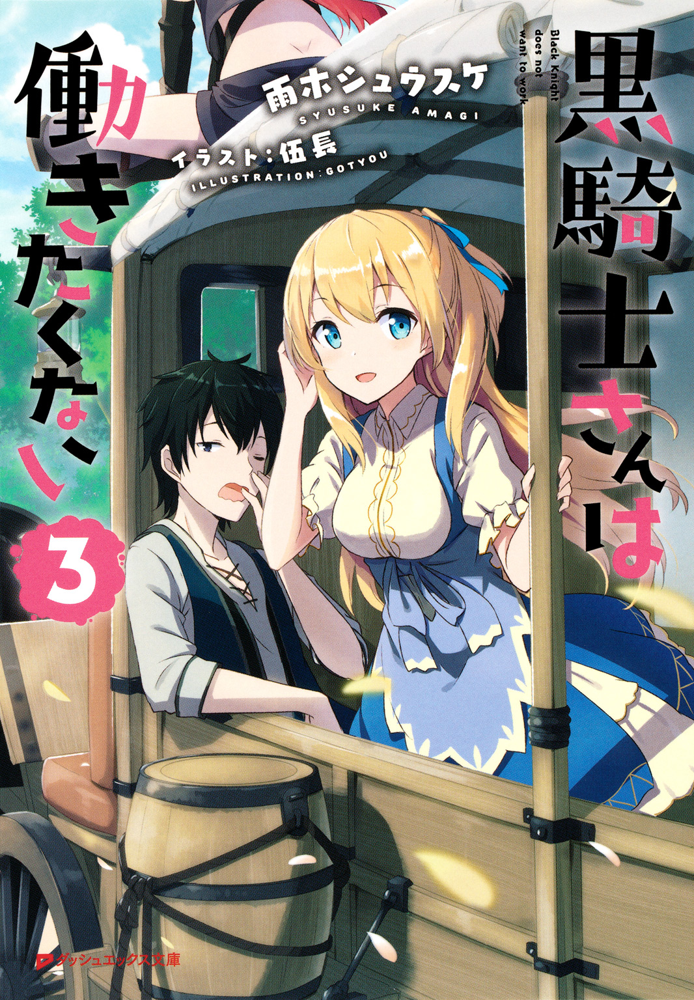
この本は縦書きでレイアウトされています。
また、ご覧になる機種により、表示の差が認められることがあります。
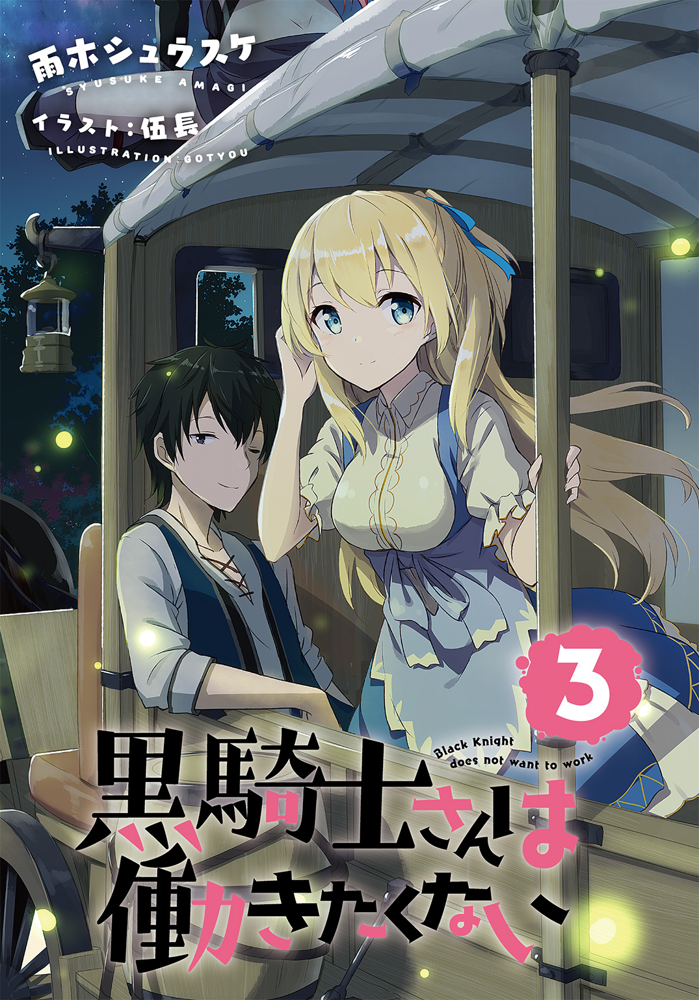
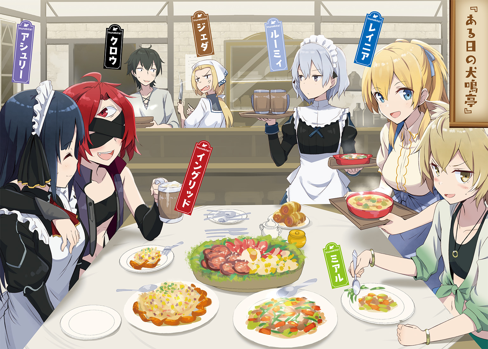
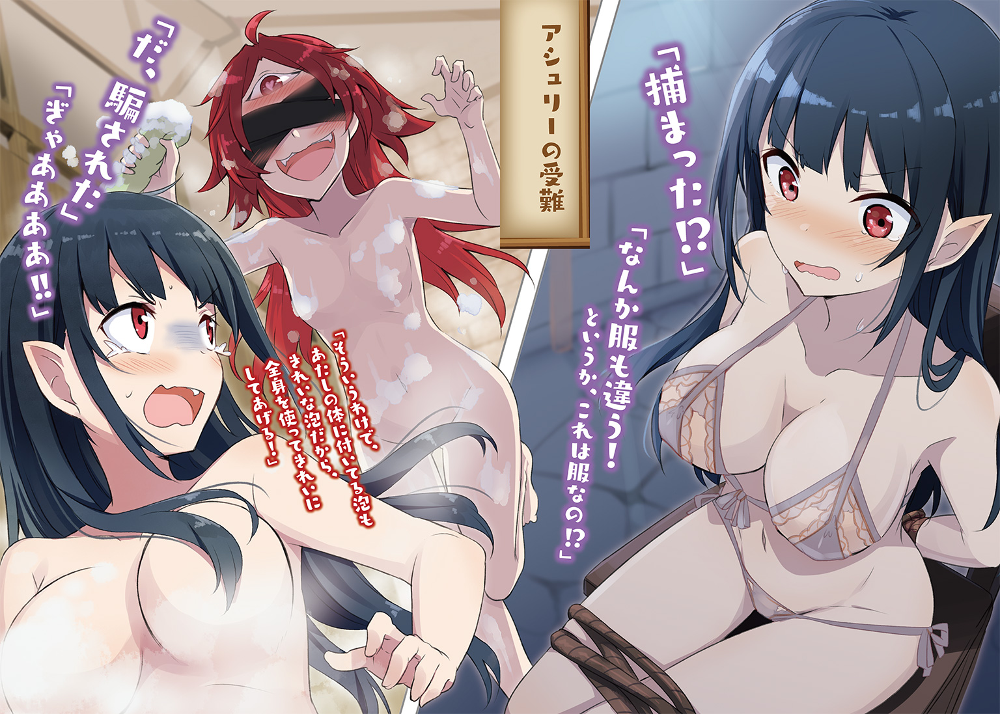
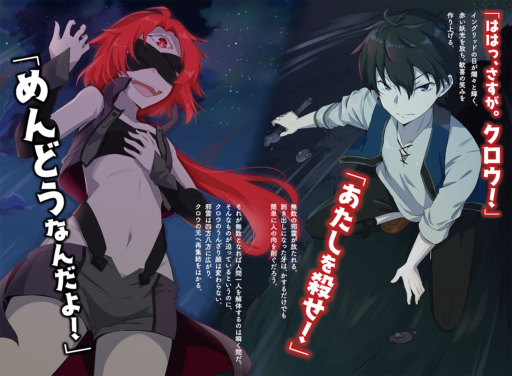
 ダッシュエックス文庫DIGITAL
ダッシュエックス文庫DIGITAL
黒騎士さんは働きたくない３
雨木シュウスケ
プロローグ
ラスティーユ新王国では貴族や騎士たちの館は王城に対して正面を向くように建てられている。
これは城で変事が起きた際に、いち早く察知することができるようにという考えがあってのことだ。
目覚めとともに目にする王城の威容は国の繁栄と安寧を感じさせ、そしてそれに自らが寄与しているという達成感や満足感を自覚させた。
ひいてはそれによって愛国心や忠誠心が芽生えるという効能もあった。
だがそれも、『かつては』という言葉を付けざるを得ない。
いま、その習慣によって貴族や騎士たちが目にするのは焼け落ちた城だ。
かつての威厳はそこにはない。奪い取られ、そして奪い返したものの、栄光はいまだその地に宿ってはいないことを示す役目しか果たしていない。
それはもはや敗北の証でしかない。
そんなものから目を離すことを許されず、常に視界に置かされている者たちの気持ちを新たなる女王であるヒルメリアは理解しているのだろうか？
「いいや、理解していまいよ」
呟いたのは、若い声だった。
声の主は屋敷の庭にいてそれを見上げていた。黒ずんだ焼死体めいたその様を見て、声の主はため息のような大きさで言葉を続けた。
彼の手には剪定バサミがあり、彼の前には薔薇で飾られた棚がある。
「民の生活を考えるのも大事だ。だがまずは、その心を救うことこそが重要だ」
声の主の名は、ハインド・ジョゴス・ヒムライヒという。ラスティーユ新王国の貴族として、伯爵の立場にある。
銀の髪に銀の瞳、背は低く髭もない。少年のようだが、彼は立派な成人である。
だがこの容姿で彼を侮るものがいたとすれば、いずれ後悔することになるだろう。
屋敷の庭は広い。だが、花畑の花は不揃いだし、芝生の刈りも甘い。門から屋敷に通じる周辺は整っているが、視界を左右に巡らせれば粗が目立つ。
人手不足が屋敷の維持を困難にさせていた。
旧王国から帝国、そして新王国という王都支配の移行はスムーズに行われたものの、それでも多くの人々は逃げだし、そして外で戦火に見舞われたこともあっただろう。
なによりも問題なのは王都から逃げ出した人々の中には、新王国となっても戻ってこなかった者もいたことだ。
特に貴族の庭を扱えるような職人の数は減った。逃げ出した者は自領で抵抗を続けていた貴族たちに召し抱えられ、ほとんどの者はそのまま居着いて戻ってこない。
かくいうハインドも王都外にある自領には庭師たちも十分にいるのだが、王都には呼び寄せていない。
他の貴族もそうだろう。
これはラスティーユ王家が貴族たちの信用を得ていない証拠だ。
『また荒れるかもしれない』
そう思われているのだ。
「生活は多少苦しくとも我慢できる。だが、心の安定が失われていてはそんなものはすぐに崩れてしまう。なにはなくとも、あの焼死体はさっさと片付けてしまわなければならないのだよ」
言いながら、ハインドは色の悪い薔薇を剪定バサミで落としていく。
「生を栄えさせたい場所に死はいらない。そのこと、君はわかってくれるかな？」
ハインドが振り返ると、そこに一人の姿があった。貴族の屋敷に仕える者の風体ではない。
そもそもこれは人なのか？
昼の陽光が降り注ぐ庭の一点に、黒い靄のようなものがとどまっている。まるでガラスコップで汚れた水を見ているかのようだ。
黒い澱の中心に、赤い光が一つある。
赤い光から強い視線を感じて、ハインドは微笑んだ。
「この都はいま、昼日中に呼ばれて困っている君のようだとは思わないかい？」
「仕事があると聞いたけど？」
黒い靄から声が響いた。押し殺した低い声は、ハインドの問いかけを無視した。
ハインドもそれは気にしていない。
「そう。あるんだ。そして、君の頼みごとも片付けられる」
「それは......」
「そう。黒騎士の情報だ」
靄の中の赤い光が強くなる。
ハインドは少年の笑みでその様子を見守った。
黒騎士さんは忘れっぽい？ 01
バチン！
いきなりのことにレイニアが目を丸くして驚いた。
ジェダもギョッとした顔で振り返っている。
ルーミィだけがその場面を見てニヤリと笑っていた。
「............ああ」
クロウは間の抜けた声を漏らし、頰に走った痛みについて考えた。
目の前には硬い顔をしたアシュリーがいる。その目は少しばかり涙をにじませていた。
朝の犬鳴亭だった。
開店準備中で、犬鳴亭の休憩室で寝起きしているクロウは目覚めたばかりだった。ジェダの冷たい視線をいつものごとく受け流していると、アシュリーがやってきたのだ。
まだ半分寝ぼけていたクロウはアシュリーが機嫌良く話す姿をぼんやりと眺めていた。
そうしていたら、突然に怒り出したのだ。
さすがのクロウも目が覚めた。
「クロウ様の............アンポンタン！」
「あ、アンポンタンってなんだ？」
「バカ！ ヒキコモリ！ ニート！」
「お、おう。それはわかってる」
「うう......」
悪口がまるで通用しなくて、アシュリーは悔しそうに顔を歪ませる。だが、クロウだって戸惑っている。
なにしろ、アシュリーがいきなり怒ったのだ。
「クロウ様の......クロウ様の......」
肩をブルブルと震わせてクロウを睨んでいたアシュリーは、ついに背を向けて厨房を抜け......そしてそのまま外に出て行った。
「......なぁ、どうしておれは怒られたんだ？」
呆然としたままクロウは尋ねたが、それにちゃんと答えられるものはいなかった。
なにしろみんな、開店の支度でそれぞれにやることがあって、誰もクロウたちのことを気にしていなかったからだ。
「ついに愛想を尽かされたか」
にやにやとジェダが笑う。
「レイニア、お前ももうこんなクズヒモは見捨ててしまいな」
「うーん」
それにレイニアが困った笑みを浮かべる。
「働くのは良いことなのですけど。働きすぎても困るのです」
「なんでだい？」
「わたしの働く理由がなくなってしまいます」
「レイニア......」
真面目にそんなことを言うものだからジェダだけでなく、ルーミィまで情けない顔で脱力している。
「レイニア様、それではあのダメ男をさらにダメ男にするだけです」
ルーミィが涙ながらに訴えるのだが、そんなことでレイニアの笑みは崩れない。
「あら、でも人には生きる理由が必要ですから」
「そのためにはこいつがダメ人間になってもいいと？」
「仕方がないですね」
闇が見え隠れしそうな返事に、さすがに二人ともレイニアになにも言えなくなる。
ルーミィが小声で話しかけてきた。
「あんた、別にあんたじゃなくても良さそうだけど、いいの？」
「あいつの被害者をこれ以上増やさないためには、おれがここにいるしかないんだ」
「うるさいわ」
悲壮な決意を湛えた顔で答えられて、ルーミィは付き合いきれないとため息を吐いた。
「あんたの腐れ芝居はどうでもいいとして、あの子はどうするのよ」
もちろん、アシュリーのことだ。
「どうしたもんかな？」
クロウは首を捻る。
これでも、アシュリーがどうして怒ったのか、思い出そうとしているのだ。
「ん～でも、ほんとに寝ぼけてたからな」
アシュリーがなにかを話していたのはわかっていたが、内容が頭に入ってこなかったのだ。
それでぼーっとしていたのだが......。
「そしたら、急に怒り出したんだよな」
「そういえば、今朝はアシュリーさん、とてもご機嫌でしたよね」
「やっぱり。今日はアシュリー休みだったし、あんた、約束すっぽかしとかしたんじゃないの？」
「約束～？」
もうこれ以上、首は捻れない。どれだけ思い出しても約束らしい約束はしていないのだが......。
「まぁでも、百割あんたがわるいんだろうけどね」
またとない好機だとばかりに、ルーミィは調子に乗ってクロウを責める。
クロウとしてはその言い方に呆れるばかりだ。
なにより、クロウのダメさをレイニアに強調したいのだろうが、その彼女がダメでいいと言ってくれているのだから、功を奏することはないと思う。
だが、ルーミィは諦めないのだ。いつか、レイニアがクロウを見捨てる日が来ると信じている。
その根性はたいしたものだとは思う。
「百割って、どんな割合だよ」
だからとりあえず、クロウはその言葉に呆れるしかない。
「千パーセントよ！」
「言い方の問題じゃないっつうの」
ただ、めんどうだ。
「クロウさん」
ルーミィとぎゃあぎゃあやりあっていると、レイニアが口を挟んだ。
「アシュリーさんを追いかけましょう」
「ああ......まぁ、そうだな」
いつもなら渋りたいのだが、ここでルーミィにチクチク変なことを言われ続けるのも鬱陶しい。
クロウはのろのろと立ち上がると、だらだらとアシュリーを追いかけて犬鳴亭を出るのだった。
「............ていうか、誰か正解を知っているのかい？」
クロウの姿が見えなくなってからジェダは二人に聞いてみた。あるいはもしかしたら、少しは痛い目見た方がいいと、あえて黙っているのかもしれないと思ったからだ。
「......いえ」
「知るはずありません」
なのに、二人はあっさりと首を振る。
「あいつ、ちゃんとできるのかしらね？」
クロウのことなどどうでもいいが、働き者のアシュリーのことを考えると不憫になるジェダであった。
だらだらと犬鳴亭を出たクロウだったが、簡単にアシュリーを見つけてしまった。
すぐ近くのパン屋で新作らしきパンの味見をしていたのだ。
「はっ！」
「............なにしてんだ？」
幸せそうな顔でパンを頰張っていたアシュリーだが、クロウを見るなり我に返った。
さすがに、クロウも呆れた。
「ほっ、ほれはほうでははふぃはふはふほほもごっ!!」
「わかった。いいから落ち着け」
慌ててなにかを言いかけてむせるアシュリーに、クロウは距離を保ったまま何度も頷いた。
パン屋のお姉さんが慌てて飲み物を出してくれ、アシュリーはそれで喉に詰まったパンを流し込む。
「ううっ」
涙目のアシュリーは恨めしげにクロウを睨む。
「おれが悪いのかよ」
クロウとしては呆れるしかないのだが、だからといってアシュリーを追いつめるような愚を犯すこともなかった。
「いや、うん......おれが悪いな。わかった。おれが悪い。全面的におれが悪い」
「なっ、なんなんですか？」
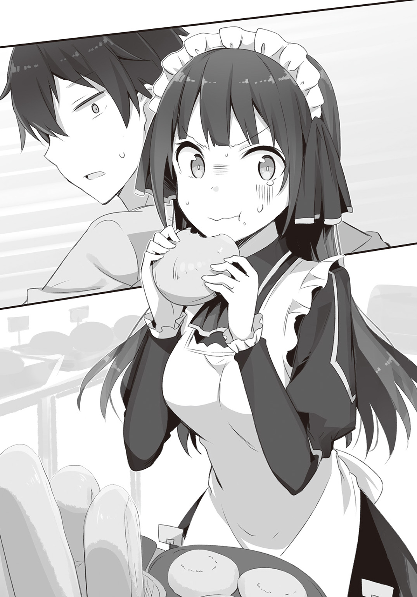
「だから頼む。どうしておれが悪いのかを教えてくれないか？」
「ば、ばかぁぁっ！」
「むっ、ばかとはなんだ？」
「なんでそんなこと言うんですか!?」
「わからないから聞いてるんだろうが。すげぇまじめに聞いてるぞ」
「どこがまじめなんですか!?」
目を見開いて怒鳴り返すアシュリーは見たことがないような気迫を放っていて、さすがのクロウも勢い負けしてしまった。
「やっぱり、クロウ様は変わってしまいました！」
「お、おう......」
「そりゃあ、ちょっと怠け者のグータラのヒキコモリの働くのが大嫌いでレイニア様やわたしに養ってもらっても全然引け目とかないのはどうかなと思いますけど......」
「いや、うん、まぁ......そうだな」
「でも！ 芯の部分は以前のクロウ様そのままだと思っていたのに！」
叫んだアシュリーは泣いていた。
犬鳴亭での比ではない。大粒の涙をぽろぽろと零していた。
そして......。
ヒソヒソヒソ......。
「痴話喧嘩だわ」
「痴話喧嘩だな」
「こんな朝っぱらから」
「あれだろ？ レイニアちゃんとこのヒモだろ？」
「まぁ、やっぱりアシュリーちゃんにも手を出してたのね」
「外道」
「クズね」
「死ね」
あっという間にできあがった野次馬からの心ない悪罵には、さしものクロウもちょっと泣きそうだった。
なにしろ意味がわからない。
どうしてアシュリーがこんなに怒っているのかがわからなくて、それでクロウも精神の立て直しに戸惑っていた。
「なぁ、おれがなんか悪いことを言ったのか？ それなら謝るから。おれがなにをしたのか言ってくれ？」
ヒソヒソヒソ......。
「そんなの決まってる」
「ヒモだからよ」
「ヒモだからだな」
「ヒモだからに決まってるだろ」
「そんなこともわからないのかよ」
「クズだな」
「死ね」
もうとりあえずこの場から逃げたい。
（ああもう、いつもならこんなの余裕で無視できるんだがな）
本当に、アシュリーがどうしてこんなことになっているのか、クロウには理解できない。
「......本当にわからないんですか？」
そう言ったアシュリーは涙を止めていた。代わりに乾燥した目で見つめられた。
「本当に忘れられてしまったのですか？」
「は？」
「もう、わたしのクロウ様はおられないのですね」
「おい、それってどういう......」
「さよならです」
ヒソヒソヒソ......。
「やっと夢から覚めたみたいよ」
「そうみたいだな」
「いいことよ。ヒモ男になんかつかまるもんじゃないわ」
「やっとおれにもチャンスが」
「いいや、おれだ」
「おれだ」
「だからクズは」
「死ね」
「オチだけきれいに揃えてんじゃねぇよ！」
さすがに無視しきれなかった。
だけど、野次馬たちに怒鳴っている暇なんて実はなかった。クロウがよそ見した隙を突いてアシュリーは走り出してしまったのだ。
「くっそ......」
なんだかわからない。
いまさらどんな文句を言われようと聞き流せると思っていた。ヒモだろうがクズだろうニートだろうが、事実なのだから仕方がない。
だが、アシュリーの言葉は果たして事実なのか？
「いや、事実とかどうとかじゃなくてな」
まっすぐに走っていたアシュリーがふいに曲がり、彼女の姿は建物の陰に消えた。
去られるのだって仕方がない。
クロウは黒騎士ではないし、アシュリーだってメイドでいる必要はない。帝国はなくなった。それなら、新しい道を見つけることになったって仕方がない。
だけど......。
「なんか、その捨て台詞で消えられるのってすげぇむかつくな！」
クロウは叫び、その姿を黒に覆った。
魔錫だ。
帝国の皇帝より伝授された古の魔法『魔錫鬼王』。
魔物を操り、力を与える黒い物体をクロウは独自の方法で武器や道具として扱う。
黒い塊となったクロウは跳躍すると建物の屋根に乗った。魔錫の細い糸を進む先に伸ばし、引っ張る。それでクロウの体は跳躍したかのように宙を舞う。
クロウの体を覆った魔錫はそこら中に細い糸を飛ばす。それはもはや蜘蛛の巣だ。巣の上の蜘蛛は自由自在に突き進む。
クロウは蜘蛛となってアシュリーを追いかけた。
「え？」
頭上の異変に気付いたアシュリーは、なにが起こっているのかわからなかった。
なにか黒いモノが頭上にいる。
すぐにそれがアシュリーを追いかけているのだとわかった。
「ひ、ひえええええっ！」
悲鳴が勝手に出てきた。
走るしかない。
なんだかよくわからないけど黒くて蜘蛛っぽいなにかが建物の上からアシュリーを追いかけているのだ。
「あわわわわっ！」
いきなりのことで、なにがなんだかわからない。
だけどいまはとにかく、必死に走って逃げるしかないのだ。
そう思っていたのだけど......。
「アシュリ――――――!!」
逃がしてなるものかと追いかけていたそのときだ。
音と衝撃がクロウを襲った。
ゴウン！
それはもう、人を殴る音ではなかった。
「ぐはっ！」
思わぬ衝撃にクロウは魔錫を散らして吹き飛ぶ。
「な、なんだ？」
どこかの屋根で背中を打ってゴロゴロ転がり、クロウはなにが起こったのかを確かめた。
その時にはすでに、殺気は頭上に迫っていた。
魔錫の剣で振り下ろされたそれを受け止める。目に火花が散るような衝撃が体を揺さぶる。
「誰だ？」
重い一撃。揺れた視界は黒い塊を捉えた。
まるでさっきまでのクロウのように真っ黒だ。
だが、この黒は魔錫によるものではない。これは無数の黒いなにかによる集合体だ。
「まさか......」
なにより、クロウはこれを知っている。
「そこまで堕ちたか、黒騎士」
黒いなにかの中から抑えめの声が聞こえてきた。
「やっぱイングリッドか！」
その声に応じるように黒いなにかが動き、中身が姿を現した。
細身の体が露になる。肌部分の多い革製の衣装がスレンダーな体を飾り、剝き出しの太ももは眩しいほどだ。
赤い大きな瞳が印象的だ。
ただしその瞳は一つしかないし、なにより額にあった。本来の瞳がある部分には革製のベルトのようなものが巻かれて隠されている。
瞳の炎が移ったかのように赤い髪は癖が強くあちこちに跳ねている。
イングリッド。
それが彼女の名だ。
そして、クロウとともに帝国軍で戦った。
そう、彼女もまた魔物だ。
「変態に堕ちたなら生きている価値はないな」
手にしていた棘だらけのメイスが、次の瞬間には槍に変わって心臓を狙う。
「待て待て待て！」
クロウは慌てて飛びのき、的確に命を取りに来ている穂先から逃れた。
追撃の手を止めようとしないイングリッドをクロウは止める。
「いまのおれは確かにヒキコモリでクズでニートかもしれん。レイニアやアシュリーに養ってもらって、それを申し訳ないなとか思ったりしないぐらいにプライドがない。だがっ！」
思わぬ言葉だったのか、イングリッドは額の瞳を丸くして動きを止めた。
「......変態ではないと断言できる」
「なに一つ自慢できるものがないのは、逆に凄いかもしれないな」
「なっ！ そう思うよな？」
「だが死ね」
「なんでだよ！」
「アシュリーを泣かせていただろう。あたしの数少ない友人を泣かす者には万死の報いを」
「その理由を聞いてんのにあいつが答えてくれないんだよ！」
「話したくないほど嫌われたということだな？ やはり殺す」
「殺すなよ！」
「我が儘め」
「お前もな」
そのまま、二人はしばらく睨み合った。
睨み合った末、二人はふっと笑みを零す。
「久しぶりだな、クロウ」
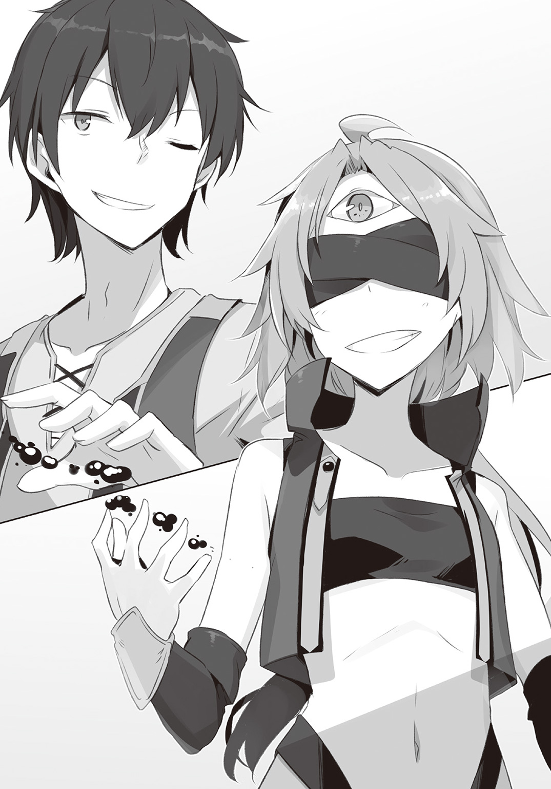
「お前もな、イングリッド」
そう言うと、二人とも武器を手から消した。
二人にとってはこの程度の殺気のやりとりは挨拶代わりでしかない。
「それで、なにをしてアシュリーを怒らせたんだ？」
「それがわかんないから聞いてんのに、答えてくれないんだよ」
いい加減疲れた。クロウは天を仰ぐ。
「クロウがあんなに取り乱すのも初めてみたしな」
「うるせぇ」
「それだけ、アシュリーが大事か？」
「......お前、あれだけ周りからクズクズ言われてみろ。いくら事実でも腹立つっての」
「まぁいい。では、アシュリー研究家であるあたしが彼女の怒りの原因を調べてやる」
「え？ なにそれ？」
研究家？
アシュリーの？
驚くクロウの視線が見えていないのか、イングリッドはむしろ誇るように唇を吊り上げた。
「帝都にいた頃は常に彼女の行動を観察していたからな」
「うん。それ世間ではストーカーって呼ぶから」
「世間の価値観なんて、それこそあたしたちには無価値なものじゃないか」
なにしろイングリッドは魔物だ。
そしてクロウだって世間から落伍してしまっているという点では結局同じだ。
人間の常識なんて気にする必要はない。
イングリッドはそう言いたいのだろう。
「まぁこの場合、決めるのはアシュリーだけどな」
......などということは、イングリッドには聞こえないように呟く。ルーミィにしろこのイングリッドにしろ、思い込みの強い性格はめんどうくさい。
「ではまず、どのような状況だったのかあたしに説明をしてみろ」
「ん～それは......」
しかたなく、クロウは今朝のことを話した。
といっても、話すことなんてほとんどない。
「あいつは今日、休みだったらしくて、それでなんかテンション高くて、おれは寝ぼけててよく聞いてなくて......」
「よしわかった」
「はぁ!?」
「なんだ？」
「早すぎだろ」
「簡単すぎる。むしろ、こっちが驚く」
「なにを？」
イングリッドが責める目でクロウを見ている。
「約束を忘れたのか？」
「約束～？」
クロウは渋い顔をした。
またも約束だ。
「だから、ルーミィにも言われたけど、なんも約束してないって」
「違う」
「なにが？」
「いまだに寝ぼけてるのなら、耳から針刺して脳を搔き回してやるぞ」
「怖いわっ！」
「よく考えろ。あたしが知ってる約束だぞ」
そう言われ、クロウは渋い顔のまま考えた。
イングリッドが知っているクロウとアシュリーの約束？
いや......。
それはつまり、最近のものではないということだ。
最近ではない。イングリッドも知っている。
帝国があった頃のこと、ということになる。
「....................................あっ」
それがなんなのか、クロウはようやくわかった。
いや、思い出した。
†
そのとき、アシュリーはとぼとぼと歩いていた。
「うう......」
疲労と後悔が足を重くしている。
いくら頭に血が上ったとはいえ、言い過ぎた......かもしれない。
「いえ......でもあれは、クロウ様が悪いんです」
断固たる思いでそう言いきる。
言いきるべき。
言いきるのだ。
言いきり......たい。
「でも......いきなりあんな怒り方をすることはなかったかも」
不意に浮かんできた不安がアシュリーの胸の奥をぎゅっと摑む。
思い出しているのは、クロウとの約束のことだ。
クロウとその話をしたのは、帝都にいた頃だ。
あれから色々あったし、ドタバタと環境も変わってしまった。クロウが忘れていたとしても仕方がないのではないか？
なんて、いまさらながらに思ったりもする。
「でも......あんなこと言って、戻るなんてできないし」
もうこのまま、本当にさよならするしかないのかな？
「うう......」
そう考えると、収まっていた涙が再び溢れ出しそうになり、アシュリーは慌ててぐっとこらえた。
黒い塊......たぶんクロウに追われて必死に逃げて、ふと気が付いて後ろを見るともうなにもなかった。
わけがわからなかった。クロウが本気で追いかけていたのだとしたら、アシュリー程度の逃げ足で撒けるはずがない。
だからこれはきっと、クロウが追いかけるのをやめたのだ。
それがどういうことかを考えると、今度は気管が詰まったような錯覚が起きて、息が苦しくなる。
「これでいいんですよ。これで」
もうそうやって思い込むしかないのだ。
そんな風に哀しくて自分がどこを歩いているのかもわからなくなっていたときのことだ。
「ふぐっ！」
いきなり口を押さえられ、なにかを嗅がされた。
次の瞬間にはアシュリーの意識は途切れていた。
夢を見ていた。
どうして夢だとすぐにわかったのかといえば、周囲の光景がいまと違ったからだ。
ここは帝都の城だ。
長い歴史のあるこの城は、とにかく広くてとにかく高くてとにかく豪華だった。床も壁もピカピカで、飾られている調度品はとにかく高価そうできれいだった。
こんなところにいても良いのかしらと不安になるとともに、こんなところで働いているのだと誇らしくもなる。
その日のアシュリーは渡り廊下の掃除をしていた。
そこに、黒騎士姿のクロウが通りがかったのだ。
「なにをしている？」
黒騎士姿のクロウはわざと大人びた喋り方をしている。兜を通すと彼の声はくぐもり低くなるので、ちゃんと大人が喋っているように聞こえるのだ。
「あっ、これは......」
問いかけられ、アシュリーは返答に困った。
「今日は休みだったろう？」
そうなのだ。
クロウの言う通り、今日は休みの日だった。
それに、アシュリーの担当は黒騎士の身の回りの世話なので、こういった城の清掃は役目ではない。
休日に出てきてやることがなかったので、わざわざ、他のメイドに頼んで仕事を回してもらったのだ。
「休むのも仕事だぞ？」
「クロウ様には言われたくありません」
そんなことを言うクロウも、朝から晩まで働き通しで休んでいるところを見たことがない。
「おれはいいんだよ。他にやることもないし」
開き直った様子でクロウは言った。
「それに、いいこと思いついたからな」
「いいこと、ですか？」
「おれ自身が出られないなら、おれそっくりの連中を外に送ってやる。あいつらの渋い顔が想像できて面白い」
稚気を滲ませて笑うクロウからは鎧の中に隠された本当の年齢が窺えた。それは好ましいのだけど、言っていることは物騒そうなので、アシュリーとしては呆れた顔をするしかなかった。
クロウの言う『あいつら』というのは、外の国から来た大使や大臣たちだ。彼らは自分たちの影響力を見せつけるために黒騎士の動きを制限しようとしているのだ。
実際、彼らを派遣した周辺国家は帝国に兵力や資金を提供している。皇帝も彼らを無視できないし、故に黒騎士も自分の行動を曲げなければならない。
だが、曲がったままではいないのが黒騎士クロウの性格なのだろう。
「四魔将という。おれそっくりの黒い鎧を着た連中だ。強いぞ。あいつらも驚くだろうな」
「はぁ......」
その辺りの話は良くわからないので、アシュリーは生返事をするしかない。
「まっ、それはそれとして、だ」
クロウもそのことがわかっているので、すぐに話題を変えた。
というか、戻した。
「で、アシュリーの休日の件だ」
「あ、うう......」
「帝都に下りて色々と見て回ればいいだろう。市場はちゃんと動いているぞ」
「そうかもしれないですけど......」
本当はアシュリーだって興味はある。山の奥地の貧村で育ったので、豊かな都会を観光したい気持ちはある。
だけど、行くのは怖い。
未知のものに対する単純な恐怖だけではない。
問題なのは、人だ。
ここは一国の首都なのだ。だからそれはもう、たくさんの人がいる。
たくさんの男性がいる。
そんなにたくさんの人がいる中で、もしもアシュリーがサキュバスだとばれてしまったら、一体どうなってしまうのだろう？
それが不安で、アシュリーは観光に行く気になれなかった。
皇帝陛下や黒騎士と出会って、サキュバスだからと娼婦と同類のような扱いをするような男性ばかりではないとわかってはいたが、それでもやはり、まだ怖い。
それが顔に出ていたのかもしれない。
「......ああ、そういうことか」
ぽつりと、黒騎士は言葉を漏らした。
「そうか。どうしたものかな？」
クロウは鎧をガチャリと鳴らして腕組みをし、考えているようだった。
アシュリーのために本気で打開策を見つけようとしてくれているのだ。
その姿を見ていると、アシュリーはなんとも言えない気持ちになった。
だから、言ってしまった。
「それなら！」
「うん？」
「それなら、クロウ様が一緒にいてくだされば......心強い、です」
言った瞬間に、すごく後悔した。
主人であり、恩人でもあるクロウになんてことを言ってしまっているのか。
（怒られてしまう）
そう思っていたのだが、クロウの反応は違った。
「うーん......まぁ、四魔将の配置さえ終わっちまえば、後はそんなに急なことも起きないだろうしな」
「え？」
「まっ、なんとかなるんじゃないかな」
「それって......」
「いいぞ」
「クロウ様......」
思わぬ展開にアシュリーは一瞬、なにが起きてるのかわからなくなった。
だけどすぐに嬉しくなる。
飛び上がりたくなるぐらいだけど、アシュリーは我慢してクロウを見上げるだけにとどめた。
仮面に隠れたクロウがどんな顔をしているのかは、わからない。
わからないけれど、嫌な顔をしているとは思わない。
「でも、おれも詳しくないから」
「それなら、一緒に色々見て回りましょう！」
「ん。だな」
そう言ってくれて、アシュリーは本当に嬉しかった。次の休みの日が待ち遠しくなった。
「約束ですからね。休みの日のお出かけにはちゃんと付き合ってくださいね」
「おれも暇だったらな」
「はい！」
そう。これは約束なのだ。
クロウとアシュリーの。
二人が主人とメイドである限り、この約束は続くのだ。
だから......。
「いまは常に暇じゃないですか!?」
夢の中で叫んだつもりだったのに違う感じがした。
「......へ？」
気が付くと、アシュリーはどこかにいた。
外ではない。屋内だ。
ぜんぜん知らない部屋にいる。光があまり入らない暗い部屋だ。埃とカビが混ざった嫌な臭いが鼻を突いてくしゃみが出た。ずっと無人だったのか、それとも掃除をしていないのか。とにかく、腐りかけの家にいるような感じがした。
「ここは......？」
そういえば、なにか変なものを吸わされたような気がする。
動こうとしたらできなかった。両手は背中で縛られていたし、足も同じように座らされているイスに縛られていた。
あれで眠ってしまっていたのか？
だとすれば、いまのこの状況は？
「捕まった!?」
どうして!?
と思っていて、ようやく気付いた。
「なんか服も違う！」
いつものメイド服ではない。
「というか、これは服なの!?」
布面積があまりにも少なすぎる。服というよりは下着だ。
それに......そういえばこんなものを以前にも着せられたことがある。
「うっ......」
あのときのことを思い出し、アシュリーは息が詰まった。
旅に出てすぐに奴隷商人に捕まった時のことだ。
あの時もこんな服ばかり着せられ、いろんな人に売られた。結局、サキュバスという名前に興味を持ちながら、同時にその名前の魔力に恐れをなして、献上品扱いでいろんな人の手に渡っていくばかりだったのは、不幸中の幸いだったのだけれど......。
自分の存在が商品として扱われる感覚が好きになれるはずもない。
ともあれ。
こんな服を着せられて、身動きが取れない。
その事実が示すもの......想像してアシュリーは血の気がひいた。
「うう......」
段々と体に震えがやってくる。
だけど......怖がってばかりでは、だめだ。
アシュリーは涙目になりながら、辺りを警戒した。
そうしていると、足音が近づいてアシュリーのいる部屋に入ってきた。
「おお、気が付いているな」
入ってきたのは三人。口を開いたのは猪顔の獣人だった。豚と間違えそうだけれど牙があるからわかる。
それからひょろ長い男と、神経質そうな男。
「あっ」
後から来た二人の人間は知っていた。
だけどそれよりもまずは......。
「変態！」
アシュリーは怒りに任せて叫んだ。
「んなっ！」
思わぬ反応だったのか、三人が驚く。
「気絶した女の子に三人がかりでこんなのを着せるなんて、変態！」
「ちっ、違うぞ！」
叫んだのは神経質そうな男だ。
「着替えさせたのはおれたちじゃない！」
「そうです」
ひょろながもそれに加わる。
「女性奴隷を着替えさせるのは専門のスタッフがいますから」
「専門？」
「もちろん。うちはそこら三流の商人ではありませんから、商品に手を出すような愚は犯しません」
ひょろながの毅然とした態度に意表を突かれ、アシュリーの怒りは急激に萎んでしまった。
「そ、そうなんですか......」
安心して良いものなのかどうか、判断に困る。
（いや、捕まっているのは事実なんだから、安心はできないですよね）
納得してはいけない。
呼吸を押さえて、アシュリーは三人を観察した。
二人はやはり以前に地下で出会った闇商人と魔錫使い。
「たしか、スラーダさん？」
「おお、覚えていたか」
スラーダが顔を上気させて喜ぶ。
「どうだ？ 黒騎士のメイドに名前を覚えられていたのだぞ」
以前にそこの闇商人が名前を呼んでいたのを覚えていただけなのだが、魔錫使いのスラーダはそれ以前から名前を覚えられていたと受け取ったようだ。
それで気分よくなっているのなら、とりあえずいまは黙っておこう。
「それに相応しい実力があるのならいいんですけどね」
そう思っていたのにひょろながが余計なことを言う。
「なんだとロブレン！」
「実際には黒騎士の足下にも及ばないではないですか」
「ぐぐ......」
「まぁ、それはいい」
猪の獣人が二人の間に割って入った。
「ガウガンドさん」
「二人はおれの大事な仲間だ。仲間が立派なのはいいことだ。頼もしいんだからな」
「ふふん」
「ロブレンもこれからだ。必ず、おれたちでこの街を裏社会最大の市場に変えて、それを牛耳ろう」
「ええ、もちろんです」
三人の男たちが絆を確認し合っている。
内容はとんでもないものだし、なによりアシュリーは被害者なのでそんなものに共感なんてしない。
しない、が......。
（名前はわかりました）
スラーダという魔錫使いだけでなく、闇商人の名前もロブレンだとわかった。
そして最後の獣人がガウガンド。
（たぶんこの人、ミアルさんのお父さんと敵対してるっていう獣人ですね）
獣人街を闇商人たちの市場にしようと企んでいる者がいるとミアルの父、ネイハブも語っていた。
「あの、どうしてわたしを捕まえたんですか？」
「うん？」
アシュリーの質問に、ガウガンドが首を傾げた。
「わたしがクロウ様......黒騎士にお仕えしていることを知っていて、なぜ？」
「それはな、黒騎士のメイドだからだ」
「え？」
驚くアシュリーに闇商人のロブレンが笑う。
「君は、強い者の側にいれば安心だと思っていたのかね？ それは違う。強い者の側に弱い者がいれば、つまりはそれが弱点だということだよ」
「わ、わたしがクロウ様の弱点？」
「そうでなければ、あんなに追いかけないでしょう？」
「そ、それは......」
この人たちはさっきまでのやりとりを見ていたのだ。
「本来は関わりたくないが、あいつをどうにかしなければこちらもうまく立ち回れん」
「そこにちょうどよい話を戴きましたのでね」
「この好機はなんとしても活かす」
三人が代わる代わるに話すのを、アシュリーは驚きながら聞いていた。
そして、哀しくなった。
「クロウ様は、来られません」
だって、クロウは途中でアシュリーを追うのをやめてしまったのだから。
いまごろは犬鳴亭のいつもの休憩室でゴロゴロしているに違いない。
もう、アシュリーのことなんて諦めてしまっているに違いない。
「それはない」
言ったのは三人の誰でもなかった。
「え？」
その声にアシュリーはまた驚いた。
「だ、誰だ？」
三人も驚いている。
「クロウはあれで執着が激しい。一度、受け入れたものを簡単に手放すわけがない」
「その声......」
そう呟いたとき、アシュリーはいきなり体が軽くなってイスから転げそうになった。
手足を縛っていた縄が突然に切れたのだ。
「おっと」
転げそうになっていたアシュリーを誰かが受け止めてくれる。
細い腕はやさしくアシュリーを抱え、引き寄せる。
その横顔を見て、やはりと思った。
「イングリッド！」
「久しぶり、アシュリー」
見覚えのある一つ目の友人は、優しく微笑んでくれた。
「イングリッド......だと？」
その名前にスラーダが顔を引きつらせた。
「黒騎士麾下の四魔将だって？ まさか、こいつらまで生きていたのか？」
「四魔将？ なんだ？」
ガウガンドが猪の鼻を動かし、唸った。
スラーダが説明する。
「外にはあまり知られていないだろう。帝都防衛の任に就いて動けなかった黒騎士に代わって、外で活動していたのが四魔将だ」
「そんなものがいたのか」
「ああ。帝国に出資していた諸外国が喧伝したがらなかったからあまり知られてはいないが、王国の反撃を各地で受け止めていられたのは四魔将の働きがあったからだ。英雄フリッツとも何度も戦っている」
「大物というわけですな」
「そういうわけ」
スラーダの説明が終わったところでイングリッドはニヤリと笑った。普通の人よりも鋭い犬歯が覗き、それだけで十分な威嚇になる。
そのときだ。
部屋の外からも騒ぎが聞こえてきた。
「なんだ!?」
「ああ、黒騎士だよ」
イングリッドの答えに、三人の顔が引きつる。
「必死に隠していたのだろうが、残念だな。あたしは、アシュリーの居場所ならどこからでも探してみせる自信がある」
「......はは」
イングリッドの微妙な言葉がうれしいような、しかし喜んでいいのか、アシュリーは引きつった表情しかできなかった。
「クロウ様が、本当に？」
それよりも、外の騒ぎだ。
この音は本当にクロウなのか？
「もちろん」
イングリッドは頷く。だが、その目は三人からは離さない。
「あいつには噓を吐いて隣に行かせたからね。一歩遅れているというわけだ」
「なんてことを」
「だって、そうしないとあたしの登場が地味になる」
そう言ったイングリッドの胸に黒いモノが突き刺さった。
「ははっ」
スラーダが笑う。その手からイングリッドに刺さった黒いモノが伸びている。
魔錫だ。
皇帝は魔物を操る魔錫鬼王の魔法を以て王国を打倒し、帝国を打ち立てた。その際、王国の諸外国に人間の兵力や出資を受けた。その代償として、皇帝は魔錫鬼王の魔法を諸国から派遣された者たちに伝授した。
彼らは皇帝の弟子と呼ばれ、いまや魔物を扱う希少な能力を持つ者として丁重に扱われている。
そう。スラーダは皇帝の弟子なのだ。
スラーダの魔錫がイングリッドに刺さった。
「イングリッド！」
その事実がなにをもたらすか......アシュリーは悲鳴を上げた。
イングリッドの目が見開かれたまま固まってしまう。
「たしかに四魔将は怖い。だが、魔物には変わりない。皇帝の弟子たるこのスラーダ様の魔錫があれば......」
「あれば？」
「支配することも......」
「ことも？」
「不可能ではない！」
「いや、不可能だよ」
唇だけが動いていたイングリッドが、固まっていた目を細くして笑った。
彼女に刺さっていた魔錫がくたりと力を失い、床に落ちた。
「そんなっ！」
思わぬ結果にスラーダが絶叫する。
イングリッドは笑った。
かと思えば、次の瞬間には笑いは消え、氷のような視線をスラーダに向ける。
「貴様ごときの軟弱な×××が、この邪霊のスモレンコスが眷属、イングリッドに絶頂を与えられると思ったか？ 分際をわきまえろ」
「がはぁっ！」
氷の視線を受け、スラーダがその場に膝をつく。
「くっ！」
スラーダの自信が砕けたその瞬間、闇商人のロブレンが動いた。
なにかを床に投げつけたかと思うと、部屋中が煙に満ちる。
「きゃっ」
驚いて固まっていると、ばたばたという足音だけが響き、そして遠退いていった。
そしてそれとは別に、近づいてくる足音がある。
「アシュリー！」
その声とともに風が吹き、煙が部屋から追い出される。
声の主は、やはりクロウだった。
「クロウ様！」
その姿に、アシュリーはほっと安堵したが、すぐに気まずくなってイングリッドの背中に隠れた。
なにより......。
（こんな恰好......クロウ様に見られたくない！）
恥ずかしすぎる。
なんだかもう......いろんな部分がちょっとした動きで見えそうになってしまうのだ。アシュリーはイングリッドの背後で、なんとかならないものかと体をくねらせる。
だが、クロウはそんなアシュリーの態度を見る間もなく、その場で跳んだ。
「はぁぁぁ!?」
急なことにアシュリーはもう驚くしかない。もうずっと驚きっぱなしだ。
その様子が、アシュリーにはなぜかスローモーションで見えた。
蛙のような恰好で跳んだクロウは、そのまま蛙のように四つん這いで着地すると額を床に擦りつけたのだ。
「すっ......ません......したぁっ!!」
「へ？ えええええ!?」
「約束、忘れててすいませんでした!!」
驚いていると、重ねてクロウが言う。
「あっ......」
思い出してくれたのだ。
それがわかっただけでアシュリーは涙が出てくるほどにうれしい。
それに、ちゃんと助けに来てくれた。見捨てられたわけでもない。それがわかったのだから、もうアシュリーはなにも言うことなんて......。
「そんなことで許すとでも思ったか？」
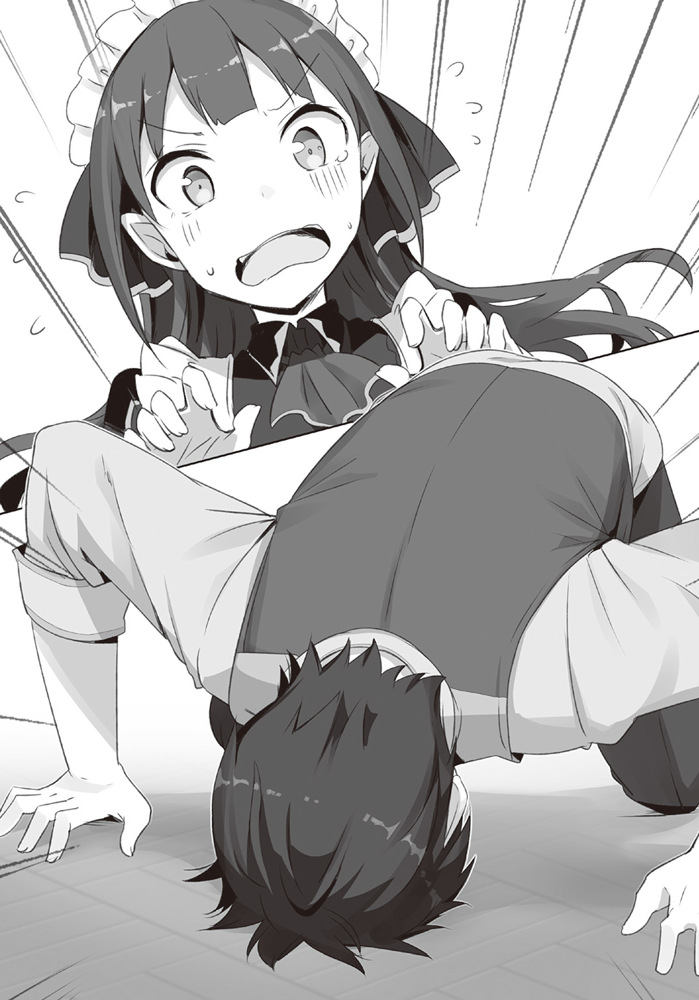
「......へ？」
言ったのは、アシュリーではない。
「ぐわっ！」
イングリッドがクロウの後頭部に片足を乗せたのだ。
「貴様ごときがアシュリーとの約束を忘れるなど言語道断。死んで詫びてもいいほどだ」
「えええええっ!!」
「うむっ、それがいい。死ね」
イングリッドの手に槍が現れるものだから、アシュリーは本気で慌てた。
「待って待って待って！」
「なぜだ？ こいつはアシュリーの大事な約束を忘れるような外道に成り下がったんだぞ？ 殺されて当然だろう？」
「当然じゃないですから！」
イングリッドの槍を押しのけ、足を叩いてクロウの頭から退かせる。
「クロウ様、大丈夫ですか？」
「いや、忘れてたのは本気でおれの落ち度だ。すまん」
「思い出してくれたんだから、もういいんです」
それでもクロウは頭を上げない。なんとか覗き見えた横顔のまじめさにアシュリーはどきりとした。
（なんだろう？ クロウ様自身、すごく驚いているみたい）
「クロウ様、お願いですから」
そんなクロウの姿に、アシュリーもさらに頼み、なんとか頭を上げさせることができた。
「ちぇっ」
そんな二人に、イングリッドがつまらなそうにするのだった。
†
無事に戻ってきただけでなく、イングリッドという新たな人物の登場に犬鳴亭の面々の反応はそれぞれ違った。
レイニアはいつもの微笑みで迎え、ミアルはよくわからない顔で首を傾げ、ルーミィはそれ以前にクロウが無事に帰ってきていることに嫌な顔をし、ジェダはまた増えたとうんざりした顔をした。
ジェダに頼み込み、アシュリーがクロウとイングリッドの好きな料理を作る。
休憩室のテーブルにはかつてないほどのご馳走が並んだ。
この頃にはクロウの様子も元に戻り、ジェダやルーミィの嫌味をいつもの調子で聞き流している。
クロウが元気になったようで、アシュリーはほっとしていた。
だけど、それも長く続かなかった。
「ねぇねぇ」
尋ねたのは、ミアルだ。
「お姉ちゃんもクロウ兄ちゃんを頼ってきたの？」
「うん？ クロウに用があったのは事実だが、頼るのはまた違うな」
「用？ なにそれ」
「約束を守らないから、殺しに来た」
「ええ！」
ミアルが目を丸くして驚くが、イングリッドが笑っているのを見て冗談だと思ったようだ。
ルーミィも、おそらくジェダもそう思っただろう。
レイニアはよくわからない。
でも、アシュリーにはわかる。
冗談ではない、と。
（イングリッド、いま、本気で言った）
そしてそれを、クロウも本気だと受け止めているのもわかった。
こぼれ話――煙の行方――
悪人どもが逃げ出し、アシュリーの服を探しているときのこと......。
「そういえば」
どうでもいいことと言えばそうなのだが、アシュリーは気になったことがあった。
「あの煙って、すごく簡単になくなったんですけど」
悪人たちが逃げ出すときに使った煙のことだ。
煙が充満してなにも見えなくなったというのに、いとも簡単になくなってしまったのだ。
部屋の換気はすごく悪かった。
たしかに悪人たちが逃げて、それとは逆からクロウが入ってきたのなら風の通り道はできていたかもしれないけれど、それにしてもあっという間に煙がなくなってしまった。
「そりゃ、風起こしたんだよ。魔錫で」
「ああ、やっぱりそうなんですね」
クロウの魔錫は変幻自在に姿を変えるのだ。
だから......。
「翼にして羽ばたいたんですね」
以前に、アシュリーを取り込んで空を跳んだこともあるのだ。きっとあのときの要領で風を起こしたに違いない。
......と、アシュリーは思ったのだけど。
「んにゃ」
クロウは首を振る。
「え？ ではどうやって？」
「そりゃ、こうやって......」
クロウは両手を前に構えて上下に振った。
「でっかいうちわ作ってばっさばっさと」
（ださっ！）
とは思ったものの、アシュリーは口には出さない。
出せない。
「あ、ははは、そうですか」
そうやって乾いた笑いをするしかできないのだが。
「うーわ、ダッサ」
イングリッドが素直に嘲笑うものだから、しばらくそこで無言の睨み合いが起きたのだった。
ヒキコモリは姿を見せない。 02
イングリッドに声をかけようと思ったとき、クロウとまだ皇帝ではなかったスレイドは魔物集めの旅をしていた。
あれは、野宿をしていたときのことだ。
闇夜に潜む殺気に、クロウは即座に焚き火からスレイドを引き離した。
「な、なにが......？」
闇の中でスレイドは手にしていたパンを放り投げ、自身の頭に落とした。それを笑う余裕もなく、クロウは潜めた声で告げる。
「敵がいる」
「獣......ではなさそうだね？」
クロウの声色に、スレイドもすぐに状況を察した。
「どうかな？ 人っぽくもないな」
「......魔物かい？」
「それもまた怪しい。なんだこの気配？」
そこまで言って、クロウの頭の中には現在の状況の因果関係が頭に浮かんでいた。
ここで野宿をする前、クロウたちはとある街にいた。久しぶりに屋根のある場所で寝られると思っていたのに、どこかに出かけて戻ってきたスレイドは慌てた様子で街を出ると言ったのだ。
それに、「魔物かい？」と言ったとき、スレイドの目が光った。
あれはなにかを知っている目だ。
「それは面白いね。クロウ君、なんとか接触してみてくれないかい？」
「いや、接触もなにも......さっ！」
予想通りの発言をするが、クロウもそれどころではない。気配の動きを感知するや、スレイドの襟首を摑んでその場から離れた。
闇に紛れてなにかが地面に突き刺さる音が連続して聞こえる。
あのままあそこにいたら、なにかに串刺しにされていただろう。
「こいつは間違いなくおれたちを殺しに来てるんだって！」
「そ、それは大変だ」
スレイドの言葉は本気なんだかわからない。
謎の刺突が闇から迫り、クロウはスレイドを引っ張り回しながら避ける。枝のような細身とはいえ、スレイドは立派な大人だ。それを十をいくつか過ぎた程度の少年が軽々と引っ張り回す様子は異常ではある。
そして、彼らを襲う見えない攻撃もまた、異常だ。
「ク、クロウ君。どうにかならないかい？」
「とりあえず、黙ってないと舌嚙むぜっ！」
「ひゃっ、ひゃぁぁぁぁぁぁっ！」
どうやら、夜目は向こうの方が利くらしい。気配だけで動き回るクロウの方が不利だ。
（せめて、正体だけでも......）
そう考えたクロウは、一度は離れた焚き火に向かって走った。背後からは気配が追ってくる。
クロウは焚き火の前を横切るや、反転し、気配に向かって火の付いた枝を蹴り飛ばした。
周囲に火が散り、わずかの間だが広い場所を照らす。
その、わずかな明かりが浮かび上がらせたものを、クロウも、襟首を摑まれたままのスレイドも見逃さなかった。
闇の中に幾つも浮かぶ黒い物体。涙滴状に近く、丸い底の部分に一つの目と牙を備えた口がある。
それら全てがクロウたちを見てニヤリと笑っているようだった。
「こ、これは......邪霊？」
「喋るなって」
「ぎゃふっ」
明かりは一瞬だし、邪霊たちも止まっているわけではない。宙に舞った火の粉の間をかいくぐり、迫ってくる。
クロウはそれらを避け、逃げ回る。
だが、同じことを繰り返しているわけではない。
一瞬だけの明かりでスレイドは邪霊しか見ていなかったかもしれないが、クロウは違う。
邪霊たちの行動には統一感がある。
つまり、操っているなにかがいるはずだ。
どこにいるのか、それをクロウはあのわずかな明かりの間に探し当てた。
手から現れた魔錫が集い、剣となる。
「そこだ！」
スレイドを引っ張り、邪霊たちに追いかけられながら、クロウはその気配に向かって剣を投げた。
途端、邪霊たちはクロウを無視して剣の向かう先に突進していき、自ら剣を受けた。
だが、それはただの剣ではない。魔錫による、仮初めの形だ。
邪霊の突進を受けるや剣はその形を変え、網となるや集っていた邪霊たちを一網打尽にした。
投網にかかった邪霊たちを間に置き、クロウはそこに立つ者と向き合った。
人の形をしているが、はたして人なのか？
「あたしを......よく見つけたな」
言葉が聞こえてきて、クロウは少しほっとした。
どうやら会話はできるようだ。
「なかなか面白い特技を持ってるじゃないか」
「お前もな」
軽口をたたかれ、クロウはスレイドを見た。もしも彼に思惑があったのだとしたら、この邪霊を操るなにかを引っ張り出したかったのだろう。
「............」
だが、あいにくとスレイドは目を回しているようだった。
「はぁ......しかたねぇなぁ」
クロウはため息を吐くと、影に話しかけた。
「おれはクロウ。このおっさんの国家転覆計画を手伝ってるんだ」
「国家転覆。そんな話は知らないな」
いまさらだが、声の感じからしてもしかしたら女性なのかもしれない。
（だからどうだって話でもないけど）
それよりも、こっちの話に対する、反応の仕方だ。
（そんな話は知らない？ なら、どんな話なら知ってるんだ？）
クロウは笑みを返した。
「やっぱり、通りすがりの猛獣ってわけじゃないんだな。依頼人がいるのか」
「そういうこと。恨みはないが、死ね」
話は強引に終了されてしまった。
魔錫の網によって捕らえられていた邪霊が網の隙間を抜けて影の元に戻る。邪霊は影の手に集い、槍となった。
「死ぬ気は......まだないなぁ」
クロウも魔錫を戻し、剣に変えるとスレイドを放り投げて影に向かった。
そこからは単純な武技のぶつかりあいになった。影の持つ武器は状況に応じて変幻し、それに対してクロウは魔錫を利用して変幻自在に動き回って対処する。
およそ人間同士ではありえないような戦いが演じられる。
その動きはお互いに甲乙付けがたく、決着がつくものとは思えなかった。
それは戦っているクロウ自身もよく感じていた。
「なかなかやるな」
「お前もな」
少し距離を置いてクロウと相手は向かい合った。
互角の相手との戦いは遊びのようで楽しいが、あいにくとクロウには相手を倒すという選択肢はない。
それはスレイドが望んでいるものではない。
クロウは息を整えると、相手に話しかけた。
「......なぁ、お前。その依頼なかったことにして、おれたちに付く気はないか？」
「なんだと？」
「さっきも言ったけどでかいことをやるんだ。仲間は大勢いる。あんたも味方になってくれると嬉しい」
話しかけながらも、クロウは油断していない。
（さて、どうなる？）
さっきまでの戦いからの感想では邪霊はともかく、操っているこの人物に魔錫が利くのかがどうも怪しい。
それに、クロウとしては話ができる相手とはなるべく交渉をしたいとも思っている。
とはいえ、それほどうまくいったわけでもない。
これまでも失敗して、スレイドが後を引き継いだということは何度かあった。
（さて、今回はどうなるかな？）
正直に言えば、この戦いは面白かった。
できれば、スレイドの物にはなってほしくはない。
いや......《物》になってほしくない。
やや間があって、相手が口を開いた。
「......いいだろう」
「お、意外にすんなりと」
「その代わり、条件がある」
すぐに言葉が挟まれたことに、クロウは「おっ」と呟いた。
どうやら向こうにもなにか思惑があるようだ。
「いいぜ。言ってみろよ」
「それは......」
その内容にクロウは驚いた。
驚きすぎて、目が覚めてしまった。
「............」
無言のまま、クロウは自分が犬鳴亭の休憩室にいることを確認した。
騒がしい音が耳を突く。客たちの会話が混ざり合った音はそこら中に満ち、その上をジェダの料理を作る音やレイニアたちが客を迎えたり注文を聞く声が跳ねていく。
ここはあの夜ではないし、目の前にイングリッドはいない。
改めてそれを確認し、クロウはあくびを漏らした。
頭の中であの日の言葉が蘇る。
「......だりぃ」
そう零すと、再び目を閉じるのだった。
もしかしたら夢の中であの日の約束をなしにできるかもしれない。
そんなことを、あるいは考えていたかもしれない。
†
アシュリーは気になっていた。
もちろん、先日のイングリッドの発言だ。
約束を守らないから殺すなんて物騒な発言をアシュリーが無視できるわけがない。
「クロウ様とイングリッドとの約束ってなんだと思います？」
だから、昼休憩になってからアシュリーはみんなに問いかけてみた。
アシュリーの他にはレイニアとルーミィという、いつもの三人だ。簡単に昼食を済ませ、いまは食後のお菓子を楽しんでいる。
「そんなの、あたしにわかるわけないじゃない」
わかっていたことだけれど、ルーミィは考える気もなさそうだ。
「でも、気になるじゃないですか？」
「あたしは気にならない」
「ええ、そんなぁ......」
食い下がってみても冷たくあしらわれるだけで、アシュリーは困ってしまう。
「ていうか、なんでいつのまにかお茶のみ友達みたいになってるわけ？」
ルーミィに言われ、アシュリーは困った笑みを浮かべる。
「侍女とメイドの格の違いを理解して欲しいわね」
（まだ、そんなことを言うんだ）
アシュリーはそう思うのだが、ルーミィはその部分に強いこだわりを持っているのかもしれない。
しかたがないのでそこは流しておいて、とりあえず話題を戻そう。
「あらでも......」
そう思っていたら、いままで黙っていたレイニアが口を開いた。
「なんですか、レイニア様？」
「いまのわたしは姫ではないから......」
「う......」
「ルーミィはなにになるのかしら？」
「うっ！」
聞いていて、アシュリーも冷や汗が出てきた。
笑顔のままでレイニアは、ルーミィにとって最も言って欲しくないことをさらりと口にしたのだ。
（わ、わざとだったりしないですよね？）
いつもの微笑のままでそんなことを言うのは、無邪気や無垢の為せる業なのか、それとも......。
考えると怖くなりそうなので、アシュリーは深く考えないことにした。
「........................侍女です」
アシュリーが悩んでいる間に、ルーミィもまた額に脂汗を滲ませて答えを導いたようだ。
「そうなのですか？」
それなのに、レイニアは納得しない。
「侍女です！」
「でも......」
「あたしが決めた貴人にお仕えしているのです！ なにがなんでも侍女です！」
ルーミィも必死だ。
涙目になっている彼女を見て、アシュリーはなんとかしなくてはと手を叩いた。
もう強引にでも話題を戻すしかない。
「それはそうと！ レイニア様はご存じありませんか？」
「そ、そうですね！ レイニア様はなにかご存じですか？」
興味がない話題でも、話がそれるならなんでもいいとルーミィも声を大きくしてレイニアに尋ねた。
こだわりがないのか、レイニアは首を傾げた。
「イングリッドさんとはお話ししたことがあります。護衛をしていただいたこともありますし。でも、クロウさんと知り合った経緯というのは話してもらってはいませんね」
「そうですか」
「でも......」
「はい！」
言葉に続きがあることに、アシュリーは期待した。
「イングリッドさんて、名前からして貴族のようですよね」
だけど出てきたのは、そんな言葉だった。
「はぁ......」
「あっ......いえ......魔物の名前っぽくないなって」
自分でも見当違いだと思ったのか、レイニアが少し恥ずかしそうにする。
「そうですか。これだって、普通の名前ですよ？」
「これって言わないでください！」
ルーミィに親指で差されて、アシュリーはむっとした。
それでも、レイニアは続ける。
「そうなんですけど......イングリッドさんは邪霊という魔物の一族なんですよね」
「はい。そう聞いています」
「力も強そうですし、なんというか、まさしく魔物って感じの人なんですよ」
アシュリーが頷き、ルーミィも言う。
それでも、レイニアはなにか納得できていない様子だ。
「ごめんなさい。以前にクロウさんに紹介された強い魔物さんは、ガガウガルガガハトさんとか、シュバリアンティエントさんとか、ルーバーフォーンさんとか、ムヒャリエンティウスさんとか、そういう名前ばかりでしたから」
「確かにまぁ、そういう連中は神話にでも出てきそうな名前ですね」
舌を嚙みそうな名前をすらすらと言うことに感心してしまう。
たしかに、そういう名前の魔物もいた。
しかもレイニアの側に寄せるぐらいだし、その魔物さんたちはクロウではなく皇帝直下だったはずだ。
となると竜王ほどではないにしろ、強力な魔物だったのだろう。
「むむう。その通りかも......です」
そう言われると、イングリッドという名前はたしかに魔物らしくないかもしれない。
「たしかにそうかもですけど......いまは約束です」
アシュリーがどうしてここまでこだわるのか。さすがにこの態度を見ては、二人も先日のイングリッドの言葉が冗談ではなかったのかもと思っただろう。
「約束を守らないから殺す......ね。まっ、別にいいんじゃないですか、死んでも」
ルーミィがそんなことを言うので、アシュリーは頰を膨らませる。しかし、そんなものは彼女に通じない。
「死なれては困ります」
「そ、そうですよ」
レイニアが言ってくれたので、ルーミィはそれ以上はなにも言わなかった。
とはいえ、やはりこの三人では答えが出るはずがない。
「クロウさんが教えてくれたらいいんですけど......」
思わず、いや......ようやくというかアシュリーはその言葉を口にした。
その言葉に引かれるように、他の二人と一緒に一点を見つめる。
そう、三人がお喋りしていたのは犬鳴亭の休憩室。
クロウのいつもの場所だ。
三人の視線が向かうのは休憩室の片隅で、当たり前にというか、クロウは今日もそこにいる。
さっきまでの話を聞いていたはずなのに、動く様子もない。
寝ているのか、寝たふりなのか、こちらに背中を向けてぴくりともしない。
「ていうか、聞かせるためにこんな会話するとか、あんたもけっこう図太いわよね」
「そ、そんなことないですよ」
ルーミィに言われて否定はする。
する、が、もちろん聞かせるためにした会話である。
しかしやはり、本人に直に聞く勇気はない。
仕方がないという顔をしてくれたのはルーミィだった。
「あんたもグダってないで、いい加減なんか喋んなさいよ」
「うぇあ？」
茶菓子で食べていたせんべいを投げると、クロウはそれを見もしないで受け止めた。
グータラしててもあいかわらず達人だ。
だが、いまさらそんなことでは驚かない。
「あんた、イングリッドっていう魔物となんか約束したの？」
「うう......ん？」
ルーミィが質問を投げかけても、クロウは変な呻きを上げるだけだ。
「なによその微妙な反応は？」
「したような、してないような......」
「覚えてないって言うの？」
「どうかなぁ？」
あからさまに誤魔化している。
わかりやすすぎて、むしろ呆れるぐらいだ。
「あんたねぇ！」
だけどルーミィは怒るのだ。
「まぁまぁ」
いつもの流れでレイニアが宥める。
「レイニア様、だってこいつが！」
「クロウさん、言いたくないのですか？」
「うぐぅぅん、ねみぃんだよ」
「あんた！」
レイニアの質問にまでそんな風に答えるものだから、ルーミィはさらに怒る。
「まぁ」
だけど、レイニアはそれだけを言うといつもの笑みに戻ってお茶を飲んだ。
彼女一人だけでなにかを納得してしまったようだ。
それではアシュリーは困る。
そして、ルーミィもここまで来れば意地になっている。
「いや、『まぁ』ではないですよ！」
「でも、クロウさんは言いたくないのですよ？」
「いや、眠いしか言ってないですし！」
「照れ隠しです」
「こいつのどこに照れなんてあるんですか！」
「ルーミィ！」
「うっ」
レイニアがほのぼの怒り、ルーミィは息を呑んだ。
「個人情報ですよ」
「は？」
「個人情報は大事です。それを無理に聞き出そうというのは無粋ですよ？」
「う、うう......それはそうかもしれませんが」
「それとも、ルーミィはそんなにクロウさんのことが気になるんですか？」
「......やめてください。血を吹きますよ？」
「それはまた斬新な反応ですね」
心底嫌そうな顔をするルーミィに、レイニアも感心した様子だ。
「なんであたしがこんなヒモクズヒキニートに好意の欠片の破片でも感じなければならないんですか？ そんなことがあったら侍女を卒業します」
「す、すごい覚悟ですね」
「いや、むしろこいつに好意を抱いている連中の脳の構造がどうにかなっているとあたしはあえて主張したい！ だからレイニア様、正気に戻ってください!!」
不意打ち気味なルーミィの訴えはもちろん本心からなのだが、レイニアは全く動じない。
「あらあら」
「レイニア様ぁぁ」
その一言で片づけられてしまい、ルーミィは涙する。
働くための理由として養う人がいるというレイニアはすごいとは思う。
......思うが、真似をするべきではないような気はする。
（とはいえ......）
働いて欲しいと思っているとはいえ、結局はクロウを養うためにあくせく働いているアシュリーもまた、同じようなものなのかもしれない。
（いや、さすがにそれは違う......と、思いたい）
とはいえ、いまその考えは雑念でしかない。
（いまは、クロウ様）
で、そのクロウといえば、話題がそれたのをよいことに再び背中を向けて寝たふりをしている。
クロウのこの態度もいつものことだといえば、そうだ。
いつ寝ているのかもわからないような働き者だった帝国の黒騎士の姿はない。獣人街のクロウはめったに動かないゴロゴログダグダのダメ男なのだ。
（だけど......）
それでも、誰かに頼まれたりすればめんどうだなんだと文句を言いはしても最後には動くのがいまのクロウだ。
なのに、今回は違う。
（シャリリンさんのときにはすぐに約束を守ろうとしてたのに）
いまは違う。
アシュリーでさえもイングリッドのあの発言が冗談ではないとわかったのだから、クロウだってわかっているはずなのに。
（なのに、気が付かない振り？ 無視してる？）
そう、知らんぷりしているのだ。
「イングリッドさんはクロウさんのことをどう思っているのかしら？」
レイニアが疑問に首を傾げる。
「え？ イングリッドですか？」
一瞬、なんのことかと思ったが、すぐにさっきまでの話の続きだとわかった。
「アシュリーさんは仲がよかったのでしょう？」
「はい。クロウ様のお近くにいましたので、四魔将のお三方にはよくしていただきました。その中でもイングリッドは友達にもなってくれました」
「あら？ 四魔将なのに三人しかいないの？」
「それは......」
当時はアシュリーも気になっていたけど、聞けなかった。
「シャリリンだ」
クロウがいきなり口を挟んだ。
「シャリリンが四魔将の一番目だ。当人は知らないがな」
「どうしてですか？」
「作ったのが帝国になってからだし。そもそも黒騎士の恰好を思いついたのがシャリリンの鎧見てからだし。......あとはまぁ、あいつにカッコイイ肩書きでも付けてやるぐらいしか思いつかなかったし」
「あ......」
その言葉で思い出した。
そうだ。シャリリンは王都攻略戦のときに死んだと思われていたのだ。実際には体が壊れすぎて修復のために眠っていただけだったという話だが。
自分ではゾンビと言い張っているシャリリンだが、その体のほとんどは菌糸によって構成され、そして菌糸によって再生するキノコ人間......マタンゴという魔物なのだそうだ。
クロウは帝国建国のために倒れたシャリリンのためになにかをしてやりたかったのかもしれない。
それが四魔将の一番目ということなのだろう。
「クロウ様......」
アシュリーは少しほっこりとした気持ちになった。レイニアも同じなのか優しい微笑みをクロウに向けている。
でも、ルーミィは別だ。
「......で？ イングリッドさんとなんの約束したの？」
「んがぁごう......」
「いいかげん、寝たふりすんな！」
それからまたルーミィがギャンギャンと吠え、話題が戻ってくるまでしばらくかかった。
「......で？ あんたはなんかわかることあるの？ イングリッドと友達なんでしょう？」
それでもしつこく話を戻すのは単にルーミィが律儀なだけなのか、それとも実はクロウに気が......。
「なに!?」
「なんでもありません！」
ギンと睨まれ、アシュリーは愚かな考えを捨てた。
アシュリーは必死に思い出してみた。
「イングリッドは、わたしとクロウ様では態度が違いすぎて......」
「態度が違うって、どう？」
「クロウ様が率いていらした魔物のほとんどは、クロウ様に対して絶対服従という感じでした。その中で態度が違うのは部隊の長を任せられるような方たちで、その人たちの中でも顕著なのは四魔将の方たちでした」
以前に話してもらったことを思い出す。
帝都から動けない黒騎士の代わりに外で活動するのが四魔将の役割で、だからみな黒騎士に似た黒い鎧を着ていた。
クロウの代わりをするのだから、その実力は普通の魔物の比ではないのだろう。実際に戦っているところは、アシュリーは城にいたので見てはいないのだが。
ともあれ、四魔将たちのクロウへの態度は他の魔物......アシュリーのように人とそれほど変わらない魔物たちとも違った。
なんというか友達感覚というべきなのか......。
「好意を寄せているような方もいましたし、それこそ本当に友達のような方もいましたし」
残り二人のことを思い出し、アシュリーは呟く。
「イングリッドさんは？」
「イングリッドは、クロウ様とはいつもいがみあってましたね」
城での二人しか知らなかったが、会えば常になにかを言い合っていた。お互いに弱みを見つけたらニヤニヤとその部分を突つき合うという感じだった。
「でも、本気で喧嘩をしていたという感じではなかったです。なんというか......」
「犬のじゃれあい？」
言ったルーミィが鼻で笑い、アシュリーも苦笑する。
「......そんなにかわいくはなかったですけど」
なにしろ、場合によってはいまから戦うのではないかと言うぐらいに睨み合うこともあったのだ。
「喧嘩友達ということなのかしら？」
「あ、そうだと思います」
レイニアの言葉がぴったりくる。アシュリーには縁のない単語だからすぐに出てこなかった。
結局、クロウはなにも教えてくれないまま、ジェダが戻ってきて昼休憩は終わりになった。
†
そして、そんなことを話していたからか、アシュリーはまた城でのことを思い出してしまった。
そのとき、アシュリーは執務室に飾る花を求めに正門前の商店街に向かおうとしていた。あの辺りは城の細々とした用品を扱う店が集まっていて、花屋もある。
今日はなんの花を飾ろうと考えながら歩いていると、向かう先にざわついた空気があった。
侍女やメイドが使う通用口へと向かうつもりだったのだが、そのざわつきが気になってそちらに向かった。
正面出入り口のあたりは城に用のある人たちが集まる場所だ。
王国時代のことは知らないが、帝国となってからもここには人が多い。
そんな人たちが遠巻きに誰かを見ている。
人の輪のさらに外から様子を窺っていて、ようやく見えた。
「あっ」
こちらに歩いてくる黒い鎧姿は知っている。
珍しく兜を脱いでいる。このざわめきはだからなのだろう。アシュリーにとっては腹立たしいことだ。
......だけど、少しだけわかる気もする。哀しいことだけれど。
癖の強い燃えるような赤毛は黒い鎧姿ととても似合っている。
だけど、ざわめかせているのは額の目だろう。
人に似ていて姿の違う魔物は他にもいる。ハーピーやマーマン、リザードマン。コボルトやゴブリンにオークと色々ある。獣人たちにしてもそうだし、エルフやドワーフだってそうだ。
だけど、なんだろう？
自分でもうまく説明できないけれど、彼女に感じる違和は、それらとは何かが違う。
まるで人なのに、何かの間違いのようにそれがそこにある。
彼女......イングリッドの額の目に感じる違和はそういうことなのだろう。
「............」
むっつりと唇を閉じ、額の目も不機嫌な形を作ってこちらにやってくる。
彼女がここを通るのはとても珍しいのではないだろうか？
（いつもなら、気が付いたら城の中にいるのに？）
もしかしたら、クロウにされている嫌がらせのようなことをイングリッドもされたのかもしれない。鎧姿なのに人前で兜を外しているのだって、なにかおかしい。
「おかえりなさい！」
そう思ったらいてもたってもいられなくなって、アシュリーは叫んでいた。
注目が集まったのに気付いてアシュリーは顔が真っ赤になったが、それでも顔を上げ続けていた。
そうしたら、次の瞬間、イングリッドの表情が一変した。
厳しい表情で周囲を圧していたイングリッドの表情が和らぎ、蕩けるような笑みを浮かべたのだ。
そして乙女のように小走りに駆け寄ると、アシュリーの腕に絡みついた。
「ただいま」
うれしそうに応えるイングリッドに、アシュリーもうれしくなる。
腕を絡めたまま、二人はクロウの執務室へと向かった。
「今度はどこに行ってたの？」
「カラクリア領というところさ。フリッツっていう奴を見にいってた」
「フリッツ？」
アシュリーは首を傾げた。
聞かない名前だ。
王国の有名な将軍や貴族の名前は覚えたつもりだったけど、フリッツという名前はその中にはないはずだ。
だから聞いてみる。
「有名な方なの？」
「無名だったよ」
「だった？」
ということは、いまは有名なのだろうか？
「ヒルメリア姫の逃亡に力を貸して、成功させた連中のリーダーなんだってさ」
「まぁ」
なんだかとても英雄的な人のように聞こえる。
そもそも、人間的に見れば悪人は帝国であり、皇帝だろう。皇帝は魔物を率いて王国を征服した。いまは逃げ遅れた主要な貴族を幽閉し、あるいはこれから捕まえるべく兵を送っている。捕まった貴族たちがどうなったのか、アシュリーのような下っ端はその運命を知らない。
知らないけれど、皇帝が王国貴族たちに対して尋常ならざる執着を抱いているのは知っている。
（わたしたちには優しく接してくださるのに）
だけど王国貴族たちに対してはひどく冷たい。
帝都を占領した日、皇帝は布告した。貴族たちを差し出せば一般市民に危害は加えないと。だが、生き残った貴族たちは抵抗の姿勢を見せている。
貴族たちが市民からうまく逃げたというのもあるかもしれないが、市民たちにしても、魔物を引き連れた皇帝の姿に恐怖したのだろう。
帝都の人たちだって、いまは大人しいようだけれど心の底はわからない。
魔物は恐ろしいもの。その魔物を集団で操ることのできる皇帝は、きっととても恐ろしいのだろう。
これはあくまでもアシュリーの感覚でしかないけれど。
ともかく、そんな帝国に対して抵抗する存在があちこちで個別に抵抗の構えを見せている貴族たちで、そしてそんな貴族たちを団結させようと動いているのが、王家の生き残りだというヒルメリア姫だ。
フリッツというのは、その姫を助けた。
きっと、彼らの側にとっては英雄の誕生のように扱われているだろう。
その英雄をイングリッドは追っていた？
アシュリーが問いたげに見つめると、彼女は蕩けるような笑みで答えてくれた。
「いま、素性を調べてるところだけど、あたしの感想だと普通の村人なんじゃないかな」
「どうして？」
「動きがなんか土くさいんだ、あいつ」
「土くさいって......」
「それにいい男でもない。アシュリーが気にする必要はないよ」
「気にしてなんてないわ。わたしはクロウ様にお仕えしてるんだもの」
「はいはい」
そんな風に言われるとは思ってなかったので言い返したのだが、イングリッドは想定済みと言わんばかりに手を振って終わらせた。
そうしている内に執務室の前までやってきた。
イングリッドはノックもせずにドアを開けた。
「違う！」
ドアが開いた途端、クロウの大声に出迎えられ、アシュリーはびっくりして足を止める。
「それは花じゃない、アシュリー」
黒騎士姿のクロウに言われ、アシュリーは声を漏らした。
（あっ、お花......）
花屋に行くとクロウに告げて出てきたのだった。
「こんな美人を前にして花に喩えないとは、発想が貧困な人間は哀しいばかりだな」
「おや、花に喩えて欲しいとは思わなかった。よし、それならドレスを用意してやるから今夜、大使の家に行こうぜ。社交界デビューさせてやる」
「そのゴツイ恰好に合う服があるのか？ あるなら付き合ってやる」
そんな言い合いをして、睨み合う。
だけどすぐに、二人は笑い声を零した。
そう、この二人はこう見えて仲良しなのだ。
「よう、おかえり。イングリッド」
「おつかいをしてきてやったぞヒキコモリ」
だけどやっぱり、普通の仲良しな会話なんてしない。
憎まれ口を叩き合うのが、この二人の関係だ。
「はっ！ ヒキコモリも悪くないかもな」
「ふざけるな。あたしばっかり外に出しやがって」
「他の二人も出てるぞ」
「そういうことじゃない。わかってるだろ」
そのときだけは本当にイライラした様子でイングリッドは言った。
だけどアシュリーにはなんのことかわからない。
「ああ、わかったわかった。だからなるべく隠密系の仕事を回してやってるだろ？」
「そうだけど......」
「それで、あいつらはどうだったんだよ？」
クロウに促され、イングリッドは報告をした。
細かいことはよくわからなかったが、クロウが気にしていたのは次の会話だということはアシュリーにもわかった。
「ステーリアの廃神殿に入って、帰っていった」
「あいつら、なにか持ち帰ったか？」
「みたいだけど、なにかはわからなかった」
クロウは兜も被っていて表情はわからない。他の人には黙り込んだこの姿が圧力をかけられているように見えるらしいけれど、アシュリーは違う。
（あ、いま楽しんでる）
わずかな鎧の揺れでアシュリーはそれを感じた。
「それでいいのさ」
思った通り、クロウの声は少し楽しそうだ。
だけど、なにが楽しいのかまではアシュリーにだってわからない。
そしてそれは、実際に任務にあたったイングリッドさえも同じようだ。
「どうしてだ？」
「ふふん」
イングリッドの再度の質問をクロウが鼻で笑った。
（あ、また～）
嫌な予感にアシュリーはため息を吐いた。
「なんだそれ？」
「ひ・み・つ」
「死ねよてめぇ」
「やだね」
お決まりの流れなのだからわかりきっているのに、それでもクロウはやってしまうし、イングリッドも自制しない。
十分に広いはずの部屋に殺気が満ちて、アシュリーは息が詰まりそうになる。
「ああもう、やめてください！」
たまらずアシュリーが割って入って、なんとか止まった。
「ああ！ うざい、ホントにこいつ死なないかな」
「死なないだろうなぁ」
兜の下でクロウがニヤニヤ笑っているのは、アシュリーでなくともわかるだろう。
イングリッドは瞳と髪の色が混ざって、まさしく怒りを燃やしているという感じになってしまっている。
だいたいこうだ。
この二人が顔を合わせると、こういう感じのやり取りばかりしている。
だけど決定的な喧嘩は起きないし、ほんとの意味で殺し合いに発展することもない。二人の喧嘩の後始末をアシュリーがやったことがあるけれど、それでもアシュリーが怒鳴ると止まる。
その程度の喧嘩をやりあって認め合う関係。アシュリーにはそんなのはまるで分からないけれど、二人の間はそういうもので成り立っているのだと思う。
だから、こんなでも本当は仲が良いんだって、アシュリーは思っていたのだけど。
本当はどうなのだろうか？
†
ジェダが帰ってくる少し前、レイニアに言われた。
「クロウさんが教えてくれないのでしたら、イングリッドさんに聞いたらどうですか？」
確かにその通りだ。
納得すると、アシュリーはジェダにお願いして午後から休ませてもらった。
しかし、第一歩からすでに立ち尽くすしかない事態に陥ってしまうのだった。
その問題とは......。
「イングリッドってどこにいるの？」
先日会ったときにどこに泊まっているのかと尋ねたのだが、イングリッドは教えてくれなかった。
帝都にいた時もそうだった。イングリッドは自分のいる場所を教えたがらない。任務でほとんど外にいるから定住の場所はいらないのというのが彼女の言い分だったのだけど。
獣人街にも宿屋はある。
一応は尋ねたのだけど、イングリッドのような人はいなかった。
というか、額に大きな目のある一つ目の女性を見ている人がいなかった。
これ以上ないぐらいに目立つ外見なのに、それを見た人がいないのだ。
「そういえば、変ね」
思うのだけど、それがイングリッドの能力なのだろう。彼女は魔物なのだ。
どうしたものかと市場の端っこで途方に暮れていると、声をかけられた。
「あ、アシュリーねえちゃん」
「ミアルちゃん」
猫耳の少女は泥に汚れたズボンを気にする様子もなくアシュリーのところに走ってきた。
「どうしたの？ 買い出し」
「あ、ううん。そうじゃなくて......」
アシュリーはミアルにも聞いてみた。
「この間のおねえちゃん？ ううん、見てないよ」
「そっかぁ」
目敏い子供たちにも見られていないということは、もしかしてもう獣人街にいないのかもしれない。
そう思うと、急に寂しくなった。
「......もう、帝国はないものね」
クロウは黒騎士ではないし、彼女たちももう魔錫で支配されているわけではない。レイニアや黒騎士がここにいたとしても、他の人たちがここに集う理由はないのだ。
そんなアシュリーの表情がミアルにもわかったのだろう。
「......おねえちゃん。さびしいの？」
「うん、ちょっとね」
「そんな愁いに満ちた横顔を見せられると、たまらない気持ちになっちゃう」
「やっぱり、寂し......って、え？」
なんか変なセリフが間に入り込んできた。
「ぎゃあ！」
「え？」
ミアルが悲鳴を上げアシュリーが振り返ると、いつのまにかそこにイングリッドがいた。
「ああ、やっぱりアシュリーはかわいいなぁ。お持ち帰りしたい」
「イングリッド、どこにいたの？」
後ろから抱きついてくる彼女にアシュリーは問いかける。
「ずっと側にいたよ」
予想外の返答にアシュリーはすぐに返事ができなかった？
「側って......ど、どこにいたの？」
「影」
「影っ!?」
「ふふふ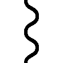」
驚くアシュリーを見て、イングリッドは嬉しげに目を細める。
「あたしは影を司る邪霊スモレンコス。他人の影に潜むのなんて得意中の得意」
「それって......」
「ずっとアシュリーの影にいたよ」
「なっ......なっ......」
あまりの驚きにアシュリーは声が出なかった。
（ずっと側にいた？ それって......それってつまり？）
「アシュリーをずっと見てた」
「ならっ！ どうしてすぐにでてこないの!?」
「だって、あたしを探すアシュリーがかわいかったから」
もう言葉も出てこない。
アシュリーはただあうあうと言うだけになってしまったし、ミアルも呆れた顔のまま固まってしまっている。
（こ、この人は......）
なにをどう言っていいのかもわからないアシュリーだったのだが、ふと、流れ込んできた刺激で口が動いた。
「この臭い......イングリッド、お風呂入った？」
「え？ ああ、そういえば体洗ったのっていつだろう？」
その言葉がアシュリーに逆転のスイッチを押したのだった。
「イングリッド」
「え？ な、なに......？」
「お風呂入りましょう」
「え？ やだ」
反射的にそう言ったイングリッドだったのだが、すぐにアシュリーを見て状況の変化に気付いた。
アシュリーの目がかつてなく本気だったから。
「......イングリッド」
「な、なんかアシュリー、怖い」
そんなアシュリーにイングリッドが気圧される。
「お風呂、入りましょうね」
「や、やだ......」
アシュリーの声が低くなるごとに、イングリッドが涙目になる。
「汚いのは、だめですよ？」
「ううっ、でも......お風呂屋は人がたくさんいるから、やだ」
「ええ？」
思わぬ言葉にミアルが驚いた。
「おねえちゃんて、人が多いのが嫌い？」
「だって、あんなたくさんの人の中で裸になるとか、そんな無防備なの、嫌い」
見るからに勇ましい感じのするイングリッドからそんな言葉が出るなんて......。
「意外」
ミアルはそう呟くが、アシュリーには通用しなかった。
相変わらず「お風呂」と威圧しまくる。
「それに、あたしの仕事柄、石鹼くさいのはだめなんだよね。だから......」
「............」
レイニアを見習ったにっこり攻撃の前にイングリッドの言い訳は途中で雲散霧消した。
「お風呂」
「うう......」
「入りましょうね」
「うう......」
笑顔のまま詰め寄られ、イングリッドはさらに泣きそうになる。
「あ、そうだ」
そこでミアルが思いついた。
「それなら、うちに来る？」
†
ミアルの屋敷は獣人街の中心から少し外れた場所にある。
中心には役所があるので、それに近い場所を選んだのだろう。屋敷は広いのだけれど、広すぎもしない。嫌味になるほど広くもなく、かといって侮られるような狭さでもないということなのだろう。
外観にはネイハブのバランス感覚が窺える気がする。
それは屋敷の中でも同様だった。入り口や応接間らしき場所は飾られているという雰囲気はあるけれど、そこから一歩でも奥に入るとたたまれていない洗濯物の籠なんかが見えて、一気に生活感が垣間見えた。
アシュリーたちはお風呂場に案内された。
「うちもちゃんとしたお風呂はパパの許可がないと使っちゃだめだけど、これならすぐだから」
そう言ってミアルが出してきたのは大きなたらいだ。
アシュリーも手伝い、それに湯を張れば簡単なお風呂のできあがりだ。
「さあ、これで文句はないでしょう！」
「もちろん！」
たらい一杯の湯を前に胸を張るアシュリーに、イングリッドが涎を垂らさんばかりの顔で頷く。
さすがにアシュリーもイングリッドのこの反応を見て、「あれ、なにか失敗したかな？」と思わないでもなかったが、ここまで来ては後に退けない。
なにより友人が臭いままなのは放っておけない。
「さあ、アシュリー。一緒に入ろう！」
「え？ それは無理よ」
「なんで!?」
「お湯が足りないから」
臭いと思ってじっくり観察したからわかるが、イングリッドをきれいに洗うのにはこのお湯でもぎりぎりだとアシュリーのメイドスキルが告げているのだ。
幸いにも途中で石鹼を買えたから、なんとかなるとは思うのだが。
「なら、もっと沸かしてもらおう」
「他人様の家の薪を無駄に使わせてもらうわけにはいかないわよ」
「お、お金ならあるよ！」
「そういう問題じゃありません」
「うう」
ピシャリと言いきられ、イングリッドが涙ぐむ。
「もう......」
その顔を見ていると、アシュリーはしかたないなとため息を吐く。
このまま一人で洗わせてお湯を無駄にさせるわけにもいかないし、なによりテキトーに洗われて臭いままだったりしても嫌だ。
だとしたら、アシュリーが洗うしかない。
「やった！」
そうとわかったとたん、イングリッドが喜び勇んで服を脱いだ。
というか、一瞬で脱げた。
イングリッドを覆っていた革製のような衣装は瞬く間に溶け、気体か液体かもわからないようなものになり、彼女の影に呑み込まれていった。
「ど、どういうこと？」
だけどイングリッドはアシュリーの驚きなど気にしていない。
「さあさあ！ アシュリーも脱ごう。手伝おうか？」
「なんでわたしまで脱がないといけないの？」
「だってお風呂だから」
「わたしはあなたを洗うだけだから！」
「でも、濡れるよ。むしろあたしが濡らす」
「濡らすな！」
「ねぇ、お湯冷めるよ？」
風呂場の外からミアルの冷めた言葉が聞こえてくる。
「ぐぐぐ......」
確かにその通りだ。
「ふふふ......」
イングリッドはニヤリと笑い、アシュリーはながーいため息を吐くのだった。
結局、二人とも裸になった。
女の子同士だから別にいいんだけどと思ってはいるものの、イングリッドだと何か身の危険のようなものも感じてしまう。
「さあ、どこでも触って！」
「いや、洗うだけだからね！」
隠すつもりなどまるでないという態度のイングリッドに対し、アシュリーはとりあえず背中から洗っていく。
背中から首、腕、そして腋と洗っていく。
「くすぐ......ふふ......」
わずかに身悶えるイングリッドの背中は鍛えられているからなのか体の線がはっきりとしていて、なんだかやらしい。
「後でアシュリーも洗ってあげるからね」
「だからいいって」
「洗ってくれたところを、全部、同じように。ふふふ......」
妖しげな呟きに、アシュリーはため息を吐く。
（イングリッドってこういう性格だったかしら？）
帝国にいた頃はもっと凜々しかったと思うのだけれど。
「もしかして、クロウ様の魔錫があるなしも関係しているのかしら？」
「なにが？」
アシュリーの呟きにイングリッドが問いかけてくる。
「だって、イングリッドがなんか変だもの」
他の人だと言い淀みそうなこともイングリッド相手だと簡単に言えてしまう。
というか、ここまで来たら遠慮なんてしても意味はない。
「うん、まさかあたしも、こんなになるとは思わなかった」
「やっぱり」
「でも、あたしを変えたのはアシュリー、あ・な・た」
照れて身悶えるイングリッドに、アシュリーはげんなりとした。
「そういうことじゃなくて......」
「わかってるって」
アシュリーは笑って続けて言った。
「性格の変化にクロウの魔錫は関係ないと思うけど」
「そうなの？」
「あたしら四魔将とか外でリーダーを任せられそうなのには、なるべく自由意思を尊重してたっぽいし」
そういえば、ロディマス将軍という方がいたのをアシュリーは思い出した。
将軍を支配していたのは皇帝だろうけれど、彼は交渉で配下になり、魔錫を受け入れたという話を聞いている。
「力ずくで無理矢理ってのは意志疎通が難しい連中ばっかりのはずだよ。まぁ、意思疎通できても無理矢理ってのもいないわけではなかったろうけど」
あ、いまだ。
イングリッドの話を聞いていて、アシュリーはいまだと思った。
クロウとの約束の話をするならいましかない。
「ねぇ、イングリッド......」
「クロウとの約束の話なら、教えないよ」
「え!?」
いきなり言い当てられ、アシュリーは二の句が継げない。
「それは、あたしとクロウの約束だから」
手の止まったアシュリーを振り返って、イングリッドがニヤリと笑う。
その清々しさにアシュリーは目を奪われた。
だけどそれは間違いだ。
「はっ！」
気が付くと、アシュリーが手にしていたはずのへちまたわしがイングリッドの手に移っていた。
「さあ、今度はアシュリーを洗おうね。体の隅から隅まで」
「いや、だからわたしは良いって、それにお湯が足りない......」
あれ？ そういえばイングリッドの体、思っていたより泡立ちが良い。汚れていたならもう少し泡が立ちにくいはずなのに。
「大丈夫、あんな汚れ、簡単に落とせちゃうから」
「あっ！」
それで、アシュリーは気付いてしまった。
「もしかして、あの臭かったのって......」
それに、お風呂屋を異常に嫌がったのは、もしかして......。
「ふふふ、あたしにかかれば体臭だって自由自在」
「だ、騙された」
「そういうわけで、あたしの体に付いてる泡もきれいな泡だから、全身を使ってきれいにしてあげる！」
「ぎゃああああ!!」
泡まみれのイングリッドに襲われ、アシュリーは悲鳴を上げるしかなかったのだった。
†
頭にコブのできたクロウがミアルの屋敷にやって来たのは陽が沈みかけの頃だった。
「アシュリーがここにいるって、聞いたんだけど」
「う、うん」
応対に出たミアルの顔がなぜか赤い。
「どした？」
「なんでもない！」
大声で否定されてもあやしいばかりだが、深く追及するのも面倒くさい。
「それより、そのコブどうしたの？」
「ジェダにぶん殴られた」
そんなやりとりをしていると、屋敷からアシュリーとなぜかイングリッドまで出てきた。
アシュリーは涙目。
そしてなぜか、イングリッドはすっきりした顔をしている。
「うわぁぁん、クロウ様ぁ」
涙目のアシュリーがクロウに抱きついた。
「おう？ どした？」
「うう......クロウ様。イングリッドに......イングリッドに、穢されましたぁぁ！」
「なっ！ あたしはアシュリーをきれいにしただけだ！」
「なに言ってんだお前ら？」
湯上がりみたいにほこほこの二人を見て、クロウは首を傾げるのだった。
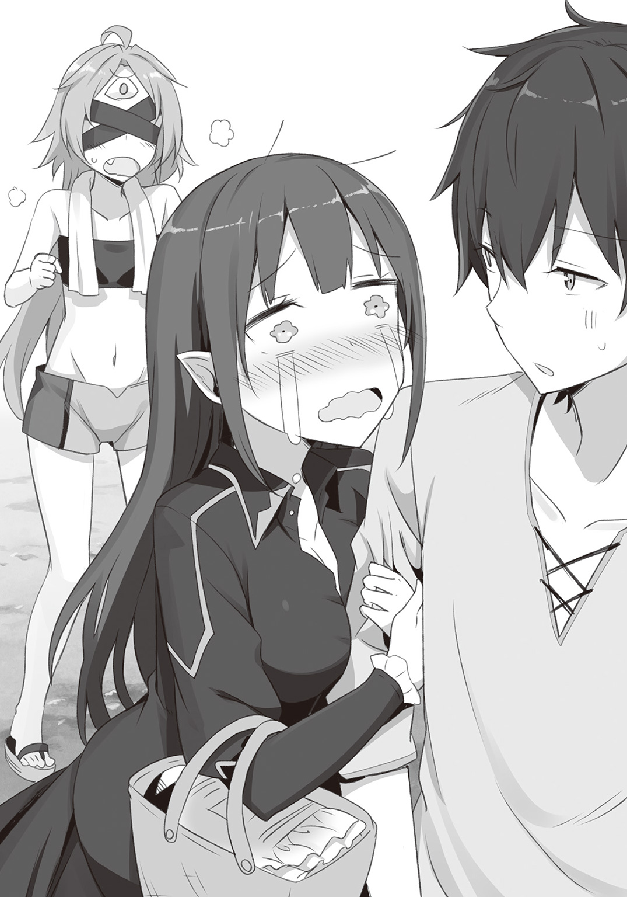
こぼれ話――湯煙の向こう側――
ふああん......。
はああん......。
そんな声が聞こえてきて、ミアルは身動きが取れなくなった。
（な、なにしてるんだおねえちゃんたちは!?）
なんだか妙にドキドキしてくる声が聞こえてくる。
気になる。
すごい気になる。
だけど、声をかけてはいけない気がする。だからといって足音が聞こえても台無しになるような気がして、身動きが取れない。
（ど、どうしたらいいの？）
いや、それよりも......。
（こんな声、他の人に聞かれたら......）
パパはまだ役所から戻ってきていない。
ママもいない。どうせ市場でお喋りでもしているのだろう。この時間まで帰ってこないということはどこかで出来合いを買って帰ってくるかもしれない。それならまだ長話は続くはずだ。
（とりあえずは問題なし？）
......と、いうわけにはいかないのだ。
「た、だいまぁ。はぁ、お腹空いたぁ」
もう一人、いた。
そうだ。いま我が家には居候が一人いたのだった。
「あれ、ミアルはそこでなにをしてって......」
「ああ！ パスティアおねえちゃん、こっち来たらだめ！」
「え？ ええ!?」
ああもう！ この声で全部だめになった。もうもうもうもう！
「ママ、きっといつものとこで長話してるはずだから、呼んできて、ついでになにか買ってきてもらって！ あたしもお腹が空いたよ」
「え？ あ、う、うむ。わかった」
「ナディチさんとこの揚げ物がいいな」
「それはいいな！」
食欲優先のパスティアは揚げ物の一言で即座に気分が切り替わり、軽やかに家を出て行った。
「......ふう」
パスティアがいなくなり、ミアルは一息吐くとこちらも気分を変える。
「さて、まだチャンスはあるか......な？」
振り返ったミアルは、そこで硬直するのだった。
「うう......」
なぜなら、アシュリーが脱衣所から顔を覗かせ恨めしげにこちらを見つめていたからだ。
「ご、ごめんなさい」
とりあえず謝るミアルであった。
クロウが来たのはこのすぐ後だ。
森の獣は魔物より厄介です。 03
いつも通りのだらだらした日のことだった。
犬鳴亭は相変わらず忙しいし、ジェダとルーミィは嫌味を言うしレイニアとアシュリーは楽しそうに働いている。
みながみな、やりたいことをやっている。
それはとても良いことだと、クロウは休憩室でのどかな時間を過ごしていた。
それなのに、奴は来た。
「喜べクロウ。仕事だぞ！」
「なにを喜べというんだ？」
パスティアの第一声に、クロウは純粋な疑問をぶつけてみた。
「え？」
クロウの疑問にパスティアはきょとんと首を傾げる。
「仕事だぞ？」
「仕事か」
「嬉しいだろ？」
「いいや」
「なんでだ！」
一時期は王都からの仕送りを止められて困窮していたパスティアだが、部屋を貸しているネイハブも間近でその様子を見ているのが辛くなったのだろう。門番の仕事を斡旋した。
王国にいれば剣聖と褒めそやされる人物なのだから、獣人街で門番の仕事なんて......ときっとプライドを傷つけられて怒って帰るに違いない。
......あるいはネイハブもそんな展開を期待していたのかもしれない。王国と獣人街の関係は決して良好とは言えないからだ。
しかし残念ながら、パスティアは嬉々としてその仕事を受け入れ、生真面目に門の前に立っているという。
そんな彼女だ。きっと仕事がとても好きなのだろう。
クロウにはない考え方だ。
だから、持ちかけられた仕事を嫌がるクロウがいまだに信じられないのかもしれない。
迷惑な話である。
「仕事だとありがたがるのは前時代的。黴の生えた古くさい考え方だよ。ちみぃ」
「......ちみってなによ」
少し離れたところでルーミィが言うが、クロウとパスティアには届かない。
それどころか......。
「い、一体どういうことなんだ!?」
パスティアはむしろ慌てる始末だ。
「いいか。衣食足りて礼節を知るっていう言葉がある。人間っていうのはある程度は満ち足りてないと善いことをする気分にはなれないってことだな」
「あ、なんか聞いたことがある」
「そうか。パスティアはえらいな！」
「えへへぇ」
簡単な褒め言葉でパスティアはすぐに照れた顔をする。
ルーミィだけでなく、会話が聞こえてきた普通のお客まで「ちょろいな」と思ってしまうぐらいの照れっぷりだった。
だが、クロウは油断しない。
「それで続きだけどな、衣食を満たすためには働かないといけないだろ？」
「その通りだな」
「だけど仕事ってのはどこにでも誰にでもあるわけじゃないんだ」
クロウの説明をパスティアはおとなしく聞いている。
さあ、どうする？ 煙に巻くか、納得させるか。
「パスティアだって町長に門番の仕事もらうまで、仕事見つけられなかっただろ？」
「う、うん」
「つまり、衣食を満たすために必要なお金を手に入れるための手段である仕事ってのは、常に欲しい人のところにあるわけじゃないってことだ」
あっという間にパスティアが目をぱちくりさせた。
（あ、いかん。難しく言いすぎた）
とは思うものの、いきなり簡単には砕けない。
「社会そのものが幸せになるためには、礼節を知る人たちがもっと増えることが一番だ。つまりはお金を得る手段である仕事が充実した社会ってことだよな？」
「そ、そうだな」
なんとか、パスティアにわかるようにしなければ。
「だけど、仕事ってのはどこにでもあるわけじゃない。それなら？」
「そ、それなら？」
「それなら、仕事はちゃんと欲しい人のところに行くべきだと思わないか？ その方が仕事だって幸せだろ？」
「そうだな！」
わかってくれた！
この瞬間、クロウは説得が成功したと確信した。
「そういうわけで、その仕事はきっとおれより相応しい奴がいると思うからそいつに回して......」
「だけどこの仕事はお前とやった方がいいと思うんだ！」
「......お前、人の話を聞いてたか？」
「うん！」
「なら......」
「でも！ この仕事はお前を求めてる！」
「............」
「そうだ！ ウルミヒアがこんなことを言ってた」
「......どんな言葉だよ？」
「適材適所！」
「............」
「さあ行こう！」
言いくるめようとしたのに逆に言い負かされようとしている。いや、言い負かされたのだ。ルーミィはざまぁという顔をしているし、レイニアとアシュリーもクスクス笑っている。
ジェダがちらりとこちらを見た。包丁の刃みたいな眼光を流し目で送ってくる。
『いいから働け』
言葉もなく脅してくる。
「ああもう！」
クロウは頭をガリガリと搔いて吠える。
「どうして誰もおれを怠けさせてくれないんだ！」
「十分に怠けてるだろ!!」
ジェダの包丁が飛んできて、いつものようにクロウは犬鳴亭から蹴り出されたのだった。
そんないつもの流れをパスティアは動じることなく眺めているのだから、つくづく彼女は大物だ。
「そういうわけで、行くぞクロウ！」
「どこにだよ？」
元気いっぱいのパスティアに、クロウは渋々と尋ねる。
「森だ！」
「............」
元気しかない宣言に、クロウは黙って犬鳴亭に戻る。
ジェダの吠え声とともに再び出てきたクロウはレイニアをつれていた。
「......あのさあ、おれが森の案内ができないのって、もうわかってたんじゃないのか？」
「それはそれ！ これはこれだ！」
「どっちも同じだっつうの。というわけで、案内人だ」
「はい、案内人です」
レイニアが手を上げる。
「じゃあ、そういうことで」と言いたいが、ここで犬鳴亭に戻ったところでジェダに怒られるだけだし、なによりレイニアがすでにクロウの手を握って、いかせまいとしている。
「レイニア」
「あなたをだらだらさせてあげられるのは、わたしだけなんですよね？」
クロウを制してレイニアが言ったのはロディマス将軍の前で言った言葉だ。
「では、そんなわたしをクロウさんは守ってくれますよね？」
「はぁ......」
ようやく、クロウは諦めたのだった。
だが、面倒事はこれだけではなかった。
「やるのは猿退治だ」
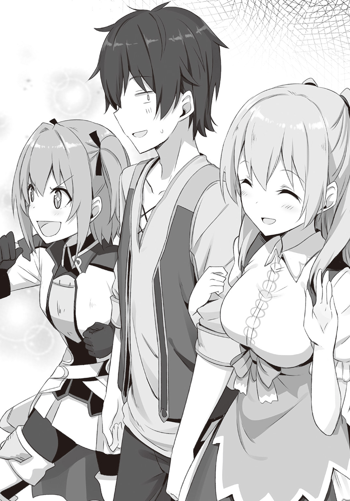
「猿退治だぁ？」
「うむ。森の奥にいるはずの猿の群れが耕地に移動してきたらしくてな。農作物を荒らされて困っているそうだ」
「剣聖が猿退治かよ」
「民の役に立つなら、なんだって退治するぞ！」
嫌味が通じず、クロウはため息を吐く。
クロウたちは獣人街の通りを抜け、幾つかある森へと向かう道の一つに入った。正門がある辺りを街の顔だとすれば、こちらは背中か尻という具合だろう。クロウはこちら側にあまり来たことがない。獣人街の他の場所とは違い、森と街の境界線が曖昧になっているのは、こちら側から人間に襲われることはないという確信があるのだろう。あちこちで鶏や牛などの家畜の鳴き声が聞こえてくるし、糞なのか肥料なのかという臭いがたまに風と一緒に流れてくる。獣人たちの中でも農業を営む者たちが集まっている区画ということになるのか。
森と街の境界は曖昧だが、それでもここから先は森だな、というぐらいには木の密度が変わってくる。日陰の濃さも違ってくる。
その、濃い日陰の中にそれは立っていた。
「......なにしてんだあいつ？」
クロウの言葉でレイニアも気付いた。
パスティアが気付いたのはいつなのか。クロウが呟いても彼女の歩みは止まらなかった。
立っているのは人影だ。
直立する人影......そう見えるのは、全身が黒に包まれているからだ。
「イングリッドさん」
レイニアが小さく呟いた。
あの姿でよくすぐに彼女だと気付いたものだ。レイニアの観察力にクロウは感心した。
イングリッドは顔の上半分を隠す兜をつけていた。竜の翼を模した飾りが付けられている。露出部分の多いいつもの恰好とは違い、鎧以外の部分は隙間なく覆われている。
その全てが黒。
関節部分を守る鎖帷子までもが黒という徹底ぶりだ。
「クロウさん」
パスティアの後ろで、レイニアがひそひそ声で話しかけてくる。
「四魔将用の恰好だな」
クロウも声を潜めて答える。
黒騎士の代わりに帝都の外で活動するのが四魔将なのだが、黒い鎧姿という以外では似ているところはあまりない。
鎧の胸甲は女性らしい形になっているし、全体的に細身の作りになっている。
「相変わらず、胸を盛りやがる」
そう言ってクロウがニヤリと笑う。
「クロウさん、イングリッドさんはなんのつもりで？」
「さあな」
クロウにも彼女の考えはわからない。
それよりも、あの姿を見てパスティアがどうするか、だろう。
「............」
日陰の中に立つ鎧姿のイングリッドに、さすがのパスティアも足を止めている。
「クロウさん、パスティアさんとイングリッドさんて戦ったことは？（ひそひそ）」
「たくさんあるな（ひそひそ）」
「なら、もしかして......（ひそひそ）」
「まさかあいつ、戦ったことのある奴のことまで忘れてるわけはないよな（ひそひそ）」
そんな緊張感に気付いたのか、パスティアがいきなり振り返って尋ねてきた。
「なぁ、クロウ」
「お、おう」
「あれは、クロウの友達か？」
「......え？」
さすがのクロウもどう答えるべきなのか悩んだ。
（どう答えるべきか？）
パスティアの目をじっと見る。険しさはない。戦いを前にした緊張感や興奮みたいなものもなさそうだ。
（どういうことだ？ まさか、イングリッドのことを覚えてないってのか？）
そう思っていたら......。
「あれは帝国の四魔将だ。けっこう強いんだぞ」
覚えてる！
思わず口にしかけ、クロウは自分の口を叩いて黙らせた。
「なにやってるんだ？」
「......なんでもない」
顔の痛みに堪えながら、クロウは問いかけた。
「あいつは......パスティアの敵......なんだよな？」
慎重に言葉を選んだつもりだが、これが正解なのかどうかわからない。イングリッドはなんのつもりで鎧姿であそこで待ち構えているのか？
そしてパスティアは彼女を見てなにを感じているのか？
息を呑んでパスティアの次の言葉を待つ。
「いや、違うぞ」
真顔で言われた。
「え？」
「だって、帝国はもう滅んでいるからな」
「あ、おう......」
「残党として活動しているというならともかく、四魔将についてはそういう噂を聞いていない。捕縛命令も手配書も出ていないからな」
「............」
「なんだ？」
「いや、お前ってまじめなことも言えるんだな」
「......バカにしてるのか？」
「いや、見直したんだ。さすが剣聖パスティア。公正の人！」
「そ、そうか。えへへ......」
一瞬で機嫌が直るのだから、やはりチョロい。
「それなら黒騎士のことも忘れてやれよ」
「それとこれとは話は別！」
これだけは断じて譲らないとばかりにパスティアは必死な顔で首を振る。
クロウももうめんどうなので、深くは追及しない。
「......となると後は」
イングリッドだ。
「おい、そこの！」
クロウが考えるよりも先にパスティアが声をかけた。
「これから農家に害を為す猿を退治に行くところだ。お前も一緒に来ないか？」
「............」
イングリッドはすぐには答えなかった。
だが、唇がぽかんと開いたのをクロウは見逃さない。
「......いいだろう」
押し殺した低い声でイングリッドは答えたのだった。
こうして、剣聖パスティアの率いる猿退治一行にイングリッドも加わったのだが......。
「お前なにがしたいんだよ（ひそひそ）」
「いや、戦いになったら面白いなと思って（ひそひそ）」
クロウからの至極当然な質問にイングリッドは物騒な答えを返す。
案内役のレイニアを先頭にクロウたちは大森林を進む。レイニアのすぐ後にパスティアがおり、それから少し離れてクロウとイングリッドは並んでいた。
十分に距離を取ったとはいえ、パスティアには気を遣って声量は落として話を続ける。
「なにが面白いんだよ。おれの苦労を台無しにするな」
「クロウが苦労。ぶふっ！」
「てめぇ......」
「それはともかく。帝国の重鎮と王国の英雄が一緒にやるのが猿退治とか」
「平和だってことだろ。お前だって猿退治のお供じゃねえか」
「む......」
「なにその『完全武装で待ってました』感？ ぷぷっ」
「お前っ！」
「......ここでやりあうとアシュリーに迷惑がかかるぞ？」
「相変わらず、ずるい奴だ」
「無駄なことしなくて済むなら、いくらだってずるくなってやるよ」
その言葉になにを感じたのか、イングリッドの声がさらに低くなった。
「約束も、わざと忘れたのか？」
「......忘れたわけではないけどな」
怒りがこもっている声に、クロウは頭を搔いた。
「なんていうか、『約束を忘れていないことを思い出した』って感じか」
「なんだそれ？」
「説明が難しい」
兜越しに追及の視線が刺さるが、クロウはそっぽを向く。
だけどそれで諦めるようなら、イングリッドはここには現れなかっただろう。
「お前も皇帝に操られていたっていうのは、本当か？」
「どこで聞いたんだよ、それ？」
「どこでもいい。どうなんだ？」
「本当だよ」
「それなら、あたしや他の連中とした約束のことは？」
「だから、覚えてるって」
「覚えてるけど、実感がないってことか」
イングリッドの指摘は鋭い。クロウとしてはむっつりと黙るしかない。
素直にそうだと認めるわけにはいかない。
なにしろ相手は、イングリッドなのだ。
「ふん、なるほどな」
そう言ったイングリッドをちらりと見る。兜の下から覗くのは鼻から下だけだ。
だがそれだけでも、硬い表情を作っているのがわかってしまう。
「それでアシュリーとの約束も忘れてたのか」
「だから、忘れてないっての」
「守れないなら忘れているのと同じだ」
あきらかに睨まれている。
その視線には怒りと殺意が滲んでいる。
「あたしとの約束だってそうやってうやむやにするつもりなんだな？」
「守って欲しいのか？」
「守って欲しくないとでも思っていたのか？」
濃縮した空気の中で兜の向こうからの視線がクロウの奥深くにまで突き刺さってくる。
「あたしが、口だけの女だとでも思っていたのか？」
その怒りの理由をクロウはもちろん理解している。
約束がなんなのか、クロウはもちろん覚えている。
なぜ、その約束を守りたくないのか、それももちろんわかっている。
そう。
クロウは約束を守りたくないのだ。
その先になにが待っているのか、わかっているからだ。
だけど......。
（いい加減、腹が立ってきたな）
イングリッドのしつこさは、クロウのそういう考えをことごとく踏みにじっていく。
「それならいますぐここでやるか？」
なんで我慢しなきゃならないんだ。望み通りにしてやれば良いじゃないか。心のどこかで、投げやりな自分が語りかけてくるのだ。
イングリッドが微笑む。クロウが誘いに乗ったことを喜んでいるのだ。
クロウもこれがよくない流れだということはわかっているのだが、自分では止められない。
だが、止められる。
「おい、お前ら、もうすぐ着くぞ」
「あいよ」
ここにはパスティアもレイニアもいるからだ。
パスティアの呑気な声でクロウの殺気は霧散した。イングリッドの挑発よりもパスティアに自分の正体を秘密にしなければという思いの方が強い。
剣呑な空気をいつものだるい顔で呑みこむ。
クロウは手を振って答える。気が付くとパスティアたちからけっこう離れてしまっていた。
「......ここでは、お前は本気になれないのか？」
「へっ」
イングリッドの質問にクロウは軽く笑い、小走りでパスティアたちのところに向かう。
そのとき、背後で鋭い音が走った。
枝が踏みつぶされた音だということは振り返るまでもなくわかった。
誰が踏んだ音なのかということも含めて。
森の中にも畑は疎らに存在する。
それらを横目に進んだ先に、枝葉が絡み合うことでできあがる空中の足場がある。緑卓とも呼ばれるこれらの足場は森で農家をしたり狩りや山菜採りなどをしている人たちの休憩所や倉庫などに利用されたりするほど、頑丈だ。
そして、クロウたちの前にはとても大きな緑卓があった。
十数本の木が枝葉を絡み合わせて作られた緑の台から無数の視線が降り注がれている。
猿たちだ。
甲高い声で威嚇されていないのは、まだどういう態度を取ればいいか決めかねているのだろう。
毛は茶色く、赤い顔に赤い尻。人間と比べると身長に比して腕が長い。一匹の大きさはクロウの腰ほどもないだろう。
地方毎に特色はあるが、猿といえばだいたいこんなものだろう。
「普通に猿だな」
見上げながら、改めてクロウは呟いた。
「たかが猿相手に剣聖と黒騎士と四魔将が動員されるとか......」
イングリッドはまだそんなことを言っている。
「むしろ面白いだろ」
そう答えると、クロウはパスティアに尋ねた。
「で、どうするんだ？」
「うむ......説得する！」
腕を組んで猿たちと睨み合ったまま、パスティアは断言した。
まさかの言葉にクロウも目を丸くする。
「説得？」
「あの、相手はお猿さん......動物ですよ？」
「動物だろうと問題ない！」
レイニアに言われてもパスティアは変わらない。
「言葉が通じなくとも魂は通じる！ きっと、わたしの願いを聞き入れてくれるはずだ！」
「願いってなんだよ？」
「黙って去れ！ だ!!」
「なんちゅうわがままな願いだ」
「どうしてだ!?」
クロウは呆れたのだが、パスティアにはわからないようだ。
「あいつらが元々ここにいた人たちの縄張りを荒らしているんだぞ？ 悪いのは猿たちじゃないか」
「いや、そうなんだけどよ」
「でも、お猿さんたちがここに来たのにも理由があるのでは？」
レイニアも口を挟み、パスティアはようやくそのことに気付いたようだ。
「むむ......それは............」
そのときだ。
バチャン！
いい音とともにパスティアの頭でなにかが弾けた。
赤より薄く、オレンジとはまた違う色味......カキノミと呼ばれる果実だ。
どうやら緑卓を形成する木の中に、カキノミの木があったのだろう。
「......ぐっ」
よく熟れたカキノミは柔らかい。痛くはなかっただろうが、弾けて中味が溢れ出してしまった。どろりと溶けた果肉が彼女の髪と顔にべったりと張り付いている。
キッキ、キッキと猿が手を叩いて鳴きわめく。
猿の顔は人間に近い。歯を剝き出して鳴くその顔は......どう見ても笑っていた。
パスティアは馬鹿にされるのが一番嫌いなのだ。
「うふふふふ......良い覚悟だ猿ども」
次の瞬間、パスティアの手が聖剣エーヴアイゼの柄を握っていた。
「いますぐ全滅させてやるぞ！」
「ああ、待った待った！」
慌ててクロウが彼女を押さえる。
「いくらなんでもお前の全力はやばい。自然破壊反対！」
「ぐぬぬぬ......はーなーせー！」
「まぁ、落ち着けって、ばふっ！」
パスティアを押さえていると、クロウの頭に衝撃が走る。
「これは......」
むわっと広がる果実の匂い。べとりと張り付く粘着質の感触......カキノミだ。
猿たちの笑い声がより一層騒がしくなる。
「ク、クロウさん？」
思わぬ事態に、レイニアも息を呑む。
「ふっ......良い度胸だ！」
そう言った瞬間、クロウの手には魔錫を練り固めた黒い剣が現れる。
「根絶してやるぞ猿どもがっ！」
パスティアが見ていることも忘れてクロウは叫ぶ。だが、パスティアの方も頭に血が上っていてクロウのことを見ていない。
手が離されたことを幸いに前に飛び出そうとする。
「うわぁぁ！ 待ってください！」
レイニアがとっさに前に飛び出さなければ、二人はそのまま緑卓を破壊する勢いで攻め込んでいただろう。
だが、レイニアはただの非力な女の子だ。
「イングリッドさん、お願いです！」
がるる......と唸る二人を前に、レイニアはたすけを求める。
「なんで？」
だが、イングリッドはその場を動かず、わずかに首を傾げただけだった。
「猿退治に来たんでしょ？ いいじゃん、このまま退治すれば」
「でも、このままでは森まで荒らしてしまいますし。お猿さんたちがどうしてここに来たのかも調べないと......」
「そんなの、頼まれてないでしょ？」
「でも......」
イングリッドは動いてくれそうにない。
彼女が言っていることも間違ってはいない。
だけど......。
「大森林の恵みを受ける者として、あのお猿さんたちだって同胞です。理由もはっきりしないままお猿さんたちを退治するなんてできません！」
「......はん」
レイニアが森に住む者の生き方を説く。
それでもやはり、イングリッドは鼻を鳴らすだけだった。
もうだめ。
怒りに我を忘れている二人にレイニアが諦めかけたそのとき......。
レイニアとクロウたちの間でいきなり土が爆ぜた。
「そこに登場！ シャリリンちゃん！」
腐葉土を撒き散らしながらシャリリンが地面から生えてきたのだ。
あまりに突然のことにクロウたちも呆然として、怒りを忘れた。
「おうっ！」
そんなシャリリンにもカキノミはぶつけられる。
だけどそんなことは気にすることなく、クロウとパスティアを見、シャリリンはにへらと笑った。
「おそろいだね！」
全ての毒気を抜き去る無邪気な笑みだった。
†
すぐにキュライアもやってきた。
「やあ、みなさん。ご苦労様」
鹿顔の美人はシャリリンにも通じる無邪気さでクロウたちの前に立ち、カキノミまみれになった三人を見て「あら」と声を漏らした。
「お洒落？」
「残念、違う」
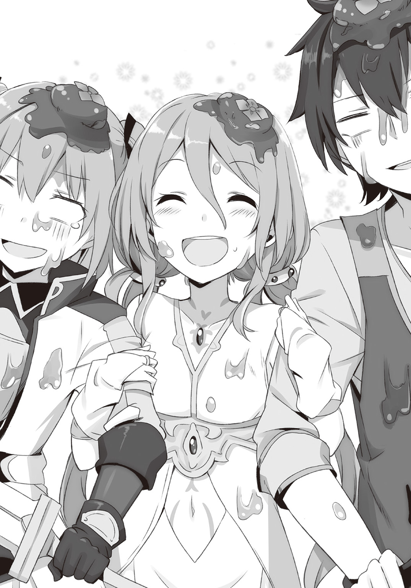
シャリリンの登場で怒りも冷めた。クロウは苦笑するしかない。
「お猿さんの最新モードだよ」
「きっと、違うと思う」
怒りは冷めたようだが、パスティアはすっかり落ち込んでいる。
クロウたちの様子を見て、キュライアは「あらら」と漏らし、申し出てきた。
「わたしがあの子たちと話してみるよ」
「......それができるなら、最初からあんたがやればよかったんじゃないか？」
ぐったりとなってクロウは言った。
「猿と話し合いできるとか......腕力いらないじゃないかよ」
言いながらパスティアを指差していたのだが、当の本人は気付かなかったようだ。
「荒事になったらわたしは役立たずだよ？」
クロウにそう返すとキュライアは一人で猿たちに近づいていった。
猿たちは声もなく警戒する素振りを見せるが、なにもしてこない。
「おれたちと扱い違うだろ？ あれ、絶対」
クロウが不満を零すが、それも仕方がないのだろう。
キュライアはこの大森林を統べる神、圓樹王に仕える巫女なのだ。
森に生きる動植物で彼女に逆らう者がいるのだろうか？
「しかし、動物とも話せるとか、すごいね」
クロウが感心していると、キュライアが言葉を放った。
「ンキッキー！」
「............鹿の獣人が猿の鳴き真似をするとか、ないわぁ」
とは思ったが、彼女のその能力がなくては話が進まない。話し合いが終わるまでクロウたちは待つしかなく、その間にレイニアに手伝ってもらって頭に付いたカキノミを落とすことに専念することにした。
クロウとパスティアがカキノミを拭き取るのに四苦八苦している中、シャリリンに付いたそれは瞬く間になくなった。
肌から吸い込んだのだ。
「復活シャリリン！」
見せる相手もいないままポーズを決めていると、シャリリンの前に黒い鎧姿が立ちはだかった。
「おや？」
首を傾げ、シャリリンは相手を見る。
「誰？」
「生きていたのか、シャリリン」
「あー」
その声ですぐにわかったようだ。
「久しぶり、イングリン」
言って、「あれ、違ったっけ？」と首を傾げる。
「モングリン？」
「イングリッドだ」
「イングリッド」
名前を間違えられてもイングリッドは怒ることなく、兜から覗く口元を緩めた。シャリリンに名前を間違えられるのはいつものことなのだろう。
「死んでなかったんだな」
「もちろん！」
シャリリンは胸を叩いた。
「リュナフ様が教えてくれたんだけど、菌糸って地面の下にすごいたくさんいるんだって。それがある限り、シャリリンって死なないらしいよ」
「死ねない......のか」
空を仰いで呟くイングリッドに、シャリリンは首を傾げる。
シャリリンとしては「すごい」と感心して欲しかったのだが、イングリッドはそうは受け取ってくれなかったようだ。
シャリリンの目はイングリッドの鎧に向けられていた。
「でもなんでそんなの着てるの？」
「あいつに見られたくないんだ」
パスティアを示されて、シャリリンはきょとんとした。
「パスティアは良い子だよ」
「知り合いかよ」
「友達」
獣人街の子供たちを通してパスティアとは仲良くなった。
「相変わらず、シャリリンはすごいなぁ」
帝国の側にいた魔物と王国側の英雄が友達になるなんて、イングリッドには想像もできない。
「この鎧だってシャリリンが言ってくれたから、こうしてみたんだ」
「うん......？」
「もしかして、忘れたのか？」
「ああ、思い出した！ うん、うちの鎧ちゃんも元気だよ。いいよね、狭いとこ」
「ああ！」
イングリッドが嬉しそうに頷く。
「広いところが苦手なあたしに、シャリリンは『鎧の中は狭い』って教えてくれたんだ。あれがなかったら、あたしはもっと大変だったよ」
「この鎧って、イングリッドの黒いのなんでしょ？」
「そう。あたしの一部からできてる」
「なんか、クロウのと同じっぽいよね」
「あいつと一緒にしないで」
そんなことを言うイングリッドにシャリリンは笑い、イングリッドもむっとした顔を長続きさせることができない。
そんな二人の様子がクロウは気になった。
「あいつらってなに話してんだ？」
「女の子同士の会話を気にするなんて、無粋ですよ」
髪を拭いてくれているレイニアに言われ、クロウはへいへいと肩をすくめる。
......と、レイニアがいつのまにか微笑みを消してクロウを見つめていた。
「イングリッドさんとの約束って、言えないようなことなんですか？」
「レイニア。昔の女のことなんて、気にする必要はないんだぜ？」
「まぁ、イングリッドさんが聞いたら怒ってしまいそうなセリフですね」
レイニアの微笑みは戻ってこなかった。
冗句を簡単にいなされ、クロウは髪を搔きながらパスティアを見た。すでにレイニアに拭いてもらってすっきりした彼女はキュライアと猿たちの会話を興味深そうに眺めている。
「まっ、わりと重い約束をね」
「父にさせられた約束なのでしたら。わたしがお話しします」
かつてのクロウは、レイニアの父であり帝国の皇帝スレイド・フォヴス・スローヴェントに洗脳されていた。
物心がつく前からのことなので、洗脳の前後での違いなどクロウでさえもよくわからない。ただ、スレイドやレイニアに対していまは使命感のようなものを抱いてはいない。
だけどレイニアは父親の所行に責任を感じている。
「そんなんで納得はしないだろうさ」
「でも......」
「人にも魔物にも色々あるってことさ。どうあれ、おれが約束したことだし、おれは約束したのを覚えてる。まっ、おいおいなんとかするさ。......面倒くさいが」
「クロウさん......」
レイニアは何かを言いかけたが、結局それは形にならなかった。
どれだけレイニアが責任を感じようと、彼女はやはり当事者ではない。そこに寂しさを感じたのか、戻ってきたレイニアの微笑には堅さがあった。
「話し合い、終わったよ」
キュライアの言葉でクロウたちの会話は終わった。
†
どうも元の縄張りで誰かが悪さしてるみたい。
「その悪さのせいで元の縄張りにいられなくなった猿どもが移動して、こっちが迷惑することになったと」
キュライアが聞き出したことをまとめると、そういうことになる。
どうやらさらに森の奥へと進まなければならないようだ。
「めんどくせぇなぁ、もう」
クロウはため息を吐く。
「どこの誰だか知らないけどよ、悪巧みなんかするんじゃねぇよ」
キュライアとシャリリンはあの場に残り、再び四人になったクロウたちは森を進む。
「しかも猿のせいでばれるとか、間抜けどもめ」
「まったくだ。隠し事なんてできないってことだな！」
パスティアがはっはっはっと笑う。
「そういうことを言いたかったわけじゃないんだが......」
クロウは呟きつつ、パスティアを見た。
「ん？ なんだ？」
「いや......」
「もしかして、わたしに気があるのか？」
「どうしてそうなる」
「ふふふ、わかるぞ。そうやってわたしの美しさに惹かれてきた男は一人や二人ではないからな」
「いや、たぶんそれ全部、気のせいだと思う」
「だがっ！ このパスティア・メイユ・サルザール。軽い付き合いをするつもりはないので、覚悟をするのだな！」
「いや、だからそういうのじゃないって」
「むむ......ではなぜ、そんなに熱い視線を送っていたんだ？」
「いや、聞きたいことがあるようなないような」
「なんだその曖昧な言葉は......はっきりしろ！」
「わかったよ」
クロウはしばらく考えて、尋ねてみた。
「パスティアはなにか隠し事とかあるか？」
「そんなものはない！」
即答されて、クロウは面食らった。
「ホントかよ」
いや、パスティアならそれもありえるかもしれない。
それでも隠し事の一つや二つ、生きていれば自然と生まれてくるものではないのだろうか？
友達のおもちゃを壊したことを黙っているとか、ちょっとした噓を吐いてそのまま本当のことを言えないでいるとか。
なんでもいい、やらなきゃよかったなって思ったことはないのか。
「むむ。そういう言い方をするということは、クロウにはあるんだな」
「ふむ......まぁそれなりに」
「悪い奴だな」
「後悔がない人生の方が難しいんじゃないか？」
「そんなことはない！」
だけどパスティアは言いきるのだ。
「後悔を見つけたら、それをぜんぶ解決させればいいだけだ！」
それを言いきるためにどれだけの気力がいるのだろう？ どれだけの信念が、根気がいるのだろう？
想像が付かない。
ただただ、思うだけだ。
「それは、めんどくさいな」
「めんどうだなんて思うものか。わたしはわたしを、わたしの好きなわたしにすることに妥協がないだけだ」
だけど、パスティアはこんな人間なのだ。
もうこれは、素直に感心するしかない。
「すげぇな」
「ふふん！ それほどでもある！」
それ以外になにができる？ 軽蔑？ 嘲笑？ そんなことをしたところで自分の後ろ暗さが際立つだけだ。
クロウとイングリッドとの約束。
「後悔を見つけたら、それを全部解決させる......か」
自分を偽ったつもりはない。
そのときはそれで良いと思った。
だけど後悔っていうのは、そのとき正解だと思っていたことが、実は正解ではなかったと思い知らされるから後悔ではないのか？
「......さて、どうしたものかね？」
振り返ればそこにいる。
後悔の塊のようなそれを、はたしてどうすればいいのか。
答えが出ないまま、クロウたちは目的地に着いた。
†
途中で大きな河と合流し、その流れに従って進むとそこに辿り着いた。
壮観な場所だった。
見渡す限りの極端な盆地がそこにあった。森がその周囲だけ一段下がっているのだ。自分たちがいきなり高い場所にやって来たかのように錯覚してしまうほどの高低差がある。
河の流れは盆地へと注ぎ込まれる。
大きな滝がそこにあってゴウゴウとうるさい。
滝の流れ着いた先には大きな湖があり、河はそこから無数の支流に分かれ、姿を消す。全てが地下へと流れ込んでいるのだろう。
目当ての場所は河の流れから視線をずらすとすぐに見つかった。
「......滝の裏に洞窟とか。なんていうか、らしいなぁ」
クロウはそう呟いた。
滝の一部が張り出した巨岩に弾かれてアーチを描いている。洞窟は、その巨岩の下にあった。
見張りらしき人の姿も見える。
「見張りがいるな」
「よし、突撃だ！」
即決のパスティアが意気揚々と出発しようとしたので、クロウはすぐにその肩を摑んだ。
「まぁ、待てよ」
「むむ、なんだ」
「敵の正体がわからんってのは不安要素だ。偵察をすべきだと思うね」
「むう......」
見張りの様子から見るに強い奴がいそうには思えない。ここにいる連中なら簡単に倒してしまえるだろう。
だけど、相手がこちらより弱いからといって大人しくやられてくれるとは限らない。
たとえば奴隷商人なら、自分の商品を人質にしたりするかもしれない。
「だが、誰がそんなことをする？」
そんなことを言ってしまうのだから、パスティアは偵察が苦手なのだろう。
「しゃあない。おれが......」
そう言いかけたところで、背後から声をかけられた。
「あたしがやる」
「イングリッド？」
振り返るとイングリッドが兜を脱いでいるところだった。
彼女が鎧を着ているのは自分の姿を隠すためだ。その兜を自分で脱いだばかりか、さらに鎧までも解いた。
さきほどまでイングリッドを守っていた鎧は、実は無数の邪霊によって作り上げられたものだったのだ。
「偵察ならあたしの方が適任だ。だろう？」
「......まぁな」
身軽になったイングリッドにクロウは渋々頷く。
イングリッドはパスティアに目を向けた。
パスティアはイングリッドの一つ目に驚いた顔をしたが、すぐに落ち着いたようだ。
「あたしは邪霊スモレンコスの眷属イングリッド。影から影への移動はお手の物だ」
「邪霊？ そうか。任せた」
パスティアはすんなりと受け入れたようだ。
その素直な様子が彼女の口をさらに開かせた。
「あんた、シャリリンと友達なのか？」
「うん？ そうだぞ！ あいつは面白いやつだ」
「確かに、話が合いそうだ」
シャリリンとパスティアが友達だって？
「友達って......こいつらがどんな会話してるのか、ぜんぜん想像つかねぇ」
クロウが呟くが、誰も聞いてくれなかった。
「しかし、あたしは前に邪霊と戦ったことがあるけど、肉体を持っている邪霊もいるんだな」
「......行ってくる」
パスティアの感想を断ち切るかのように、イングリッドは一転して冷たい顔になると瞬く間に姿を消した。
影に沈んだのだ。
「すごいなぁ」
姿を消したイングリッドに、パスティアはただただ感心の声を漏らす。
パスティアはイングリッドが機嫌を悪くしたことに気付かなかったようだ。
「ああ......パスティア」
「うん、なんだ？」
「邪霊の件、イングリッドにはもう言わないようにしてくれ」
「どうしてだ？」
「気にしてるんだよ。それ以上は個人の事情って奴だ」
「ふむ......わかった。謝った方がいいのか？」
「いや、やめといた方が良いかな」
「そうか」
頷いてから「ふうむ」と唸るパスティアを見て、クロウもまた嘆息する。
「隠し事がないって難しいよな」
「みんながみんな、わたしの境地に達せられないのは悲しいなぁ」
その境地に辿り着けるのはほとんどいないのではないかと思ったが、クロウは言わなかった。
†
待っている間に少しうとうととしてしまったようだ。
その間に、また夢を見た。
いまよりも小さかったクロウと、いまとさほど変わらない姿のイングリッドが向かい合っている。
ああ、この間の続きだなと、夢を見ている方のクロウは思った。
夢というよりは記憶の再生だ。
小さなクロウは提示された条件に驚いている。
「なんで、そんなことを望むんだ？」
だから聞いた。
「......受けてくれるか？」
「納得できたら、受けてやるよ」
このとき、クロウはこう言った。
だが、本当に納得できると思っていたのだろうか？
ただの好奇心ではなかったのか？
そのときの気持ちは自分でもわからない。
「あたしは、自分の目で世界を見たことがない」
「どういうことだ、それ？」
ただ、イングリッドの告白を聞くだけだ。
彼女は自分の顔に手を伸ばす。本来なら目があるだろう部分には布のような黒いものが巻かれているのだが、それに指を這わせた。
まるでその下にあるはずの何かを求めるように。
「あたしの本当の目はここにある。だけどこの目はあたしに光を見せてくれたことはない」
そうして、彼女は物語を語ったのだ。
目の見えない少女の物語を。
「ベッドがあたしの住処だった。親は見えないあたしがうろつくのが怖かったみたいだし、あたしも触れるものがない場所にいるのは怖かった。たぶん家は貴族だったんだろうな。ベッドにいてもあたしが苦労することはなかった。たまにやってきて家の厄介者みたいな感じで聞こえるように言ってくる親戚みたいなのもいたし。自意識過剰が声だけでもわかるような気持ち悪い奴だったな」
目は見えない。だが、家庭環境そのものは不幸ではない。嫌な親戚もいたようだが、両親には愛されていたという実感を持って、温かい闇の中で彼女は時間を過ごしていく。
これまでも、そしてこれからも。
それはずっと続くと思っていたのだろう。
だが、そうはならないだろうことはクロウにだってわかる。
結末は、すでに目の前にいるからだ。
「ある日、突然、あたしに光が与えられた。与えた奴はどこにもいなかった。いつもよりも長く眠った気がして、起きたらもう、あたしはこうなってた。初めての光はただ怖かった。そしてあたしは、ぼろぼろになっている自分の家から出て、そしてさ迷ったんだ」
音と温もりとして存在していたはずの家族はどこへ行ってしまったのか？
どうしてこんな目を与えられてしまったのか。
闇に包まれていた少女は、自分がそれによって守られていたことを知る。
なぜなら、光溢れる世界には、イングリッドを知る人間は誰も側にいないのだから。
闇に帰りたいと少女は思った。
「そこからは転がり落ちるようにこうなってた。世間知らずのあたしは騙されるしかなかった。まぁそれは仕方がないんだ。結局は生きる方法をそこで知ったわけだし」
闇の代わりに少女は影に潜めるようになった。
家族の代わりに、少女は無数の邪霊を手に入れた。
嫌な親戚に感じていた鬱憤を、少女は依頼の中で名前も知らない誰かたちで晴らしていった。
「だけど......」
それで満たされたわけではない。
影の中は温かくはない。
邪霊たちとはわかりあえない。
依頼人の斡旋者であり、少女をこの道に引きずり込んだ女は、少女を裏切ろうとしたので名前も知らない誰かたちと同じ運命を辿らせた。
だけど、こんなことでは満たされない。
だから、思うのだ。
光を得たときに見た、あのぼろぼろの家のことを。
あの家があった場所、そこにあったはずの時間、そこにあったはずの温もり。
そのことばかりを考えるようになった。
だから、イングリッドは探していた。
「......あんたはあたしの最後の依頼人になるんだ」
イングリッドは言う。
「だから、仕事が終わったら............」
その望みを報酬にしてくれる依頼人を、それを可能にできる雇い主をイングリッドはずっと探していたのだ。
「簒奪を企む極悪人なら、それぐらい簡単なことだろう？」
†
イングリッドが戻ってきた。
「どうだった？」
パスティアが食いつくように近づいてきて尋ねる。
その様子は「待て」をされ過ぎた犬のようだ。
「倉庫だ」
「倉庫？」
「警護の連中がいるが、物資は少ないな」
イングリッドの報告に、クロウは「ふむ......」と顎を撫でた。
「......猿の移動からして、最近、あの洞窟を見つけて隠し倉庫にでもするつもりだったってことか。この間の連中かな」
「......どういうことだ？」
よくわかっていない顔のパスティアにクロウが説明した。
「まず間違いなく、闇商人の隠し倉庫だな。しかも出来たて」
そして、つい先日アシュリーが攫われたことも話す。
「攫ったのは、ほら......お前が騙された奴ら」
「あいつらか！」
「たぶん、あいつらが関係してるんだろうな」
猪顔の獣人は街の実権を奪おうとしていたし、いまも諦めていないだろう。自分が知っている範囲で因果関係を結ぼうとすれば、隠し倉庫を作ろうとしているのは奴らだということになってしまう。
（まぁ、間違ってたって別にいいしな）
結論ありきな考え方だなとクロウは内心で苦笑する。
だが、とりあえずパスティアの士気がさらに上がったのだから、それでよしとしよう。
クロウがやるべきことはこの洞窟を占拠している連中を追い出し、猿たちをここに戻すことだ。
犯人が誰だってかまわない。
それならパスティアのやる気を引き出せる名前を引っ張り出した方が良い。
（その方がおれも楽ができるしな）
自分の策略に満足し、クロウはにんまりと笑う。
「よし行くぞ！」
「後ろは任せろ！」
やる気満々でパスティアが突っ込んでいくその後ろを、クロウはだらだらとついていくのだった。
戦いはすぐに終わった。
闇商人の警護をするような連中がパスティアに勝てるはずもない。奇襲が成功したし、彼らは為す術もなく打ちのめされる運命しかなかった。
あっという間の出来事にクロウは楽ができて満足だ。
拾った縄で気絶した警護を縛りながら、中の様子を調べていった。
中はいくつもの木箱が積み上げられていた。
数が少ないのは、やはりまだこれから使うところだったのだろう。
もう少し待ってからならもっと物資が集まったのかもしれないと考えるともったいない気もする。
「まっ、おれの懐に入るわけでもないか」
木箱の中には、檻もあった。
檻の中にいるのは野生の魔物たちだ。
戦闘の気配で興奮していたが、クロウが目を向けるとすぐにおとなしくなった。
魔物をこんな風に捕まえておくということは、やはり先日の魔錫使いが関係しているのだろう。
......と、いうことはその魔錫使いを雇っていた闇商人もいるだろうし、あの商人と結託していた猪の獣人も関係しているのだろう。
クロウのいい加減な推測は当たっていたということだ。
「あいつらも諦めが悪いなぁ」
クロウは呟きつつ、最後だろう警護を縛った。
縛った警護を一カ所に集め、やれやれと息を吐く。
「......に、してもあいつらいなかったな。運が良いんだかなんなんだか......」
洞窟には猪の獣人も闇商人も魔錫使いもいなかった。いないときに襲ってしまったのか、それとも察知されて逃げられたのか。
「まぁ、どうでもいいか」
魔錫を使ってシャリリンには合図を伝えたので、後はキュライアが街の人間をこちらに寄こしてくれるだろう。
後はそれまで時間を潰すだけ。
となると、気になるのは？
クロウはイングリッドを探した。
（あいつ、結局なんのつもりでついてきたんだろうな？）
イングリッドはやることもなさそうに木箱の上に座っている。
完全武装で現れたのだから、おそらくはパスティアが目当てだったのだろう。クロウやレイニア相手ならそんな必要はない。
（もしかして、パスティアと本気でやりあうつもりだったのかもな）
そのイングリッドのところにパスティアが向かった。
「ご苦労だったな」
「............」
構えもなく無邪気に労うパスティアをイングリッドは平坦な視線で見下ろした。
「どうした？」
それが物問いたげに見えたのか、パスティアは首を傾げる。
「どうして、あたしを警戒しない？」
「......？ もう敵ではないからだ」
「だけど、あたしとあんたはなんども戦った」
かつてイングリッドとパスティアは、帝国の四魔将と王国の復活のために戦う革命軍の剣士としてなんども戦っていた。
そのときどきの戦場での勝敗はあったものの、お互いに命を失うことにはならなかった。
「戦争だった。戦争なら、昨日の敵は今日の友なんていくらだって起こる。その反対もしかり。わたしはそう教えられた」
「だけど......」
「心配するな。わたしはお前の敵にはならない。お前が改めて王国に仇なそうと思わない限り」
やはり無邪気にパスティアは笑う。
イングリッドの記憶にあるパスティアも、戦いのとき以外ではこんな顔をしていた。
「そうか。......ありがとう」
「うむ！」
イングリッドの言葉に、パスティアは本当に嬉しそうな笑みを浮かべるのだった。
こぼれ話――待ちぼうけシャリリン――
「とうっ！」
唐突に叫ぶと、シャリリンはポーズを決める。
そういうことをずっと繰り返していた。
「なにをしているの？」
同居人の変なことには慣れてしまったキュライアだが、とりあえずいつも理由は聞いている。その理由が理解できるかどうかはともかく、理由があるなら問題はない。
そういう考え方のキュライアも十分に『変』の部類に入っているのだが、本人にその自覚はない。
「考えているんだよ！」
「なにを？」
「クロウに呼ばれたときにどうやって登場しようかって」
「普通に登場する気はないんだね」
「うん！」
「そう」
ならばよし。
キュライアは「ほうっ！」と叫びながらまたポーズを決めているシャリリンから目を離し、猿の奥様と井戸端会議的なお喋りに戻った。
シャリリンの耳には、それらは全て「ンキッキー」にしか聞こえない。
「キュライアは変な人だなー」
そんなことをシャリリンに思われているなんて知ったら、彼女はなにを思うだろうか。
猫耳少女は冒険が好み 04
奴が生きている！
それを知ったミアルは全身の毛が逆立った。
あの、ガウガンドが生きていたのだ。
猪顔の憎い奴。
「パパに逆恨みしてあたしを攫おうとした！」
しかも蹴った！
あんな憎い奴はあのときクロウにやられたまま消えてしまえば良かったのだ。
「獣人街から逃げ出して、どこかでのたれ死んでいると思っていたのに」
まさか恥知らずにも戻ってきているなんて！
「この恨み、絶対に晴らしてみせる！」
「待ちなさい！」
拳を握りしめて飛び出そうとしたところで、ミアルは頭を摑まれた。
「なにをしに行く気だ？」
「もちろん復讐！」
あっけらかんとそう言ってのける娘に、父は頭を抱えた。
「復讐は法律の敵だ。町長の娘がそんなことをするのを見過ごすわけにはいかないな」
ミアルを摑んだまま、彼女の父であり獣人街の長でもあるネイハブは苦笑した。
娘よりも猫の因子が強い。鼻は黒く、髪と髭は繫がっていて、しかも虎毛だ。
意外につぶらな瞳が困った様子で目尻に皺を寄せた。
「ガウガンドがミアルにしたことはもちろん償わせる。だが彼を捕まえるのは衛士の仕事だし、その後の裁判はパパと裁判官の仕事だ」
「ぶう」
「ミアル......お前が衛士の真似をする必要はない」
「でも、あたしだって悪人を捕まえたい！」
「誰もが英雄になる必要はないんだ」
「ならあたしは英雄になる！」
「ミアル！」
父の止める声を無視し、ミアルは飛びだした。
そしてやってくるのは犬鳴亭。
「どうしておれに言う？」
クロウは渋い顔でミアルの意地になった泣きっ面を見た。
「だって、だってパパが......」
「パパが言ってることは間違っていないぞ？」
「むう」
「英雄なんていらない時代が一番良いんだよ」
「そういう大人なセリフが聞きたいんじゃないよ！ ニートのくせに！」
「ニートは関係ないだろう？」
そう言ったクロウだが、すぐに「いや......」と何かを思いついた顔をした。
「むしろニートにとって平和な時代の方がいいぞ？ 安定した収入がある」
収入という言葉にミアルが首を傾げる。ニートとは、かなり縁遠い言葉のような気がするのだけど。
「ニートなのに？」
「長くニート続けようと思えば養ってくれる存在が必要だ。後は、わかるな？」
ニヤリと笑うゲス顔がなにを意味するか。それは犬鳴亭で働く女性陣の表情を見ればわかった。
「クズヒモっ！」
「その通り！」
ミアルの罵声などまるで通用しない。
一瞬、呆れた怒りにとらわれそうになって、ミアルははっとする。
「いやいや、にいちゃんのだめさを怒りに来たんじゃないんだから」
今日は、あの猪の獣人、ガウガンドを成敗するための相談に来たのだ。
「しょしかんてつ......しょしかんてつ」
何度もそう呟き、改めてクロウを説得する。
「クロウだってアシュリーねえちゃんを攫われたりしたんでしょ？ やり返したいとか思わないの？」
「そりゃぁ......」
と、呟いたところでクロウは視線を動かした。
アシュリーやレイニアがこちらの様子を窺っている。話を聞いているのは明らかだ。
（下手な答え方をしたら後で怒られるな）
先日、アシュリーを怒らせたばかりだ。
「まぁ......」
「それなら！」
「だけど、だめなもんは、だめ」
「なんで!?」
「お前のおやじさんに怒られたら、おれは首根っこ摑まれて街の外にポイっだ。そうなったらこの麗しの生活が終わっちまう」
「そんなの......前だって連れてってくれたじゃん」
「それはおやじさんの許可があったからだ。保護者の許可がないのにお出かけなんてできるわけないだろ？」
「むう......」
完全なる正論だ。
そんなことはわかっている。クロウが言っていることもネイハブが言っていることも正論だってわかってる。
子供を守るのは親の役目で、その子供を連れ出すには親の許可がいる。そして、獣人街の法律は復讐を認めていない。
ミアルがやりたいことはこの二つに阻まれている。
子供の力では破れない。
だけどミアルはそれをやりたいのだ。
クロウならわかってくれると思ったのに！
「もういいよ！ このクソザコナメクジ!!」
ミアルは涙目で捨て台詞を吐いて出て行った。
その背中を、クロウはやれやれと見送る。
「......なんか新種の悪口が出たな？」
それだけくやしかったのだろうとは思うのだが、だからといって「よし行こう」と言えるものでもない。
ミアルが犬鳴亭を飛び出すのを見送って、レイニアがやってきた。
「クロウさん」
「なんだよレイニア？」
「............」
にこにこ。
問い返してもレイニアは答えない。
いつもの微笑で、クロウを見つめている。
なにを思って見つめてくるのか。
「いや、言いたいことはわかるけどさ」
にこにこ。
「いや、ネイハブの許可なしであいつを連れ回せないだろ？」
「でも、妙案はあるんですよね？」
「ないないない」
にこにこしたままそんなことを言われ、クロウはブンブンと手を振った。
「妙案がそんなに都合良く出るわけないって」
「............」
「いや、だからその無言の笑み攻撃やめろよ」
「クロウさん」
「だからって名前だけ呼ばれてもな」
「ミアルちゃん、このままだとどうなると思います？」
「ど、どうなるって......そりゃぁ」
わかってる。
あいつの性格からして、ここを飛びだしてからどうするか......それを考えるのはそれほど難しいことではない。
おとなしく言うことを聞く？
まさか。
（めんどくさい......）
わかってはいてもお決まりの単語が頭の中を占めて、クロウは動く気になれない。
ただでさえ最近は懸案事項が一つあって、頭が痛いのだ。
だけど、それをレイニアに説明できるか？
「やめますよ？」
悶々とそんなことを考えていると、いきなりレイニアがそう言った。
「な、なにをでしょう？」
「さあ、なんでしょう？」
「............」
「............」
「わかったよ！」
ついに、クロウは叫び、立ち上がった。
「行けばいいんだろう。行けば」
「あら、ありがとうございます」
にっこり笑って送り出すレイニアはやはり怖い。
†
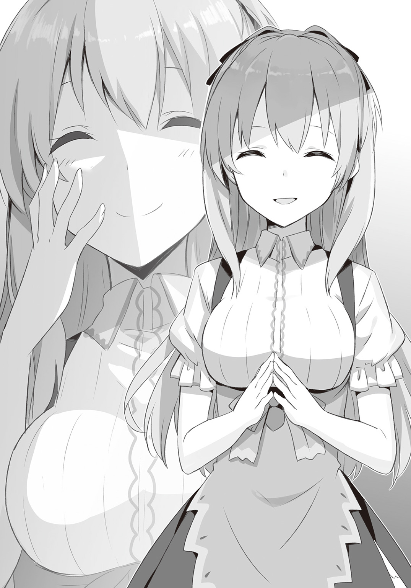
そんなことは知らず、ミアルは憤慨したまま子供たちの集まりに参加しようとしていた。
子供たちの集まりに集合場所というのは決まっていない。ごく自然に集まり、そのとき行われている遊びが気に入ればさらに増えていき、そうでなければ別の遊びを考え出す。
集合場所は遊び場の数だけある。
出遅れたミアルはぶらぶらとその場所を巡ってみるのだが......。
「なに今日、ぜんぜん見つかんない」
不思議といつもの連中が見つからない。
木の洞のところに来て、ようやく女の子たちだけが見つかった。
「今日はどうなってるの？」
「男の子たちは隠れ家を作るんだって森に行ったよ」
お人形遊びをしていた女の子たちに尋ねるとそう返され、ミアルはぐぎぎと唸る。
唸るが、すぐに気力が尽きた。
「なんか今日はうまくいかない日な気がする」
がっくりとうな垂れ、女の子たちの人形遊びを眺める。
これがお母さんで、これが子供で、これがお父さん......ご飯ができてお父さんが帰ってきてお風呂に入ってお休みなさい。さあ朝だ。お父さんは仕事にお母さんは洗い物、子供は遊ぶ......そんな感じに人形たちが日常を演じている。
平和だなぁとは思う。
そして、平和というのは退屈と同じ意味だとも思っている。
ミアルは、いまいち好きになれない。
人形はかわいいなと思う。花はきれいだ。だけど、お人形遊びもお花摘みもしたいとは思わない。
そんなことよりは枝を削って剣を作る方が楽しいし、それを使って戦いごっこをする方がもっと楽しい。
「やっぱり........................したいな？」
「え？」
ミアルの呟きに、女の子の一人が顔を上げた。
「ミアルちゃん、なに？」
「やっぱり！ あいつらをぶっ倒したい！」
そう叫び、ミアルは立ち上がった。
ガウガンドにロブレンにスラーダ。名前は覚えた！
「復讐するのだ！」
「いいね、それ」
言ったのは女の子たちではなかった。
木の洞の中で反響した声は子供のものではなかった。
「誰!?」
「誰でしょう？」
ぬるんと、彼女は木の洞の闇から現れた。
「きゃっ！」
女の子はびっくりし、ミアルも目を見開いた。
「えーと......イングリッドおねえちゃんだよね？」
「そそ」
額の瞳で笑みを作り、イングリッドが木の洞から出てきた。
「え？ どうやっていたの？」
木の洞は広いとはいえ、イングリッドに気付かないほどのものではない。女の子たちはずっといたし、ミアルだって木の洞は見ていた。
影も形もなかった......はずだ。
「影はあるよ。どこにだって」
イングリッドは笑ったままミアルの前に立った。
「それで、復讐したいの？」
「したい！」
「誰に？」
元気なミアルにイングリッドは優しく問いかける。
「ミアルちゃんはすぐに復讐したがるのよ。この前もシャリリンちゃんにやり返そうとしてたし」
二人のノリを危ぶんだのか、女の子が口を挟んだ。
「あれはシャリリンが首折れたまま追っかけて来るのが悪いんじゃん！」
「ああ......なんかぽいね」
恥ずかしくてミアルは顔を真っ赤にして叫ぶのだが、それを聞いたイングリッドは唇を緩めて笑う。
「まぁいいよ。それで誰に？」
イングリッドが話を戻すとミアルはすぐに三人の名前を告げた。
「あいつらはこの獣人街を悪者の街にしたいんだ。あたしはそれを防ぐ！」
「なるほど。正義感は素敵だね」
イングリッドは機嫌良くミアルの話を聞く。
「それで、あいつらをやっつけたい？」
「うん！」
「どこにいるのか知ってるのかい？」
「裏通りに決まってる。犯罪者といえばあそこだもん」
「なら、行ってみよう」
話はすぐに決まり、二人はすぐに行ってしまった。
止める暇もなく、女の子たちは呆然とそれを見守るしかなかった。
「いいのかな？」
二人が見えなくなってから、誰かがそう言った。
「大人の人に言った方がいいかも？」
そんなことを話し合っていると、こちらに近づいてくるだらだらとした大人（？）に女の子たちは気がついたのだった。
†
裏通りというのは獣人街に紛れ込む闇商人たちが集まる場所だ。
それだけでなく、獣人の中にいる犯罪者たちが逃げ込む場所にもなってしまっている。
そういうものがあることは嘆かわしくもあるが、同時に犯罪者たちをこの区画に押し込むことに成功しているともいえる。
「悪い奴らはみんなここ！」
つまりは、そういう考え方ができるということだ。
裏通りの入り口でミアルはそう宣言した。
ミアルとイングリッド以外には誰もいない。
「............」
寒々しい風が吹いて、ゴミの塊がミアルの足下を転がっていった。
「......えっと、それで？」
ミアルは振り返ってイングリッドを見た。
「どうしよう？」
「心当たりは？」
「ないよ」
裏通りという呼び名だが通りの長さはそれほどではない。石畳の道は木の根の隆起で荒らされたままだし、左右の建物も樹木の侵蝕を受けて朽ちている。
通りの空を覆っているのは広大な緑卓だ。住人が足場を増強してさらに二階三階と作っているのでその複雑さと危うさといったら、見上げているミアルの息を詰まらせる。
「自然豊かな悪の巣窟か......山賊の巣窟だってこんなに見事じゃないだろうに」
イングリッドの呟きに、ミアルは喉を鳴らす。
「さあ、おねえちゃん。行こう！」
「ああ、そのことなんだけど」
ミアルが意気を揚げたところで、イングリッドが止めた。
「なに？」
「あたしは隠れるから」
「え!?」
思わぬ言葉にミアルは凍り付いた。
「あたしは目立ちすぎる」
自分の額を指差して、イングリッドは言った。
たしかにいろんな獣の因子を持った人はいるけれど、額に一つ目の人はいない。
「だから隠れてついていく」
「だ、大丈夫なの？」
さすがにミアルの表情が不安に揺れた。
「隠れているだけさ。すぐ近くにいる。問題ない」
「むう......」
大丈夫とは言われても視覚的な安心感が失われるのは大きい。
不安な様子を見せたミアルに、イングリッドがくすりと笑った。
「おや、復讐するんじゃなかったのかい？」
その一言でミアルはむっとした。イングリッドが意地悪な顔をしていたからだ。
「わかった」
「さすが町長の娘。勇敢だ」
ニヤリと笑ったイングリッドの身長がいきなり低くなった。
驚くことにミアルの影に沈んでいくのだ。
「その笑い方、クロウにいちゃんみたい」
影に沈む光景に驚きながら、ミアルは言った。
沈みきる瞬間、イングリッドがミアルを睨んだのはわかった。
ちょっと、してやったりの気分になってミアルは歩き出した。
†
とはいえ一人は一人。
「うーん。これは困った」
裏通りに足を踏み入れつつ、ミアルは呟いた。
「こんなことなら、前に作った短剣を持ってくれば良かった」
とはいっても、枝から削りだした木剣なのだけれど。
いまのこの、なんともいえない手の寂しさを慰めるためにはなにかを摑んでいたい。
そうは思っても摑むものもなく、ミアルはあちこちを見回して頭上に聳える緑卓へ上がる道を探した。
「お前、誰だ？」
「うえっ!?」
いきなり声をかけられ、ミアルは飛び上がらんばかりに驚く。
振り返ると、ぼろぼろの小屋から数人の男の子たちが姿を現していた。
「......誰？」
「聞いたのはこっちだろ!?」
問い返すと、リーダーっぽい少年が怒った。
「まぁいい、おれたちは暁の狼団だ」
「ふぅん」
そういえば、男の子たちはみな犬の因子を持っているように見える。
狼ではなく、犬だ。
違いは微妙なところだし、狼の獣人も犬の獣人もいる。だけどミアルはわかる。
全員、犬だ。
「え？ 犬だよね？」
「狼だ！」
思わず言ってしまい、少年の怒りを買ってしまった。
「で？ お前は誰だ？」
棒をビシッと突きつけられ、ミアルはむっとした。
長さも太さもちょうど良さそうだ。
ちょうど、ミアルが握っていたい感じの武器だ。
「人に名前を尋ねるときは自分の名前を言うもんだよ？」
「だから、暁の狼団だって」
「それはあんたたちの名前でしょ？ あんたの名前じゃないじゃん」
「ぐっ......」
「集団の名前に頼って自分の名前を言えないとか。そういうのヘタレって言うらしいよ？」
「ロックだ！」
売り言葉に買い言葉の見本のように少年......いやさロックは叫んだ。
「あたしはミアル」
「お、おう」
笑顔で返されたのが意表を突かれたのか、ロックが鼻白んだ様子で応じる。
「ちょっと人探しに来てるんだ。これの上がり方ってわかる？」
さっきまでの不安な気分を吹き払って、ミアルは明るく尋ねる。
ここで大人が出てきていたらミアルも怖がっていただろう。だが幸運にも同年代の男の子たちが出てきた。
暁の狼団と名乗った少年たちにしても反抗されるでもなく怯えられるでもなく、明るく友達のように接せられて戸惑ってしまっていた。
「人探しって、誰だよ？」
ロックの問いに、ミアルは三人の名前を言った。
「ガウガンドは知ってる。他の二人は知らないな」
「あたしも知ってる。嫌な奴だよね」
「ああ。偉ぶってるだけの猪だ」
「どこにいるの？」
「お前、なにしに行くんだよ？」
どう見ても裏通りの子ではないミアルを、ロックは訝しんでいる。
「復讐だよ！」
しかも陽気にそんな物騒なことを言う。
「ガウガンドはあたしを攫おうとしたんだ。だからその復讐をするんだ」
武器もなしにそんなことを言ってのけるミアルに、ロックは呆れるしかない。
（バカなのか？）
そう問うのは簡単だった。笑うのも簡単だ。
だけど少年はその二つの質問を意識的に口にしなかった。
「......なんで、ガウガンドがお前を攫わないといけないんだ？」
そう言ったところで、「ロック！」と後ろにいた仲間が耳打ちしてきた。
「あいつ、町長の娘だ」
それは男の子たちに悪巧みを思いつかせるには十分な単語だった。
「なに？」
いきなりこそこそとしだした暁の狼団にミアルは首を傾げた。
「いや......なんでもない」
振り返ったロックはニヤニヤと笑っていた。
「おれがガウガンドのところに案内してやるよ」
「え？ いいの？」
「いいもなにも。ここはめちゃくちゃ複雑なんだぜ。お前一人だと余裕で迷子だ」
「むう」
ミアルは少し悩んだ。
このロックという少年は信じていいものなのかどうか？
だけどたしかに、この緑卓と人造物の絡み合った奇妙な空中建築物を一人で進めるとは思えない。
なにしろ入り口も見つかっていないのだ。
「仕方がない。案内させてあげる」
「えらそうな奴だなぁ」
ロックは呆れた顔をしつつも、集団から一人はなれるとミアルの前に進んだ。
「こっちだ」
ミアルはその後ろに従うのだった。
影は静かにその後ろにある。
†
だけど、その影の中にイングリッドはいたのだろうか？
「町長の娘なら、誘拐すれば大金が手に入るかも」
「やった。攫おうよ」
「まぁ待て、おれらが捕まえたとして、身代金の要求とかもおれたちがするのか？」
「それは......」
「子供だとなめられる。それに怒った町長の相手なんかまっぴらだ。ここは......」
「大人に売る？」
「それが堅実だろ？」
「じゃあ、誰に売る？」
「となるとやっぱり......」
子供たちのないしょ話をイングリッドは聞いていた。
「こんな呑気な街でも裏社会はやっぱりってことか。ガキもいっちょまえにスレてる」
どこぞの建物の中に消えていくミアルを見送り、イングリッドは呟いた。どうやらそのボロ屋の中に頭上にそびえる不格好な建築物への入り口があるようだ。
そしてロックとやらの仲間たちはどこかへ消えていた。
もしかしたら別の入り口があるのかもしれない。そこから『大人』に告げに言ったのだろう。
もちろん、ただ密告しに言ったわけではない。親に悪さを密告に行くだけの話ではない。
裏社会の陰険さはよく知っている。
イングリッドがその洗礼を浴びたのは額の目が開いてからだった。
「............」
額を撫でるようにしてしばし考え、イングリッドは呟く。
「さて、どうしよう？」
ミアルは行ってしまったが、どこにいるのかはわかっている。
イングリッドのやるべきことは？
ミアルを守ることではないのか？
この場では......。
では、その先は？
イングリッドは、この街でなにがしたい？
それは......。
「どうすればクロウは怒るかな？」
イングリッドは呟き、再び影に沈んだ。
†
さて、ロックに案内されたミアルは、緑卓の建築物が城館と呼ばれていることを教えられた。
「城～？」
廃屋を貫いた幹を利用した螺旋階段を上がりながら、ミアルは顔をしかめた。
「城っていうより、蜂の巣って感じ」
「どっちにしても女王様はいないけどな」
「じゃあ、王様はいるの？」
「そっちもいないよ。いたら衛士が捕まえに来る」
「へぇ」
「王様がいない方が都合が良いんだよ。まとまって強くなると町長は潰さないといけないって思うし、そんなことになったらここがなくなるかもしれない。小悪党がたくさん集まってるだけなら捕まえるのはめんどうだけど、やることはしょぼい」
そして、小悪党たちは自分たちがより多くの利益を得るために身内同士でも争い合う。
一ヶ所に集めておけば監視もしやすく、統治者がいなければ力もしれている。そして、潜在的な犯罪者は居場所を求めて城館へと流れていく。
城館は、そのようにして自らの存在意義を保っている。
「すごいね」
ロックの説明に、ミアルは素直に感心した。
「え？」
「そんなことわかるんだ。頭いいんだね」
「へん」
ミアルにそう言われて悪い気がしないのか、ロックは鼻を鳴らした。
「じゃあ、ガウガンドがここのボスになりたがっててもなれないんだ」
その質問に、今度は鼻で笑った。
「ボスになりたい奴なんかたくさんいるよ。その中でもガウガンドは下っ端だ」
「そうなの？」
「ただのゴロツキさ。あいつって前の町長の息子だろ。だから最初はいい扱いだったらしいけど、町長が変わったら用なし。そのままそこらのゴロツキになってグダってたみたいだな。けど、最近は闇商人の一人が近づいて、調子に乗ってるみたいだ」
「ふうん」
まぁ、ガウガンドの事情なんてどうでもいいのだ。過去がどうかなんてどうでもいい。
聞く限り、同情する余地もなさそうだ。
それよりも、ミアルは目の前にいる同年代の少年が気になった。
「ロックはどうしてここに住んでるの？」
ここに同年代の子供たちがいることは前からなんとなくだが知っていた。
だが、交流はなかった。
近づくなと言われてたし、遊ぶなと言われていた。
親としてはトラブルを回避するためには仕方のない言葉だとは思う。
だけど、どうしてここに子供がいるのだろうと、ミアルは単純な疑問にとらわれてしまう。
やはり、ロックは単純な事実を返した。
「親がここの住人だからさ。他のも闇商人の下働きでついてきてそのまま居着いたりとか、色々」
「ふうん」
「親は選べないし、住んでるところも選べない。子供のうちはな」
ミアルは最後の言葉に力を感じた。
「なら、いつかはここを出る気？」
「ああ！」
ぱっとロックが表情を明るくした。
「傭兵団をやるんだ。獣人だけの傭兵団。知ってるか？ 伝説の傭兵、赤毛の虎っていうの」
「知ってる！」
その呼び名にミアルも反応した。
赤毛の虎というのは、獣人の傭兵のことだ。その名の通り、赤毛の虎顔だという。地毛に赤が混じっているのか、それとも頭髪が赤いのかがわからないのが難点だが、ミアルは地毛が赤い方がカッコイイかなと思っている。
赤毛の虎は帝国が興る前に活躍していた傭兵だ。
王国とその周辺の国で雇われ、様々な戦場で活躍したという。
「おれは獣人だけの傭兵団を作るんだ。ここにいる連中で外に出たがってるのは何人もいる。そいつらを束ねるんだ」
赤毛の虎のことで盛り上がり、ロックは夢中になって自分のことを語る。
その姿は、羨ましい。
「いいなぁ」
「なにが？」
「あたしもそういうのになりたい」
「なんでだよ？ 町長の娘だろ？ いい身分じゃないか」
「親と住むところが選べないって言ったのはロックだよ」
「それって......」
「もちろん、パパも好きだしいまのところに不満があるわけじゃないけどさ。でも、本当の英雄ってのも見ちゃったし」
「英雄？ それって黒騎士のことか？」
ロックが身を乗り出す。
裏通りの子供たちにも帝国の黒騎士の噂は届いているようだ。
「本当に獣人街にいるのか？」
「ああ......でも、会ったら後悔するかも」
「どういうことだよ」
「ううん......なんていったらいいか............戦士って、戦場にいるときが一番かっこいいんじゃないかな。たぶんだけど」
そう前置いてミアルはいまのクロウについて語った。
つまり、犬鳴亭に寄生したクズでヒモでニートな男、クロウのことをだ。
ロックはうぇって顔をした。
「そんな奴......ここに山ほどいるぞ」
でもその後で、「だけど」と付け足す。
「本物のクズも多いけど、たまにある仕事のときにはすげぇ活き活きしてる奴もいるんだよな。黒騎士はそういう奴ってことなんじゃないのか？」
「おお！」
「な、なんだよ？」
「ロックはわかってる奴だね」
「お、おお？」
いきなり上機嫌になったミアルがわからず、ロックは戸惑う。
（やっぱりクロウは、そういう奴なんだよね）
自分以外にも、そういう感想を持ってくれる人がいたことがうれしい。しかもレイニアやアシュリーのような、クロウに贔屓目を使いそうな人ではなかったことも大きい。
クロウと喧嘩したことも忘れて、ミアルは気分がよくなった。
上機嫌に先を行くミアルに、ふっとロックは我に返った。
（いかんいかん。なにやってんだよおれは）
いつのまにか、まるで仲間でも相手にするみたいな気分になっていた。
（おれはこいつを売っ払うんだぞ）
しかも相手はこいつを嫌っているガウガンドだ。
ロックはいま、ガウガンドが居着いている場所に向かっている。
（でもこいつ、ぜんぜん町長の娘っぽくないもんな）
どうせ金持ちの娘なんだから気取っているのかと思ったらそんなことはない。女っぽくさえもない。男っぽいし、ガキっぽい。
傭兵の話も笑ったりしなかった。
（やりにくいなぁ......）
ボリボリと頭を搔き、ため息を吐く。
だけどもう、仲間たちはガウガンドに向かって話をつけているはずだ。
そら、合図が置かれている。
太い枝と板で作られた通路の左右にはボロ小屋が並んでいる。その小屋の一つに赤い布を巻いた棒が置かれている。
仲間からの報せだ。交渉がうまくいったらしい。
それなら後は連れていけばいいだけだ。
（傭兵団は戦うだけじゃない。こういう仕事だってあるさ）
未来を見据えての行動だ。
間違えちゃいない。
「......なぁ、ガウガンドに会って、どうやってやっつけるんだ」
「とりあえず、その棒貸して」
「え？ 嫌に決まってるだろ」
「ケチ」
「マジで武器なしか？ もしかして作戦もなしとかか？」
「それは秘密」
「なんだよ」
「ふっふ～ん。教えられないなぁ」
「むかつく」
そう吐き捨てるが、内心では「え？ 大丈夫か、こいつ？」と呟いていた。
（いやいやいや、ホントにこいつ大丈夫か？ いや、おれが売るんだから大丈夫じゃないんだけど。え？ マジで？）
そう考えてから、慌ててその言葉をかき消す。
（いや、こいつの心配より金だろ。傭兵団を作るためには武器がいるんだし、金はいくらでもいるんだ）
だからお金を貯めている。仲間たちと協力し合って小金を集め、それを秘密の場所に隠している。
そのお金で、いつの日か獣人街を出て傭兵団を作る。
世界の戦場を渡り歩き、名をあげて、いつか自分の国を作る。
そのための一歩だ。
たとえ汚い方法だってかまうもんか。
「♪」
裏通りを鼻歌交じりに歩く能天気なこいつが悪いんだ。町長の娘という立場が悪いんだ。だから、それを利用しておれたちは金を稼ぐんだ。
それのなにが悪い？
悪くなんてない......。
......だけど。
「ああもう！」
それでもロックの足は止まらない。
†
「止まる必要なんてない」
イングリッドはそう言ってやりたかった。
実際にはなにも言わない。彼女は影の中に潜み続ける。
実際に心の声を聞いているわけではない。
ただ、イングリッドの目は額に一つだけれど、見えるものは一つではない。ミアルとロックだけでなく、別行動を取った子供たちの動きも見えている。
そしてロックの表情から心の動きを読み取るのは、これまでの経験によって編み出された技術によるものだ。
ロックのような裏社会で育った少年にとって、ミアルのような能天気さは信じられないものだろう。
なににも警戒しないでいられるなんて、本当にそんなことはできるのか？
そう考えて、イングリッドの頭に浮かぶのはシャリリンだ。
だが、彼女の能天気さは『自分は絶対に死なない』という事実と、古き魔法使いに処置されたか長い年月によって培われたかのどちらかによる精神的強度に裏打ちされたものだ。
シャリリンとミアルを同じに語るわけにはいかない。
では、この少女の能天気さは、その通りに考えなしによるものなのか？
「まぁ、そうだろうけど」
影の中なら誰にも声は届かない。
「だけど、本当にそれだけ？ 子供の愚かさってこんなにも無防備なものだったかな？」
その疑問に影は答えてくれない。誰にも声が届かないように、答えてくれるものもない。
イングリッドの人生経験の中に、その答えはない。
なんて危なっかしい。
ミアルを見ているとイングリッドさえもそう思ってしまう。
ロックもそうだろう。
だからミアルの行動に戸惑っているのだ。
そしてそれはイングリッドもまた同じだった。
「ああもう......なんてこと」
他人を疑うことのない無防備さはイングリッドにもロックにもないものだ。
自分に近い側の人間を騙すことには罪悪感なんて欠片も覚えないだろう。少しでも疑うような性質があればこちらの気は楽になる。遊戯の感覚にすり替えることができるからだ。
だけど、こんな無邪気さを相手にしたことはない。
（やりづらい）
いまさらながらそれを思ってしまった。
だけど......。
「これはクロウの罪だから」
そうだ。
そう思えばいい。
「クロウが約束を守らないから。こんなことになっている」
彼のせいで幼気な少女を罠にはめ、どうしようもない苦難に陥らせなければならなくなった。
「そうすれば、あいつだって無視できないはずだ」
あいつがどんな人間かは知っている。
いまがどうだろうと関係ない。
会っていたときのあいつが、皇帝の洗脳下にあったのだとしても関係ない。
結局それらは表面的なものだ。環境や洗脳が行動の方向性を歪めることはあっても、その本質にまで影響を及ぼすことは簡単ではない。
「あたしの知っているあいつなら、こんなことは絶対に許さない」
絶対に怒るはずだ。
「だから、早く来い」
噓だ。
本当なら早く来てもらっては困る。ミアルが絶望の運命に陥ってからでなくては、クロウを真に怒らせることはできないはずだ。
だけど、イングリッドはそう思ってしまうのだ。
早く来いと。
†
着いちまったよ！
ロックはそう叫んでしまいそうになった。
「ん？ なんか言った？」
「いいや、なにも」
慌てて表情を取り繕い、ミアルに変な顔をされてしまう。
（さあて、どうする？ どうする!?）
予定通りにことが進んでいるのに、どうしてこんなに焦らなくてはならないのか？ 自分の心理がわからなくて、ロックは戸惑っている。
（やっぱやめたって、このまま逃がすか？）
そう考えたのも一度や二度ではない。だけど結局、決断を下せないままここまで来てしまった。
「......こっちだ」
道すがらのあちこちに仲間たちはいて、様々な形でロックに合図を送ってきている。おかげで向こうの作戦ももうわかっている。
「こっちからなら、あいつのいるところの裏側に出る」
「奇襲だね！」
「声がでかい」
「あ、ごめん」
一応はこそこそとしながら裏口へと向かった。
いつもはいるだろう見張りがいない。
向こうも待ち構えるための準備が整っているということだ。
このままいけば、ミアルは捕まってしまうことになる。
「よし、行こう」
ミアルが闘志を燃やして言う。
言って......「あっ」と声を漏らした。
「あ、いや......違うや」
「は？」
「ありがとう。ここまででいいよ」
思わぬ言葉にロックは立ち尽くしてしまった。
「なに言ってんだよ？」
いや、それでいいんだ。ここでさよならでいいんだ。
そうすれば、ロックが裏切ったということがばれないかもしれないし、ばれたとしても騙されたという顔を見なくて済む。
それなのに、なんでミアルの手を握って止めてしまっているんだ？
「お前一人で行く気か？」
「一人......じゃないんだけど。うん、大丈夫だよ」
「どういうことだよ？」
「だいじょうぶ、だいじょうぶ」
気楽にそう言うと、ミアルは裏口のドアを開けた。
†
あたしか!?
当たり前のことのはずなのに、イングリッドはその事実を再確認して驚愕した。
ミアルが不安なくここまで進んできたのはイングリッドが守ってくれると信じていたから......その事実がいまさらのように彼女の胸を突き刺した。
「な、なにをこんなことで戸惑っているんだ、あたしは......」
最初からそうだったではないか。
守ってやるといって影に沈んだのはイングリッドではないか。
なのにどうして、こんなにも動揺してしまっているのか？
『一人......じゃないんだけど』
この言葉だ。
ミアルの言葉が、なぜかイングリッドの胸を激しく抉った。
なぜか......ではない。
わかっている。
頼られている。
この事実を前にイングリッドの心は揺れている。
罪悪感が怒濤のように押し寄せてくる。
「ふざけるなイングリッド。こんなことで......いまさら」
クロウと出会う前、帝国の四魔将を名乗る前、イングリッドはなにをしていた？
暗殺者だ。
人間としては盲目のまま屋敷の中でだけ過ごしていたはずなのに、光を得てからはなんの知識もなく世界に放り出された。
あるはずの場所にではなく、額に現れた巨大な瞳が異常なことぐらいそのときのイングリッドでもすぐに気付いた。屋敷に飾られた無数の肖像画のどれにも額に瞳なんてなかったからだ。
お前は人間ではなくなった。
家族の歴史を示す肖像画がそれを物語っていた。
そして一人なのだ......と。
そんな彼女が流れ着く先は裏社会しかなかった。獣人街にあるもののような特異な建築物はないけれど、もっと規模の大きな裏社会。力の使い方を覚えたイングリッドはそこで汚れ仕事を繰り返した。
人を殺す仕事だ。情報や物を盗む仕事もあったが、それよりも血に汚れる仕事の方が多かった。
どうしてこんなことをしなければならないのか？
生きていくにはそのための方法を見つけないといけない。そしてイングリッドには、自らで自らを殺す方法が見つけられなかった。
どれだけ自分を傷つけても、イングリッドに巣くう邪霊たちは彼女が死ぬのを許さなかった。傷は癒え、渇きと飢えはいつまでも続く。
苦しみから逃れるには生きる道を見つけなければならず、そしてイングリッドの前には闇の道しかなかった。
そんなイングリッドを、信頼している？
あんな少女が？
「........................ああもう！」
ついにイングリッドは罪悪感に敗北した。
影から影へ。
ミアルの影から移ったイングリッドは、裏口を防ごうとしていた連中の前に姿を現すと、彼らに驚きの声を上げる暇さえ与えずに気絶させ、再び影に沈む。
次は屋内だ。
そう思ってミアルを追い抜いて建物の奥に入ったイングリッドは、そこで動きが止まった。
「お？ よう」
そんな気楽な声に出迎えられたからだ。
「クロウ」
イングリッドの目の前には犬鳴亭で寝転んでいたはずのクロウがいて、そして足下には複数のゴロツキが転がっていた。
その中にはガウガンドもいる。
「ったく。めんどくさいよなぁ。まったく」
「......いつからいた？」
「ん」
イングリッドに問われ、クロウは眠そうな声で答えた。
「気配を消すのが得意なのはお前だけじゃないし？」
つまり、最初からミアルの近くにいたということか？
イングリッドがなにをしなくとも、あのロックが罪悪感に潰されなくとも、ミアルの無事は決まっていたということか？
クロウはそれらを眺めていたのか？
つまり、弄んでいたのか？
「......楽しいか？ こちらが慌てふためく様を眺めるのは？」
「そりゃ、思いつきで動こうとするからそうなる」
イングリッドを見たクロウはニヤリと笑った。
「慣れないことはするもんじゃないだろ？」
「っ！」
激しかけたイングリッドだが、背後からミアルが入ってくるのに気付いて声を抑えた。ドアはあと一つある。
まだこちらの姿は見られることはない。
「お前が、約束を守れば済む話だろう」
「その件なぁ......もういい加減に忘れないか？」
「ふざけてるのか？」
「わりとまじめ」
気だるげなクロウの言葉に、イングリッドは沈黙で答えた。
瞳は細く、視線は鋭く。
放たれる眼光は紅く燃えている。
「............」
部屋に満ちていく殺気を、しかしクロウは静かに受け止めるのみだ。
イングリッドの殺気が収まったのは一つの音だった。
ドアの開く音だ。
クロウの足下で転がっていたはずのガウガンドが逃げ出したのだ。
「見つけた！」
だが、そちらにはミアルがいる。
「覚悟っ！」
「ぎゃあっ！」
よろよろのガウガンドを見て、ロックという少年も情勢の変化を読んだだろう。悲鳴は一つだけだった。
クロウが声を立てずに笑う。
「さあ、行ってやれよ」
「......なぜ？」
「約束したのはお前だろ？ おれはレイニアに脅されてきただけだからな」
「............」
「ほら、ちゃんと報酬をもらってこい。おれとは違って誠実な依頼人だぞ」
「覚えたぞ」
囁くように言い残しイングリッドはガウガンドの後を追う。
ミアルの明るい声に出迎えられたイングリッドはどんな表情をしているのだろう？
「めでたしめでたし......にはならんだろうなぁ」
ガリガリと頭を搔くと、クロウはため息を吐く。
「ああ......めんどくせぇ」
その息はいつもよりも深く、そして長かった。
そしてクロウは、イングリッドの残した言葉の意味をもう少し考えるべきだった。
こぼれ話――団長の決断――
「よし決めた！」
一つ目のすげぇねえちゃんを出迎えたミアルを見て、ロックが叫んだ。
叫んでいるロックを、仲間たちは物陰から見ていた。
「傭兵団ができたらお前を副団長にしてやる！」
顔を真っ赤にしてそう叫ぶロックを見て、仲間たちは思った。
（惚れたな）
（惚れたね）
（あれは完全に惚れた）
（あーあ）
仲間たちにそんなことを思われているとは気付かず、ロックはきょとんとした顔のミアルを見つめる。
「どうだ!?」
「あっ......それはいいや」
「なっ！」
あまりにもあっさりと断られ、ロックは絶句した。
そしてそんなロックを見て、仲間たちは思う。
（ふられたな）
（ふられたね）
（あれは完全にふられた）
（いつも通りだね）
仲間たちにぬるい視線で見守られながら、少年は破れた恋に呆然とする。
犬の獣人ロック。
彼の傭兵団『暁の狼団』が世界に名を轟かす日は、まだ遠い。
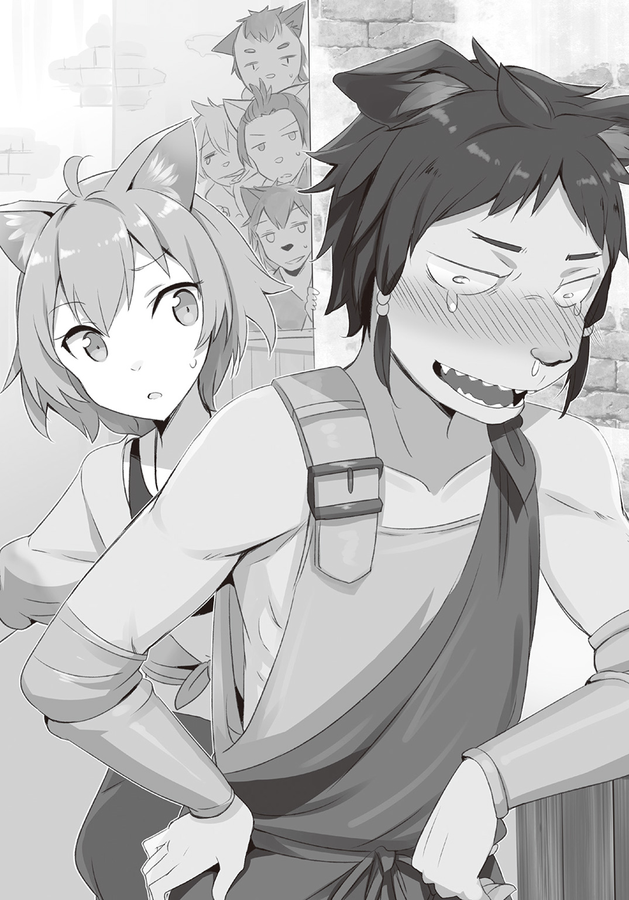
暗殺者は忘れない 05
何事もない日々が続いているように思う。
アシュリーが獣人街に来てから変わらない日々。
犬鳴亭で働き、だらだらするクロウにジェダが苛立ち、ルーミィが罵り、レイニアが微笑み、そしてアシュリーは困る。
そんな日々がこれまでは続いていた。
ときに平穏が乱れることはあったけれど、それらは全てクロウによって収められてきた。
だけど、今回はどうだろう？
まだなにも起きていない。
起きていない......けど。
「......イングリッド、いるの？」
「............」
アシュリーはそう声をかけた。
ここはジェダの家にあるリビングだ。
すでに他の人たちは眠っている。アシュリーは手持ちの明かり一つでソファに座っていた。
一人でイングリッドに語りかけている。
以前にずっとアシュリーの影に潜んでいたと言っていた。
それなら、もしかしたら今夜もアシュリーの影に潜んでいるのかもしれない。
「いないの？」
「............」
返事はない。
では、今夜はいないのだろうか？
「なら、せっかく作ったこのお菓子は他の人に......」
「います！」
「......やっぱりいるんだ」
念のためにと言ったら、影から返事がきた。
返事とともに飛びだしてきたイングリッドは「てへっ」という感じに舌を出している。
「いただきまーす」
「ああもう、お茶を淹れるから待って」
嬉しそうにクッキーをつまむイングリッドにアシュリーはポットに手を伸ばした。
お茶はすでに用意していた。ポットに淹れていたお茶をカップに移す。
少しぬるくなったお茶で喉を潤しながら焼き菓子を美味しそうに頰張るイングリッドを見つめる。
「ん？ どうかした？」
「ねぇ、クロウ様と仲良くできないの？」
アシュリーに言われ、イングリッドは唇を尖らせた。
「クロウが約束を守らないから」
「でもそれは......」
「それは？」
アシュリーはすぐに言葉が出なかった。
唇を尖らせてかわいくふて腐れているが、守られていない約束がその態度ぐらいにかわいげがあるとはどうしても思えない。
「守らないから殺す」と、イングリッドは言ったのだ。そのときに滲み出た本気の空気をアシュリーは忘れられない。
「約束を守らないのはクロウ様が悪いとは思う」
「でしょう？」
「でも、守れない約束だったら......」
「それなら、守れない約束をしたあいつが悪いんじゃないの？」
「状況が変わっちゃったし......」
クロウを擁護しようと思うが言葉が見つからずに、アシュリーは困る。
そんな彼女を見て、イングリッドはニヤニヤ笑っていた。
「......なに？」
「いやぁ、困ってるアシュリーはかわいいなぁと」
「もうっ！」
とても心配しているのにイングリッドは茶化そうとする。
「ごめんごめん」
イングリッドは、それでも笑っている。
「でも、だいじょうぶだよ」
「なにが？」
「守れない約束を要求しに来るほどあたしも考えなしじゃないよ」
違う。
笑顔でそう言いきるイングリッドを見て、アシュリーは思う。
違う。そんなことを言いたいんじゃない。
「クロウはあたしとの約束を守れる。あたしとあいつの約束は帝国があるかどうかなんて関係ないから」
その約束には、悪い予感しかないのだ。
その約束が守られたからといって、誰かが幸せになれるとはどうしても思えない。
ただの勘でしかない。
だけど、この予感が外れるとはどうしても思えない。
「ねぇ......クロウ様とどんな約束をしたの？」
「秘密」
たまらずに尋ねたけれど、やはりイングリッドは教えてくれない。
そして同じように、彼女の表情も崩れない。
明るいままにこう言うのだ。
「でも、安心して。もうすぐこの不毛なやりとりも終わるから」
「え？」
「あいつにやる気を出させる方法、思いついたから」
イングリッドの表情は明るいままだ。
その笑顔を見ればなにも悪いことなんてなさそうなのに......。
アシュリーの嫌な予感は、ますます強まるばかりだった。
†
翌日、アシュリーは犬鳴亭に来るとまっすぐにクロウのところに向かった。
「クロウ様......」
「うん？」
「イングリッドのことなんですけど......」
アシュリーは昨夜のことをクロウに話した。
「ふうん」
「あの、だいじょうぶなんですか？」
約束の内容はいまだにわからない。そのことも不安だけれど、イングリッドの言う『やる気にさせる方法』というのも、不穏さを感じてしまうのだ。
「ほんとにそんなのあるの？」
話を聞いていたらしい。ルーミィがうさんくさげな顔で皿洗いの手を止め、こちらを見た。
「あるんなら、いますぐこいつのやる気を出させて欲しいよね。働け」
「うるせぇ」
「ルーミィ、冗談ではありませんよ」
「ええ......冗談のつもりはないのですけど」
レイニアに窘められ、ルーミィは不満げにぶつぶつ呟く。
「クロウさん」
「ああ、レイニア。お前がそんな顔をする必要はないんだって」
「しかし......」
レイニアが責任を感じているのを察し、クロウはめんどうそうに手を振った。
「これはおれとあいつの約束だから、おやじさんは関係ないって」
「ねぇ、その約束ってなんなのよ？」
言葉を詰まらせたレイニアに代わり、ルーミィが言う。
それはここにいる全員が聞きたいことだろう。
「いい加減、秘密にされっぱなしなのもうざいんだけど？」
「ルーミィ」
「だって、そうじゃないですか？」
レイニアに窘められたというのに、ルーミィはむっとした顔で言い返した。
「こんなに周りが気にしてるのに黙りっぱなしって。秘密にしときたいんなら、放置しないでさっさと解決してくんない？」
それはルーミィがやりそうにないことだった。彼女はレイニアに仕えることを第一にして彼女に逆らうことなんて考えていないはずなのに、彼女の窘めに抗ってまでクロウに言ったのだ。
ルーミィにそう思わせるほど、周りに心配させて、あるいは苛立たせているということなのだろう。
「そうだなぁ......」
「クロウ様？」
「解決してみるか」
そう呟くとクロウは立ち上がり、そしてだらだらと犬鳴亭を出たのだった。
「え？ ほんとに行ったの？」
思わずそう言ってしまうぐらい、あまりにもあっさりとした行動開始だった。
「いつもなら『だりぃ』とか『めんどくさい』とか言うくせに」
「ルーミィさんが言ったんじゃないですか？」
「なによ......ほんとのことでしょ？」
「そうですけど......」
アシュリーだって解決を望んでいる。
だけど......。
アシュリーの冴えない顔にルーミィはたまらず声を上げる。
「どんな約束か知らないけど、レイニア様は関係ないっていうし、聞いても教えてくれない。それなら自分で解決できるってことでしょ？ ならやりなさいよって話じゃない。その方がイングリッドさんのためじゃないの？」
「そうなん......ですけど」
ルーミィの言っていることは正論だ。
だけど......アシュリーは嫌な予感がするのだ。
「レイニア様も感じておられますよね？」
「......はい」
レイニアが頷いたことでルーミィがむうと唸る。
きっとルーミィもなにかを感じているのだ。だから刺々しさがいつもとは違ったのだ。
「絶対、二人の約束は普通のものではありません！」
「それはわかってるけど......でも、二人が教えてくれないんだから、なにもできないじゃないですか？」
レイニアを相手にしても、それでもルーミィは抵抗する。
二度目の正論に、レイニアとアシュリーは黙るしかない。
「............」
「............」
「あ、あの......」
アシュリーだけでなく、レイニアまで沈んだ雰囲気になって。ルーミィは焦った。
†
犬鳴亭を出たクロウだが、出て早々に途方に暮れていた。
「うーん、どうしたもんか？」
出てきたものの、対策はいまだに浮かんではいない。
イングリッドが諦める様子はない。
というか、すぐに諦めてしまうような約束ならこんなにも苦労しない。
「うーん」
獣人街をうろうろするもののイングリッドが姿を現す様子はない。どうせ影に潜んでこちらの様子を窺っているのだろう。
こちらがやる気を見せない限り、向こうも姿を見せないのかもしれない。
そうして、ちまちまとちょっかいをかけてくる気か？
先日のミアルの一件はそうなりかけていた。
だが、最後にはイングリッドは自分の善意に負けた。
クロウもそれは見逃してはいない。
「だけどなー」
イングリッドの中に子供を無下にできない善意が残っていることと、約束に固執することは、また別問題だ。
「まっ、子供を盾にされることはないってだけ、まだマシか」
とはいえ、そこから先の答えはないわけで......。
「むう」
獣人街の片隅でクロウは唸るしかなかった。
「あれ、クロウ？」
唸っているとガラガラという音ともに名前を呼ばれた。
そちらを見ればシャリリンが歩いてきた。
後ろには彼女の鎧が荷車を引いている。
「おーう」
手を振って答え、クロウは荷車を見た。
中には森で採れる果実が山積みされている。
「どした、それ？」
「この間のお猿さんがくれたよ」
「はぁ？」
「お礼だって」
縄張りを取り戻したことを言っているのだろう。
そのお礼に荷車一杯の果実を集めてきたというのか。
「猿にも恩を感じる心はあるんだな」
「ねぇ」
シャリリンも嬉しそうにうなずく。
「だから、これを町長のところと犬鳴亭に送るようにってキュライアに頼まれたの」
「なるほどな」
クロウは荷台からカキノミを一つ取った。先日投げられたような熟れすぎのものではない。
魔錫のナイフでさっと皮を剝いて実を切り分けると、シャリリンと二人で食べた。
そういえば朝食も食べてなかった。
「クロウはここでなにしてんの？」
「いろいろ考えてんだよ」
二つ目のカキノミを剝きながら答えるとシャリリンに笑われた。
「あはは、クロウが？」
「なんだよ。おれだって考えるぜ？」
「うーん。そだね。暇だと考えるぐらいしかやることないよね」
「なんだよ。わかってるじゃないか」
「ふふふーん。シャリリンはこれでもグータラ暮らしのプロフェッショナルだから」
「まぁ、たしかにそうかもしれん」
なにしろ、迷宮の中で何百年も過ごしていたのだ。
クロウのグータラ歴など、シャリリンにとっては昼寝にも値しない。
「というわけで、グータラ暮らしの先輩がアドバイスしてあげるから、どんと来なさい」
どんと叩き、シャリリンが薄い胸を張る。
その様子は面白いが、不思議と頼りなくはない。
いや、むしろ頼りがいがある。
「イングリッドがなぁなぁにしてくれないんだよ」
だからなのか、他の連中に言えないことを言えてしまった。
いや、他の連中はまず最初に『心配！』という空気で圧力かけてくるから、こちらとして『大丈夫！』と返すしかなくなったのだ。
だからといってレイニアやアシュリーが悪いと思っているわけではない。
これはもう、お互いの性格とかの問題だろう。
とにかく、シャリリンに言えた理由があるとすれば、それは『シャリリンだから』だろう。
これだけは誰にも真似できない。
「なにを？」
「約束」
「どんな約束？」
「それは言えない」
「言えないかぁ......」
シャリリンは空を仰ぐと、自分の口にカキノミをぽいと投げ入れた。
「............」
「............もぐもぐ」
「......気にならないのかよ」
「気になるよ」
「そうか」
よかった。気にならないって言われたら、ちょっときつかったかもしれない。
「でも聞かないよ」
「聞かないのかよ！」
「聞かないよ！」
にっこり笑ってそう言いきる。
クロウから話を聞き出すための芝居かとも思ったが、シャリリンはそんなことはしない。
「なんでそういう境地になれるんだ？」
「長く生きてると、その分、気も長くなるんだよ。待てば話してくれるなら百年だって待てるよ」
「百年はさすがにおれも死ぬなぁ」
「そう？ 百年も過ぎればだいたいのことはどうでもよくなっちゃうよ」
「その視点で語られると、大部分の人らの悩みがどうでもよくなるなぁ」
「違うよ」
「うん？」
「気になるのはクロウとイングリッドの約束だから。聞かないし、待てるのは、クロウが悩んでいるからだよ」
にっこり笑顔のままシャリリンはそれを言う。
言えるのだ。シャリリンはそういうことを。
「良い約束ならクロウはすぐになんとかしてくれようとするはずだよ。シャリリンのときみたいに」
「......まぁな」
「だけど、クロウは悩んでる。それはその約束がイングリッドにとってよくないって思ってるからでしょ？」
笑顔は信頼の証だ。
「だから、聞かない」
「そうか......」
その信頼の感触を確かめるようにクロウは遠くを見、そして......。
「......あと一押ししたら教えるかもしれないぞ？」
「聞かない」
念押ししてみたが、シャリリンはやはり首を振る。
その鉄壁っぷりは、いままでの信頼感とは真逆の拒絶さえ感じてしまいそうだ。
「それはむしろ冷たいんじゃないのか？」
「いひひ......」
「なんだよ北風と太陽じゃなかったのかよ」
「死者は語らず、キノコはそこにあるだけだよ」
「それで良いこと言ったつもりかよ」
動く死者でありキノコ人間でもあるシャリリンはそう言って「いひひ」と笑い続ける。
「がんばれ若者」
そう言って、シャリリンは去っていくのだった。
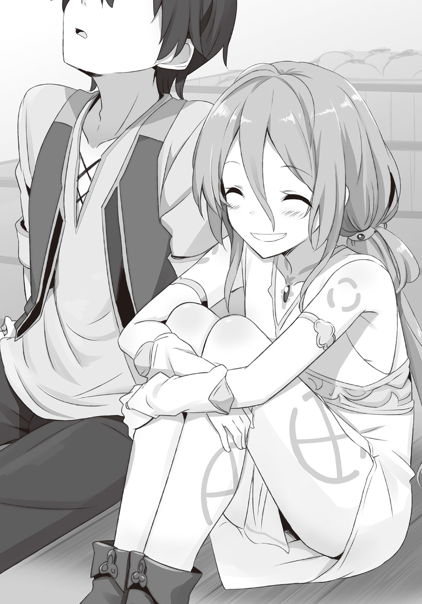
犬鳴亭の方向に。
「この流れで帰ったら......怒られるだろうなぁ」
やれやれと、クロウはイングリッドを求め獣人街をぶらぶらするのだった。
†
そうして夜がやってきた。
「......ついに、戻ってきませんでしたね」
最後の皿を拭き終え、アシュリーは嘆息とともに呟いた。
もちろん、戻ってこなかったのはクロウだ。
朝にイングリッドを探しに出てから、ついに閉店の時間になってしまった。
「シャリリンさんが会ったと仰ってましたから、いまも探しているのでしょう」
「ていうか、あいつ野宿とか余裕の人でしょ？ 一年二年放置してたって心配ないわよ」
「ルーミィ、さすがにそれは単位が」
レイニアとルーミィのやりとりを聞きながら、アシュリーは心配になってきた。
「もしかして、大変なことになってたりしたら......」
「シャリリンさんがだらだらしてたって言ってたでしょ？ どうせどっかで寝てるんじゃないの？」
もちろん、その可能性も否定できない。
「でも......」
クロウとイングリッド。
喧嘩友達だけど、もしかしたら今度は喧嘩では済まないことになるかもしれない。
それがわかっていて、それでもクロウが出るのを止められなかった。
「やっぱり、行かせちゃだめだったんじゃ......」
ああ、だめだ。
心配が止まらない。
働いている間はむしろ没頭することで考えることから逃げていたけれど、手が空いてしまったいまは考えが止まらない。
「いや、あんたけっこう、ボーっとしてたけどね」
ルーミィのツッコミも聞こえない。
「わたし、少し探してきます」
そう言うとアシュリーは犬鳴亭を飛びだした。
「あっ、アシュリーさん」
レイニアが呼び止めるが、彼女は足を止めなかった。
「放っておきましょうよ」
「でも......」
ルーミィに止められたが、レイニアも心配なことには変わりない。
「あたしたちにできることなんてありませんよ」
彼女の言うことも一理ある。
それでも行きたい気持ちもある。
「探しておいで」
迷っているとジェダが言った。
「おばさん」
今回のことではずっと黙っていたジェダを見ると、彼女は顔をしかめて続けた。
「外で寝られていたら迷惑だよ」
「はい！」
うれしそうにレイニアは店を出るが、ルーミィは不満だ。
「けっきょく、ジェダさんも世話をしたいタイプなんじゃないの」
ぶつぶつとこぼしながらレイニアを追う。
彼女は店を出てすぐに足を止めていた。
「レイニアさま、どうされましたか？」
そう言ったルーミィだが、すぐに事情を察した。
レイニアの前にイングリッドがいたのだ。
「イングリッド......さん」
陽の落ちた中に立つイングリッドには独特の雰囲気があった。
瞳と髪の赤が良く目立つ。
まるでそれ自体が発光しているかのようだ。
あるいは本当に光っているのかもしれない。
その、淡い光が夜の中では際立ち、レイニアにはそれが燃える瞳だけの魔物のように見えた。
「こんばんは」
イングリッドは一つの目でなんとも言えない笑みを作り、その場に立っている。
「あなた......なんの用？」
不穏な気配にルーミィがレイニアの前に立って身構えた。
そんなルーミィの態度をイングリッドは気にも留めていない様子だ。
「手伝って欲しいことがあるの」
「手伝うとは、なんでしょう？」
「お願いできる？」
この場でお願いされることとなると、それはやはりクロウとの約束の件に違いない。
クロウは関係ないと言ってくれているが、そもそも彼がそんな約束をしなければならなくなったのはレイニアの父のためだ。
それならやはり、レイニアは自分が無関係だとは思えない。
「わたしにできることでしたら」
「素敵。さすがは姫様」
その言い方にはトゲがあった。
「もう、姫ではありません」
「だけど、姫だったっていう過去は消せない」
「............」
「あたしだって同じ。四魔将だったって過去は消せないし、その前にやってたことも、されたことも消せない」
「わかってます」
イングリッドの言葉をレイニアは肯定する。
なにをどう言い繕おうと、レイニアが帝国の姫であったことは変わらないし、帝国がなにをしたかも変わらない。
「でも......」
そう、たとえ事実が変わらないにしても、そこで止まってしまっていけない。
「......昨日に負けない明日を作ろうと思うことは、やめてはいけないと思います」
どれだけ重い過去があろうと、その重さに囚われて身動きが取れなくなることだけはなんとしても避けなくてはならない。
「生まれや環境による因縁が付きまとうのは嫌なものです。だけど、それに負けるわけにはいきません」
誰になにを言われ、責められようと「明日はもっと良い日になる」と信じることは止めるわけにはいかない。
それがレイニアの信念だ。
イングリッドが笑みを消した。
空気に重みが増した気がする。ルーミィの肩が震えているのをレイニアは見た。
「レイニア様」
ルーミィが小さな声で囁く。
彼女がなにを言いたいのか、わからないわけではない。
「逃げましょう」あるいは「逃げろ」だろう。
しかし、イングリッドが本気で捕まえようとしているのなら、レイニアに逃げられる術はない。
それに、抵抗して背後の犬鳴亭......ジェダに迷惑をかけたくなかった。
「......なにそれ？ あたしに言ってるの？」
なにより、レイニアはイングリッドに言いたいことがあった。
「あなたとクロウとの約束についてはなにも知りません。でも、あなたがそれに強いこだわりを持っているのはわかります。だけど、わたしにはあなたがそれに......」
「ごめん、聞きたくない」
次の瞬間、レイニアの周辺に黒いモノが現れた。
「姫様の言っていることは前向きでとても素敵。だけど、正論が全てにおいて通用するわけでもないよね？」
「レイニア様！」
ルーミィが悲鳴とともにレイニアに手を伸ばそうとするが、その手は黒いモノに払われる。
黒いモノは邪霊だ。
それがレイニアを囲み、逃げられなくした。
イングリッドに笑みが戻る。
「それにね姫様。前に見えるものが常に美しかったり良かったりするわけじゃないの」
その笑みは哀しそうだった。
イングリッドの言うことも正論なのだろう。
未来が常に明るいと信じることは精神を正常に保つための正論だ。
そして、イングリッドが語ることは事実を見据えた正論なのだろう。
「......本当にそうですか？」
だけどそれでも、レイニアは彼女から目を逸らさない。
「なに？」
「わたしはもう姫ではありません」
「知ってる」
「だけどあなたはわたしを姫と呼ぶ。それはあなたが過去しか見ていないからではないですか？」
「............嫌な奴」
「あっ！」
レイニアを囲んでいた黒いモノが彼女を呑み込んだ。
「貴様っ！」
ルーミィは飛びかかったが、彼女の手がイングリッドを摑むことはなかった。
「っ！」
ルーミィの手はすり抜け、次の瞬間にはイングリッドの姿が消える。
「これから姫様は王国に連れて行く」
ルーミィだけが残される中、イングリッドの声だけが届いた。
「なっ、くっ......」
焦りが言葉にならない。
周囲を見回すが、声がどこから聞こえているのか、どこに潜んだのかもわからない。
レイニアが王国に連れて行かれる？
そんなことになったら、どんな運命が待っているか。
「クロウに伝えるといい。お前が本気にならないのが悪いんだって」
†
アシュリーに引っ張られてクロウは犬鳴亭へと戻ってきた。
「いやぁ、帰りづらいわぁ」
「そんなこと言ったって見つからないならしかたないじゃないですか」
そんなこと言い合いながら犬鳴亭の前まで辿り着くや、すぐだった。
「っ！」
駆け寄ってきたルーミィがいきなりクロウの頰を叩いたのだ。
「あんたのせいでっ！」
ルーミィはそう叫び、レイニアが攫われたことを告げた。
「そんな......」
アシュリーが絶句する中、ずっと黙っているクロウにルーミィの視線は刺さる。
「......あんた、イングリッドとなんの約束をしてるのよ」
「............」
「こんなことになって、秘密なんて言ってられないでしょ!?」
「ル、ルーミィさん......」
アシュリーもなにかを言おうとはするのだが、ルーミィの迫力と事実の前にはなにも言葉が出てこない。
「いや、約束の中身なんてどうでもいいのよ。あんたら二人のことなんて興味ないのよ。えらそうにもったいぶって約束守らないで、それでこんなことになってるのが腹立つのよ！ レイニア様......姫様は王国に連れて行かれるのよ。......どうなると思ってるのよ」
帝国の姫が王国に捕まったらどうなるか？
その運命を思うと、アシュリーは涙が溢れそうになる。
「......守れない約束なわけじゃない」
クロウはぽつりと漏らした。
「なら、さっさと叶えてやればいいじゃない。なにもったいぶってんのよ。あんた何様!?」
「だけど、守るべきではない約束もあるんじゃないか？ って思うのさ」
「だから......そういうのをなんであんたが決めるのよ。いまのあんたは黒騎士じゃない。権力も金もない。姫様たちにすがってるだけの、ただのクズじゃない！」
いつものように辛辣な言葉だが、そこに宿る鋭さはいつもよりも苛烈だ。
「誰にも相談しなかったくせに。こんなときにだけ考えてますなんて顔して、それでカッコがつくと思ってんの!?」
ルーミィの言葉はそこで止まった。
クロウはなにも言い返さなかった。ただ彼女の言いたいままにさせた。
「......まっ、その通りだな」
「クロウ様」
「誰にも相談しなかったんだ。察しろなんてこっちの我が儘だし......しかたがない。やるか」
そのとき、アシュリーとルーミィは気付いた。
いつものクロウと違うと。
背筋に力の入っていないだらだらとした雰囲気とは違う。
（あっ......）
獣人街に入って一度も見てはいない姿だが、アシュリーは知っている。
「おれのやり方でな」
それは帝都でずっと見ていた黒騎士の立ち姿だった。
†
馬車が一台、待っていた。
御者台に一人、そして馬車の前に二人。陽の沈んだ大森林の前は暗い。馬車に吊るされた明かりでは先はほとんど見えない。
だからこそ、御者には夜目の利く者を選んだ。
とはいえ、まだ来ない。
「本当に大丈夫だろうか？」
「なにをいまさら、ここまで来たら信じるしかありませんよ」
明かりから外れた場所で二人はひそひそと言葉を交わした。聞く者など誰もいないだろうに、それでも声を潜めずにはいられない。
「しかし、相手は魔物だぞ」
「あなたは知らないかもしれませんがね。彼女はこちらの世界では有名ですよ。彼女に目を付けられたなら、もう逃げるか従うかしかありません」
「で、逃げないのか？」
「逃げきる自信はありますか？」
「......ないな」
「でしょう？ ならばわたしとしては、流れに身を任せてみるしかないと思っています。彼女の依頼人にも興味がありますしね」
「それが本当かどうか」
「ですから、彼女の経歴を知っていれば不思議ではありませんよ」
そんなやりとりを二人はずっと続けている。
「ご苦労さま」
その会話をいきなり現れた第三者が止めた。
「ふわっ！」
「驚かないでくれる？」
現れたのは夜を燃やす赤い一つ目。
イングリッドだ。
「それは無理というものでしょう」
二人が馬車の明かりの中に入ってくる。
明かりに晒されたのは闇商人と魔錫使い......ロブレンとスラーダの二人だ。
「とにかく、捕まる前に逃がしてやったんだからここで働いてもらうわよ」
そう。
イングリッドは滝の洞窟に偵察に行った際、二人に接触していたのだ。
そこで二人を逃がし、その代わりに協力するように提案を持ちかけていた。
「それでも、あなたの雇い主がヒムライヒ伯でなければ受けませんでしたよ」
それはロブレンにとって精一杯の強がりだった。
実際はイングリッドに見つめられているだけでも震え上がりそうだ。
（なにしろ彼女、暗殺者《闇姫》ですからね）
ロブレンのような裏社会に人間たちの間では《闇姫》の名は有名だ。
失敗知らずの暗殺者......それは誇張だろうが、《闇姫》が非常に成功率の高い暗殺者だというのは事実だろう。その手口は不明。神出鬼没。正体不明。
わかっているのは一つ目の女だということだけだった。
（まさか、本当に目が一つとは思いませんでしたが）
そして魔物だとも。
とにかく、スラーダの魔錫が通じないことはすでにわかっている以上、イングリッドに逆らうということは即ち死と考えるしかない。
（逆らえないのなら、旨味ぐらい見出さないとやってられませんよ）
内心でため息を吐きながら、ロブレンはイングリッドが影から引きずり出したものを見た。
それがなにかは、もう聞いている。
レイニアだ。
「じゃ、頼むわよ」
「わかっていますよ」
イングリッドに促され、気を失っている様子のレイニアを二人がかりで馬車に運び込む。
「おい、御者にも手伝わせろよ」
「だめよ」
スラーダの言葉をイングリッドが止めた。
「いつでも出せるようにしておいてもらわないと......」
その言葉を言い終えるか、終えないか......。
ズダン！
凄まじい音とともに振動が宙を支配する。
「ひぃっ！」
レイニアを抱えていたロブレンが全身を震わせて悲鳴を上げた。
それで彼女から手を離してしまった。
気を失ったままのレイニアはそのまま地面に落ちるかと思われた。
「............」
だが、その寸前に邪霊が現れ、彼女を受け止める。
「のうっ！」
「うわっ！」
......だけでなく、ロブレンとスラーダの二人も包み込むと、そのまま馬車の中に押し込んでしまった。
「行けっ！」
イングリッドの命令で馬車は走り出す。
轟音の主は、それをじっと見つめていた。
「さあ、やっとやる気に......」
イングリッドが邪霊をその手に招き、武器に変えようとした。
その瞬間、轟音の主......クロウは動いた。
一瞬の虚を衝いたクロウはイングリッドの横を駆け抜け、馬車を追ったのだ。
「お前っ！」
イングリッドが怒りとともに叫ぶが、クロウは無視する。
「待てっ！」
叫んでみたが、それで止まるはずもない。
走り出したばかりの馬車は、たとえ四頭引きといえど遅い。いまならばまだ間に合う。
だが、クロウの行く手は巨大な戦斧によって遮られた。
斧も黒ければ柄も黒い。刃の部分から目が現れ、笑うかのように細められた。
「ちっ......なんのつもりだ？」
足を止められたクロウは戦斧の持ち主......イングリッドを見た。
彼女の額の目は、戦斧に現れたものと同じ形をしていた。
「クロウが悪いんだからな。......あたしとの約束を守らないから」
「その話なら、また後だ」
「そういうわけには、いかない！」
戦斧の横を抜けようとしたところで、今度は槍がクロウの脇腹を襲う。
すんででそれを避けると、クロウはそのまま馬車を追って走り出した。
「レイニア返してくれたら聞いてやるよ」
「そうはいかないと......言っている！」
イングリッドは叫び、新たな槍を生み出し、投げる。
そのときクロウは魔錫の糸を馬車に向かって投じていた。アシュリーを追いかけたときと同じ要領だ。それが巻き付けば、馬車まで一足飛びでいける。
だが、そうはならない。
イングリッドの投じた槍はクロウを無視し、魔錫の糸に向かったのだ。
糸を切り裂かれ、クロウの体は虚しく地面に落ちる。
「邪魔を、するなよな！」
落ちながらクロウは叫んだ。
千切れた魔錫は空へと駆け抜けようとした槍に巻き付き、その勢いを呑み込んでクロウは体勢を立て直すと再び走り出す。
「最初に約束を破ったのは、お前だ！」
イングリッドは最初の槍を摑んで走る。地面に食い込んだ戦斧は瞬く間に形を変え、宙を行く影となって主人の後を追う。影には目が一つあった。
それもまた邪霊だった。影を行く邪霊スモレンコス。
彼女の握る槍にも目が浮かぶ。魔錫に摑まれて形を崩した槍もまた目が現れた。
あれもこれも、そうだ。
邪霊スモレンコス。
それだけではない。他にもたくさんの邪霊スモレンコスがイングリッドのその身に潜んでいる。
彼女は邪霊スモレンコスの眷属イングリッド。
その身に邪霊の巣を移植された少女。
何者が移植したかもわからない。なんの目的で光を知らなかった少女に濃い闇が与えられたのかもわからない。
イングリッドは光をその目にしたときから放置されていた。
「お前が最後の依頼人になると約束したんだ！」
後を追う戦斧が形を変え、馬となった。長いたてがみをたなびかせる見事な単眼の黒馬はイングリッドを乗せると、クロウの背に迫る。
「簒奪の極悪人らしく、あたしを殺せばいいんだ！」
その背に槍を突き込むが、寸前でクロウは宙に跳んだ。魔錫に引かれて落下していた邪霊が彼を迎え撃つが、クロウの蹴りがその軌道を変化させてイングリッドの槍の餌食となる。
さらなる突きもクロウには届かない。逆に柄を摑まれ、槍の上を滑り、馬の後ろに乗られた。
「『お前はもう用済みだ』って......それが約束だ！」
「だから後にしろって」
うんざりとクロウは答え、槍の石突きが腹に刺さる前に跳んだ。
だが、今度は跳びきれなかった。槍が変化してクロウの足に絡みついていたのだ。
「さあ急げ。あたしを殺さないとレイニアは王都に着いてしまうぞ。そうなったら彼女はどうなる？ 帝国の姫が王都で見つかればどういう運命になると思う？」
「めんどくさい！」
足に絡みついた槍は鞭に変化し、クロウを地面に叩きつけられるはずだった。だが、寸前で鞭は断ち切られクロウは地面に着地する。
疾走の途中だ。クロウの姿ははるか後方に追いやられるはずだった。
だが、そうはならない。
膝をついた姿のまま、クロウの姿は疾走するイングリッドの隣にあり続けた。
その姿が高さを変える。
クロウの姿は疾走する四足獣の上にあった。
巨大な黒い犬......ブラックドッグと呼ばれる魔物だ。
本物ではない。魔錫によって作り上げられた偽物のブラックドッグだ。だが、かつてクロウはその魔物を実際に支配していた。その動きを再現することは可能だ。
魔錫で剣を作るように、あるいは鎧を作るように、クロウは魔物を作り上げたのだ。
偽物の獣で二人は併走する。
「ははっ、さすが。クロウ！」
クロウの姿を見て、イングリッドは笑った。
「覚えているか？ 初めて会ったのもこの街道で、そのときはあたしが馬車を追いかけていた」
「そうだったか？」
「あたしの一撃を受け止めた。あたしの仕事を失敗させた！ クロウ。お前ならあたしを殺せる！」
イングリッドの目が爛々と輝く。赤い妖光を放ち、歓喜の笑みを作り上げる。
妖光に反応し、イングリッドの握っていた鞭が変化する。握っていた手からもいくつもの邪霊が滲み出し、鞭であったものに集う。
だがそれはもはや、武器と呼べるものではなかった。無数の邪霊がその目を光らせ、牙を剝きだし、クロウに照準を据えた。
「あたしを殺せ！」
「だから......」
クロウの反論をイングリッドは聞かなかった。
無数の邪霊が放たれる。
剝き出しになった牙は、かするだけでも簡単に人の肉を削ぐだろう。それが無数となれば人間一人を解体するのは瞬く間だ。
そんなものが迫っているというのに、クロウのうんざり顔は変わらない。
邪霊は四方八方に広がり、クロウの元へ再集結をはかる。
「めんどうなんだよ！」
魔錫のブラックドッグが跳ね、クロウともども集結しつつあった邪霊のうねりへと飛び込んだ。
逃げ道はそこしかない。ブラックドッグの魔錫は解け、無数のヒモとなってクロウを守る。邪霊の牙は魔錫のヒモが受け流す。
「悪いがヒモの扱いはうまいんだよ。ヒモだけに」
邪霊の体軀は霧状ではあるが本当に霧なわけではない。魔錫も同じだ。両方ともが精神に由来する不安定な物質で構成されている。故に触れ合えば反発する。
しかしもちろん、それだけでは邪霊の牙を全ていなすことはできない。鋭い牙がヒモを抜けようと体をくねらせる。
それは、小型の肉食獣に群がられる様に似ている。
「怖いが......ヒモは狙った獲物を逃がさないんだよ」
次の瞬間、魔錫のヒモから棘が生え、まとわりついていた邪霊たちを串刺しにした。
邪霊たちの動きは完全に止まり、クロウはそこから飛びだした。
目の前にはイングリッドがいた。
無防備だった。
だがいまは、それどころではない。
そのとき、イングリッドは見た。
見逃すことはできなかった。
イングリッドの額にある大きな瞳の前を二つの点が横切っていったのだ。
それがなにか理解できないほど、イングリッドは間抜けではない。
それがなにを意味するか、理解できないほどにイングリッドは愚鈍ではない。
それはなにか？ ――クロウの指だ。二本の指をイングリッドの命のすぐ側に突き立てておきながら、撫でるだけで済ませたのだ。
それがなにを意味するか？ ――クロウはイングリッドを殺せたのだ。
殺さなかったのだ！
その事実に気付いた瞬間、赤黒く錆びていたイングリッドの思考に火が付いた。
「クロウ！」
叫んだが、クロウの姿はもう眼前にはない。
魔錫は矢のように飛び、先を行く馬車に糸のように巻き付き、そしてバネのようにクロウの体をその上に運んだ。
「クロウォォォォォォォォォゥゥゥゥゥゥゥゥゥ!!」
イングリッドは吠えた。彼女を乗せた影の馬はいままで以上の速度で疾走し、疾走しながらその形を変えていった。彼女の怒りを帯びてそのたてがみは炎と化し、その足は太くなり、特徴的な鼻の長い顔はいつの間にか牙を備えた獅子となっていた。
その上に立つイングリッドが握りしめているのは剣から戦斧となり、さらに柄が伸びて斧槍となり、さらに刃の部分に邪霊たちが集っていく。
それはもはや黒い霧をまとう巨大な顎だった。
（そんなにまであたしを無視するのか!?）
涙を流せないその瞳は代わりに妖気の赤を放つ。
イングリッドの瞳が赤く燃える。
そうまでしてあたしとの約束を無視するのか？
そうまでしてあたしの願いを踏みにじるのか？
そうまでしてあたしを一人にしていたいのか!?
ならば!!
妖気と怒りを宿してクロウを追い、跳躍する。
彼女の目には、もうクロウ以外は見えていなかった。
彼の足下にある馬車が見えていなかった。
そこにいるレイニアも、イングリッドに協力した闇商人たちも、自身が受けた依頼さえも見えていなかった。
ただ、怒りに任せて、そこにいる裏切り者を消し去ることしか頭になかった。
「消えて、しまえぇぇぇぇぇぇ!!」
そうだ。
消えてしまえばいい。かつての家族のように。
イングリッドをこんなにした何者かのように。
死ねない自分を残して、なにもかも消えてしまえばいいのだ。
なにもかも！
だが、手応えは硬い。
命をメチャクチャにする残酷な手応えがイングリッドに伝わってくることはなかった。
衝撃の反作用が黒い霧を跳ね飛ばし、イングリッドの斧槍が露になる。
クロウの剣と絡み合い、受け止められていた。
彼の足下は魔錫が網状の円蓋を作り、クロウの全身に伝播した重さと衝撃から馬車を守った。
「おれはお前を殺さない」
魔錫の円蓋は馬車の進路を塞いでいなかった。馬は恐怖にいななき、足を止めることなく馬車を運んでいく。
クロウはそれを振り返らなかった。
イングリッドは怒りの目でクロウを見つめ続ける。
「約束を覚えていなかったからじゃない。約束を守る気がないからだ」
「貴様ぁっ！」
クロウは、笑う。
この局面で、怒りで自分を食い殺そうとする邪霊の娘の前で、クロウは笑う。
その笑い顔は、犬鳴亭の休憩室でルーミィとやりあっているときのような、脱力して小馬鹿にする笑みだ。
「いまのおれがなんて呼ばれてるか知ってるか？ ヒモでクズでヒキコモリでニートだ。このおれをこんなところまで引きずり出したことは褒めてやるが、だが、それだけだ。ここまでだ。お前にできることは、な」
歯を軋ませるイングリッドの視線を真っ向から受け止め、斧槍から伝わる圧力を押し返し、クロウは言ってのける。
「シャリリンとの約束は守った、一緒にグダれるからな。アシュリーとの約束を忘れていたことは悪かった。謝って済むことならいくらだって謝る。レイニアは必ず返してもらう。なぜなら二人はおれを養ってくれるからだ。で、お前はなにをしてくれる？」
はっ！ クロウは鼻で笑う。
「なにもしてくれない奴との約束なんて知ったことか、なぜならおれはクズだからな」
「クロウぅぅぅぅ」
憎しみの視線をクロウはついに剣で弾き返した。
斧槍は、いったんは押し返されたものの、押さえるものがなくなり、振り下ろされる。地面に突き刺さり、巨大な亀裂が生まれた。
「クロウっ！」
振り返ると、クロウは少し離れた場所に立っていた。
ニヤリと笑っている。
イングリッドがハッとしたときには、もう遅かった。
馬車が動きを止めたのだ。
御者が慌てて逃げていく姿をイングリッドは見た。
その後に続く黒い羽の女性の姿も。
「アシュリー......」
夜の闇はイングリッドには関係ない。アシュリーが哀しそうにこちらを見ていることもすぐにわかった。
そしてさらに、もう一つの事実にも気付く。
どうして馬車は動きを止めたのか？
それは車輪に原因があった。
地面から伸びた白い無数の紐状のものが車輪にまとわりつき、車軸に絡み、馬車を止めたのだった。
その白いものがなにかも、イングリッドにはわかっていた。
「そうっ！ こんなときにはシャリリンちゃん！」
馬車近くの地面からシャリリンが飛びだした。白いものは菌糸だ。
菌糸は車輪のみならず馬車の内部にまで侵蝕していたようで、馬車からロブレンとスラーダが白いものを振り払いながら飛びだし、どこかへ走り去っていく。
それを押しとどめる気にはなれなかった。
クロウの魔錫鬼王の魔法は、それのみで戦うものではない。それはあくまでクロウの創意工夫による副次的なものでしかない。
本来の効果は魔物を支配し操ることであり、そして魔物本来の能力を高めることこそが魔錫鬼王の本質だ。
つまり、アシュリーに魔錫を注いで強化したのだ。
強化されたアシュリーは馬車に追いつく速度で夜を飛び、そして追いついた。
同じように魔錫で強化されたシャリリンは地中から馬車を追いつつ、自然に張り巡らされた菌糸を操り、馬車の車輪を止めた。
「......そうだよな。お前がその気になれば、思い通りにならないものなんてなにもない」
「そんなわけないだろ」
投げ遣りにも聞こえるその声にクロウは苦笑して答えた。
「なんでもできるなら、億万長者になってメイドまみれの豪邸に住むね」
「そうやって戯れ言で誤魔化す」
「違う」
イングリッドの苛立ちをクロウの強い一言が押しとどめた。
「なんでもできるなら誰にも頼らないってな。冗談抜きで」
「だけどあんたは、あたしを殺せる！」
「だから......殺さないって」
「殺せよ！ あたしが望んでいるんだ！ それでいいだろう！」
「よくない！」
叫んだのはアシュリーだ。
彼女は空からクロウたちの戦いを見守っていた。
イングリッドの訴えも聞いていたのだ。
「わたしは、イングリッドに死んでほしくなんてない！」
「養い主にそう言われたら、おれは殺せないな」
「ぐっ......」
涙を浮かべるアシュリーの訴えに、イングリッドも言い返せない。
「長生きは別に悪いことじゃないと思うよ？」
シャリリンが呑気な口調で言う。
「普通の人よりしんどいことも多いかもしれないけど、同じぐらいに楽しいことも多いよ」
「あたしは、そういうのが欲しいわけじゃない。あたしは......」
「死ぬのなんていつでもできるでしょ？」
「できないから！」
「できるよ」
イングリッドの叫びに、シャリリンはあくまでも呑気に答える。
「リュナフ様が言ってたけど、この世には永久とか無限なんてものはないって。どんなものだっていつか必ず終わりが来るって」
古の魔法使いであり、自らを不死の存在としたリュナフの言葉とは思えない言葉に、イングリッドが驚きの目を向ける。
「シャリリンのこの体はずっとなくならないかもしれないけど、この体を作っているものはずっと入れ替わり続けていくし、その途中でシャリリンの魂はいつか必ずこの体からなくなってしまうって」
器をどれだけ丈夫にしたところで、その器に入っているものを変えることにはならない。滅ばない肉体を手に入れたところで、その中にある魂、あるいは精神と呼ばれるものを変えることができないのであれば、いずれそれは肉体を置いて力尽きることになるだろう。
古の魔法使いにしても、肉体を無限にする方法を見つけることはできても魂を永遠とする法を見つけることはできなかったということだろう。
それなら、その考え方はイングリッドにも当てはまるのではないか？
シャリリンが言いたいのはそういうことだ。
「だから、イングリッドのそれだって一緒だよ。邪霊たちがどれだけがんばっても、いつかイングリッドの魂はそこからなくなってしまう。わざわざ殺されようなんて思う必要はないよ。誰だっていつかは死ぬ。それが早いか遅いかだけだよ」
シャリリンの表情はいつも通り。
明るく、能天気に死を語る。
百年を超える月日をダンジョンで過ごし、歪んだ時間感覚を持つシャリリンの死生観にみな、言葉がない。
最初に口を開いたのは、クロウだ。
「やべぇ......年長者の発言、超重い」
「えっへん！」
シャリリンはドヤ顔で胸を張る。
二人が作りだした軽い空気で、ようやくアシュリーたちは動けるようになった。
「イングリッド」
アシュリーが彼女に近づいた。
「したくないことをしているからって、嫌になって命を捨てるなんて、考えないで」
「だけど......」
「わたしが嫌だから、考えないで」
涙ぐむアシュリーの瞳を前に、イングリッドはそれでもなにかを言おうとしている。
だけど結局、なにも言えなかった。
「知られたくなかったのに......」
その言い種からして、あるいはこうなることを予想していたのかもしれない。
「アシュリーに言われたら逆らえないってわかってたんだな」
「うるさいよ」
「死ぬ死ぬ詐欺、かっこわるい」
「てめぇ......」
「クロウ様！」
「やあい、怒られた」
「二人とも......」
「諦めた方がいいよ」
睨み合うクロウとイングリッドをアシュリーは止めようとしたのだが、それをシャリリンが止めた。
「結局、この二人はずっと喧嘩友達ってことなんだろうし」
「はぁ......」
レイニアの介抱に向かうシャリリンに、アシュリーは少し悩んだ後、ため息とともにその後を追った。
とにかく、イングリッドは死なないし、レイニアも攫われなかったのだ。
それでよし。
めでたしめでたし。
......の、はずなのに。
（なにか、すっきりしない）
そう感じるのは気のせいだろうか？
いいや、気のせいではない。
「クロウ」
睨み合ったまま、イングリッドが呟いた。
「いまのあたしの依頼人の名前を教えてやる」
「いらないよ、そんなの」
「そいつは、あたしが仕事を失敗したらクロウにそれを伝えろって」
「あん？」
「ヒムライヒ」
「............」
「覚えてるだろ？ 気取り屋ヒムライヒだ」
「............」
「あいつが、あんたを呼んでるよ」
「くそっ！」
そう吐き捨てたクロウに、イングリッドはニヤリと笑う。
「あたしを殺さないなら、あんたもヒモになんかさせておかない」
笑って言う。
「あんたは黒騎士がお似合いなんだから」
エピローグ
その日は、いつも通りの朝ではなかった。
「ん～？」
久しぶりの静かな朝にミアルは首を傾げた。
パスティアが居候するようになってからというもの、彼女の朝の体操という名の騒音が目覚まし代わりになっていた。
それなのに、今朝はその音がない。
おかげで、ミアルだけでなく他の家族も寝坊してしまった。
では、パスティアはなにをしていたのだろう？
「パスティア？」
寝ぼけ眼をこすりながらいつも体操をしている庭に出てみると、彼女はそこにいた。
「なにしてんの？」
いたのだが......なぜかパスティアはその場に座り込み、動かない。
よく見ると、パスティアの肩が震えている。
振り返った彼女の目は、なぜか涙ぐんでいた。
「な、なんなの？」
「やばい......」
さらによく見ると、パスティアはなにやら紙を握りしめている。
（手紙？）
まだ郵便屋が動く時間ではない。なら、その手紙は誰かが投げ込んできたものなのだろうか？
「まさか！ ラブレター！」
冗談半分にそう言ってみたのだが、パスティアは首を振る。
「なら、なに？」
パスティアの反応はどう見てもその手紙を読んでのものだと思う。
だが、座り込んで動けなくなってしまうような内容の手紙というのは、どういうものなのだろう？
ミアルには想像がつかない。
「やばい」
「うん、それはわかったから......」
「......うれションしそう」
「やめて！」
真相なんてどうでもよくなった。
ミアルは慌ててパスティアを立たせると、トイレへと押し込んだのだった。
†
ところ変わって、こちらは犬鳴亭。
騒動の夜を終えたものの、まだ空気は落ち着いていなかった。
「どうしても行かれるのですか？」
アシュリーの問いにクロウは肩をすくめる。
「まっ、しかたない」
レイニアが戻ってきてほっと一息ついたばかりのところで、クロウがいきなり爆弾発言をしたのだ。
「おれだって行くのはめんどいが、こればっかりはな」
「でも、いきなりどうして、王都に行くだなんて」
そう。
クロウが「王都に行く」といきなり言ったのだ。
「......腐れ縁かな」
レイニアとアシュリーはその理由を問うのだが、クロウはそれを言おうとしない。
「もしかして、父が関係しているのですか？」
険しい顔でレイニアが問うが、クロウは答えない。
クロウの荷造りは簡単に終わった。もとより着の身着のままで獣人街に落ち延びてきたので、私物なんてないに等しい。
分けてもらった食料を背負い袋に突っ込めば、それでおしまいだった。
「父が関係しているのなら、わたしも行きます」
「やっぱり、そうなる？」
「もちろんです！」
クロウの問いにレイニアが厳しい顔で頷く。
もうどうやっても意思は曲がらないという顔だ。クロウは「しかたない」とため息を吐くしかなかった。
「ところで、歩いて行かれるのですか？」
「あの馬車をイングリッドに見張らせてるから」
「ああ、だからそんなにすんなり出かける支度をしているのですね」
「まぁね。もうこうなったらどこまで寝転んだままでいられるかに挑戦してみるつもりだ」
「まぁ......」
当たり前のようにそんなやりとりをしているクロウとレイニアに、慌てたのはアシュリーとルーミィだ。
『ついていきます！』
置いて行かれてはならぬとばかりに手を上げる二人は、クロウたちの返答も待たずに荷物の支度をすると、犬鳴亭から離れた自室へと走っていく。
残されたのはジェダだ。
「おば様、ご迷惑をおかけします」
「......まぁもう、今日は休みだよ。あたしも寝てないしね」
「すいません」
「行く必要はないよ」
「おば様......」
「あいつのことで、あんたが責任を負うことはないんだ」
「ええ、わかってます。だからこれは、わたしがそうしたいから行くんです」
「レイニア......」
「だって、そうしないと誰がクロウさんのお世話をするんですか？」
「......その答えは聞きたくなかったねぇ」
肩を落とすジェダにレイニアはくすくすと笑う。
「では、行ってきます」
「あんた、荷物は？」
「きっと、ルーミィが用意してくれてますよ」
クロウに促され、レイニアは犬鳴亭を出る。
「......ついに、おれに声をかけなかったな」
犬鳴亭に背を向けて歩きながら、クロウは呟く。
「それは......さすがに怒っているからではないですか？ クロウさんも謝らないですし」
「まぁ......そうかもしれん」
「全員に認められることはありませんよ」
クロウの態度からなにを察したのか、レイニアはそう言って慰めた。
「なにしろわたしたちは、悪の手先なんですから」
「この世に正義も悪もあるものか」
クロウは吐き捨て、少し歩く速度を速めた。
まだアシュリーたちが追いついていない。レイニアは首を傾げた。
「そういえば、ミアルさんの家になにか投げ込んでましたよね？ なんですか？」
「ああ......ここにあいつを置きっぱなしにするわけにもいかないだろ？」
「あいつ......パスティアさんですか？」
「そうそう」
クロウは疲れた顔で頷く。
「あいつに正体ばらしてきた」
「あらっ」
「だから、早くここから出ないとまずいんだよ」
「では、急ぎましょう！」
言うと、レイニアがクロウの手を取り、走り出した。
「あいつらは？」
「追いつきますよ。行く先はわかっているのですから」
「まっ、それもそうだな」
納得すると、クロウはレイニアを抱え、走り出した。
遠くから甲高い雄叫びのようなものが聞こえてくる。
きっと、パスティアだ。
「飛ぶぞ！」
「はい！」
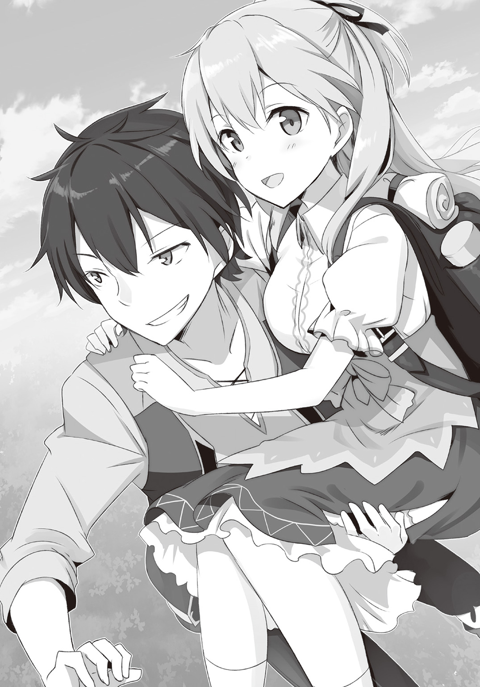
クロウは魔錫の糸を飛ばし、宙を舞う。
目を爛々と光らせたパスティアが犬鳴亭へと走っていく。アシュリーたちが慌てた様子でこちらに走ってきている。
クロウは笑った。
なぜだかわからないが、とても楽しくなった。
きっと、王都でも同じようなことになる。
そんな気がしたからかもしれない。
レイニアも笑っていた。
「さあ、行きましょう！」
あ と が き
そんなこんなな三巻です。
雨木シュウスケです。
書店でこの本をお手に取られて、あとがきを先に読まれた方へ。
本作は主人公の黒騎士ことクロウが、がんばった末にこれ以上は働かないことを誓い、元姫やメイドにお世話をされてダラダラと生きることを目指す自堕落日常系ファンタジーです。
主人公は引きこもりのヒモのニートです。どうかそのことをご承知になられた上で一巻二巻とともにお買い上げくださいませ。
今回も新キャラが登場します。
一つ目っ娘のイングリッドです。どんな活躍をするかは本文で確認していただけると幸いです。
さてさて著者紹介の方でも書きましたが、Nintendo Switchをゲットできました。なんか秋葉原の方ではすごい行列ができていたという話ですが、こちらでは予約して一ヶ月ほど待っていたら手に入りました。
これが地方の恩恵というものでしょうか？
後は『スプラトゥーン２』が手に入るかどうか......。
まぁ『ドラゴンクエスト11』をやりつつ待つことになるでしょう。
この原稿を執筆中は『三國志13』 with パワーアップキットをプレイしていました。
やつは、とんでもない時間泥棒でした。
もうすでに無印版を散々にプレイしていたはずなのに、今回も何度もプレイしてしまいました。
自分でも良くわからないんですが、『三國志』のシリーズは武将プレイが可能なナンバーのときが一番はまります。武将プレイの元祖だろう『太閤立志伝』なんて大好物です。強く復活を希望します。
最終的には君主プレイばかりやることになるんですけどね。
今作も黄巾の乱からの劉備プレイで、どこまで歴史イベントを起こせるか？ なんてことをやっていました。
赤壁の戦いまではいけたんですけどね。ただ、ここまで来ると曹操が強国のごり押しを開始するので、ここから先はイベントを起こせていません。
その他にも出師の表の頃にオリジナル武将で蜀に在籍して寿命で減り続けていく人材に頭を悩ませてみたり、俠客プレイで韓馥をどこまで生き残らせられるかに挑戦してみたり、戦法の天弓を改造するとホーミングレーザーみたいなことになるなとか思ってみたりと、本当に色々遊んでいました。
基本はオリジナル武将を作ってプレイするのが好きなんですが、今回は使えるイラストですごく気に入ったものが一枚ありました。
髭のおっさんです。
関羽のようなストレートではなく、曲がりくねって三つ編みなんかもしてあるような髭もじゃで、董卓の若い頃みたいなイラストなんですがなんでかすごく気に入ってしまったんですよね。不思議です。
さて、話を黒騎士さんに戻したいのですが......。
残念なお知らせですが、本作はこの三巻で終了となります。
クロウたちはお気に入りのキャラですので、またなにか別の方法で登場させることが出来たらと考えています。
それでは、これまでお付き合いいただきありがとうございました。
イラストの伍長さんや担当さん他、この作品に関わった全ての方に感謝を。
そして、次の作品でもお逢いできることを願って。
雨木シュウスケ
著者紹介
雨木シュウスケ あまぎ しゅうすけ
広島県出身。グータラしたいお年頃のおっさん作家。『スプラトゥーン２』発売前に『Nintendo Switch』をゲットできました。あとは『スプラトゥーン２』が無事に手に入るかどうか......この本が出る頃には手に入れていたいなぁ。
illustration
伍長 ごちょう
北海道釧路市出身、横浜市在住の絵描き。
最近ウクレレをはじめました。今はネットに練習動画も配信されているので便利な時代になりました！
ダッシュエックス文庫DIGITAL
黒騎士さんは働きたくない３
著者 雨木シュウスケ
© SYUSUKE AMAGI 2017
２０１７年９月30日発行
この電子書籍は、ダッシュエックス文庫「黒騎士さんは働きたくない３」
２０１７年８月30日発行の第１刷を底本としています。
発行者 鈴木晴彦
発行所 株式会社 集英社
〒１０１－８０５０
東京都千代田区一ツ橋２丁目５番10号
０３－３２３０－６０８０（読者係）
制作所 株式会社ＩＣＥ
本作品の全部または一部を無断で複製、転載、改竄、インターネット上に掲載すること、および有償無償に関わらず、本データを第三者に譲渡することを禁じます。なお個人利用の目的であっても、コピーガードを解除しての複製は、法律で禁じられています。